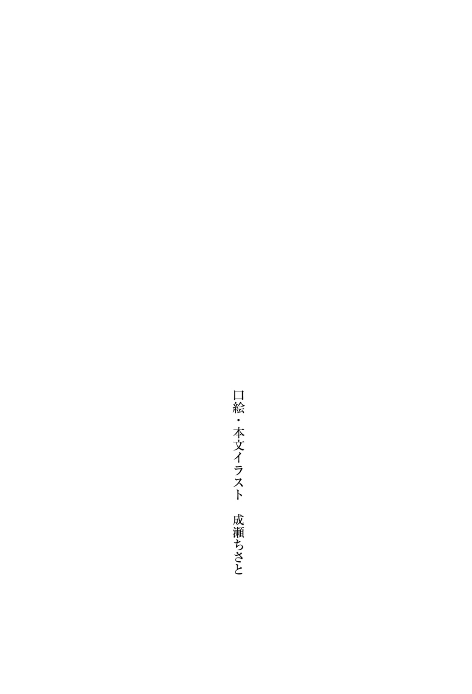

| Myrla<ミルラ>～VRMMOでやりたいほうだい～3 (HJ NOVELS) | |
| 悪糖 | |
| ホビージャパン (2018) | |



10 章 それが過 ちだと言うならば
桜の下で、私たちは出会った。
悔 恨 を諦 念 で塗 りつぶしながら何を成 し遂 げることもなく死んだ私は、かの神の手で呼 び戻 され、そして。
流れ着いた秘密の花園最 奥 部 、隠 された霊 園 。
茜 空が音を吸い込み、決して散ることのない桜が咲 き誇 るこの場所で。
私たちは、出会った。
『よく来ましたね。これまで大変だったでしょう、少し休んでいってください』
かつて地球と呼ばれたこの世界を滅 ぼした大罪人、遠 野 朝 日 。そう名乗った少女は、花 咲 くような軽 やかさで笑う。
聞きたいことがあった。聞かないといけないことも。この世界のことや、地球のこと、彼 女 自身について。
でも、私にとって一番大事なのは、それじゃなくて。
『遠野さんも、絶望を見てきたの？』
『朝日、と呼んでください。できればさん付けも無しで。あなたは知らずとも、私はずっとあなたを見ていましたので』
『質問に答えてよ』
『焦 らずとも全 てお答えしますよ。わかりました、ではその話からしましょうか』
焼けるように喉 が渇 く。
彼女の瞳 の奥 底 にあるのは意志の光だ。
絶望の中で抗 う意志を秘 めた、小さくも力強い光。
ともすれば、彼女は、この世界で唯 一 私の絶望を理解してくれる人なのかもしれない。その可能性に私は惑 う。
仲間を拒 み、地 獄 を望んだ私にこんなこと言う資格は無いのかもしれないけど。私は、ずっと――。
『長いお話になるので座 ってください。あ、そうだ。紅茶とかコーヒーとかありますけど、何か飲みます？』
『思っていたよりノリが軽い』
『性 分 ですので。死んでも直りませんでした』
紅茶をリクエストすると、軽く笑って彼女は私にボトルを手 渡 した。
透 き通 った焦 げ茶 の液体が詰 まった、ペットボトルのようなもの。この世界では見たことのないそれを訝 しみつつも、桜の下に敷 かれたレジャーシートにぺたんと座る。
ただの花見だった。
『これ、なんで触 れるの？ 他 のものには触れなかったのに』
『触れちゃダメですか？』
『便利でいいと思う』
朝日ちゃん（そう呼ぶことにした）はくすりと笑う。イタズラっ気のある笑 みだった。
『実像が存在する界が異なっても飲めるように、マルチ次元加工されているんですよ。私の時代ですと一 般 的 な技術です』
『日本語に翻 訳 してほしい』
『......触れるということです』
なるほどね。うんうん。そういうことか。
わからん。
『じゃあ次の質問。なんでこの世界にペットボトルがあるの？』
『正確にはＨｉＥＣＯボトルと呼ばれるものです。あっちゃダメですか？』
『じゃあもうそれでいいや』
良いか悪いかで言うなら良いと思う。軽くて丈 夫 なボトルは瓶 詰 めポーションよりもずっと便利だ。
投げやりに答えると、朝日ちゃんは少しむくれた顔をしていた。
『納 得 しないでください。全てを疑う姿勢は探求の基本ですよ。デカルトもそう言ってました』
『だったら振 り回 さないで教えてよ......。私の知るこの世界には、こんなボトルなんて無かったはずだけど』
『ああ、それなら』
立ち上がった朝日ちゃんは、霊園の一角に手を伸 ばす。茜空にぴーっと指で線を引くと、空はまるで幕のように揺 らいで裂 けた。
狭 間 の奥 に姿を現すのは、巨 大 な船。
船と言ってもボートの類 ではなく、もっとこう、スペイシーなお船。
宇宙船だった。
『この中で数百年ほど保存してました。それ、実は年代物なんですよ』
『だからーっ！ 急に世界観を広げるなー！ ついていけないからー！』
『説明しろと仰ったじゃないですかー』
朝日ちゃんがひょいっと幕を戻すと、まるで最初からそうであったかのように空は閉じた。
ぱっと見ではどこにも異常は見当たらない。この奥に常識すら覆 すようなとんでもないモノが眠 っているとは、夢にも思わないだろう。
『ファンタジーゲームだと思ってたのに......。いや、そうじゃないってことは薄 々 気づいてたけど、スペースなファンタジーってのは予想外だった......』
『ファンタジーでもゲームでもないですよ。ここは現実です。私にとっても、今のあなたにとっても』
やはり、そうなのか。
突 きつけられた真実に戸 惑 い、飲み込もうとして失敗する。
この世界の現実性は今となっては揺るぎないものだ。私に備わった五感が、ゲームだと思っていたこの場所が本物であると訴 えかける。
『かつての地球って言ってたね』
『そうです。この世界は地球の成れの果てに他なりません』
『朝日ちゃんは何者なの？』
『大罪人ですよ。地球を滅ぼした愚 か者 の、たった一人の生き残りです。いえ、死 に損 ないと言うべきでしょう』
こうして死後も残されたわけですし、と朝日ちゃんは言う。
死に損ない。死してなお死にきれなかったもの。命を散らそうと、そこで果てることを己 に許さなかったもの。
ああ、だから、彼女は。
私によく似ている。
『始めましょうか。地球と、神々と、この世界のお話を』
どこかからふわりと吹 き込んだ風が朝日ちゃんの髪 を揺らす。
朝日ちゃんの髪に添 えられた桜の花びら。その下に垣 間 見 えたのは、間 違 いなく銃 創 だった。
＊＊＊＊＊
かつて人類は科学技術の徒 であった。
科学文明が築き上げた栄 華 は地表を埋 め尽 くし、何百億という人々が海上に建設されたコロニーに居を構えてなお栄えた。
主たる障害や社会問題は繁 栄 と共に取り除かれ、楽園となったこの星で人々はそれは優 雅 な暮らしを送っていた。
それがかつての地球だと、朝日ちゃんは言う。驚 くことに、私がよく知る地球の数十年後の姿らしい。
『随分と様変わりしたんだね』
『様変わりと言うなら、今の時代が一番変わりましたよ。私が生きた時代から数百年経 ったのがこの世界になりますが、文明の影 も形も無くなってしまいました』
『それどころか地球かどうかすら怪 しいレベル』
『間違いなくここは、あなたから見て未来の地球ですよ』
つまり、私たちプレイヤーが生きた時代から数十年後に朝日ちゃんの時代があって、そこからさらに数百年経ったのがこの世界。
私たちプレイヤーはゲーム世界にログインしたのではなく、遥 か未来の地球にタイムリープしていたことになる。
耳を疑うような荒 唐 無 稽 な話だが、まずは聞くことにしよう。
『私が生きた時代の地球は本当に栄えていたんです。人類が築き上げてきた栄華が極 まり、あの頃 が文明の最盛期だったと言っても過言では無いでしょう』
『まさにこの世の楽園か』
『とは言え今思えば楽園だったというだけで、当時の人にとってはそうでもありませんでしたよ。いかに満たされようと不平不満はありましたし』
『......いつの世でも変わらないんだね』
私が生きた時代も数十年前よりはよほど豊かになったと言うのに、人々は変わらず不平不満を連ねていたように思う。
向上心と言うべきか、強 欲 と言うべきか。きっとどちらも正しいのだろう。
そう考えると、不意に頭が強く痛んだ。これ以上思い出 すことを拒 絶 するように。
『痛っ』
『どうされました？』
『いや......。なんだろ、頭痛が』
頭を振って頭痛を振り払 う。痛みはすぐに引いていった。
『ごめん、続けて』
『ええ......。わかりました。多くのものを手にした人類にも、未 だ手が届かないものがひとつだけありました。地表での繁栄に限界を迎 えていた人類はおおよそ全ての好 奇 をそちらへと向けたのです』
それが、宇宙。
最後のフロンティアとも呼ばれる宇宙そのもの。
宇宙進出計画は人類が持つ長年の悲願であり、そのために必要な技術的障 壁 も多くが取 り払われたという。
太陽系の外へと進出すること自体は不可能ではない。人類はその領域にまで達 していた。
『しかし事実として、人類は宇宙へと旅立つことはできませんでした』
『そこまでやっておきながら......。何がダメだったの？』
『エネルギー問題です。深宇宙に飛び立つためには光速を超 えた速度が必要です。そのために私たちは特 殊 相対性理論を誤 魔 化 す技術を開発しましたが、その技術を実用化するために惑 星 数個分のエネルギーが必要となりました。開発しつくされた当時の地球にそんな余力は無く、エネルギー面において私たちは限界に達してしまっていたのです』
当時の地球人口は数百億にまで達していたという。
この狭 い星にそれだけの人口を収容することは極めて困難であったが、人々はそれを成し遂げた。成し遂げてしまった。
地球から得られるありとあらゆるリソースを総動員し、かつ器用に循 環 させることでなんとか人口を維 持 することには成功した。しかし膨 大 な人口を維持するだけで精 一 杯 になっていた当時の人類には、とても宇宙空間へと進出するための莫 大 なエネルギーを賄 うことはできなかった。
『私たちはあらゆる手段を講じました。天然資源が枯 渇 した後もメガソーラーを載 せた人工衛星を静止軌 道 に打ち上げ、宇宙ステーションに核 融 合 炉 を設置しました。地上に水素発電所を無数に建てたりもしたのですが、これは実のところ失敗でしたね』
『待って。水素を発電に使えるんだったら、それって実質無 尽 蔵 のエネルギーが手に入るんじゃないの？』
『水素発電と言うのは火力発電の燃料を水素に置 き換 えたものに過ぎません。エコではあるんですけども、そもそもタービンを回すという形式自体が発電効率が悪すぎたんです。施 設 の管理維持に使う資材も馬 鹿 にならなかったので......。残念ながら廃 止 という形に』
これでも頑 張 ってリサイクルしたんですよ、と朝日ちゃんは言うけど、管理維持できないから取り壊 さざるを得ない状 況 って相当だ。
ネックになっているものこそエネルギーだったが、それ以外の資源の方もかなりヤバかったのだろう。
文字通り地球上のあらゆる資源を総動員して、それでようやく人口の維持が精一杯だったと。
『誰 もが豊かな生活を送れる社会を実現した果ての果てがこれです。生活は豊かになりましたが、代 償 として種としての限界を迎えてしまいました。気がついたときにはとうに手 遅 れだったのです』
数百億を超える人類の全てが当時の先進国水準の生活を送っていたという。
行き着いてしまった人類の幸福な終 焉 。たとえその場所で停 滞 することになっても、人類は幸福を手放せなかった。
『幸福な停滞に私たちの未来は閉ざされました。手を伸ばせば届いたはずの星々は遥 か遠く、あと一歩のところで宇宙への道は途 切 れてしまいました』
『でも、諦 めなかったんだ』
『はい。進み続けることは時として痛みを伴 います。足を止めたほうが幸福なのかもしれません。しかし、それでも人は歩みを止めない』
『進む先にたとえ地獄があろうとも、ね』
私たちは曖 昧 に笑う。ジョークで流すには少し気持ちが篭 もりすぎていたのかもしれない。
私は足を止められなかった。待ち受ける結末を知っていても進み続けた。
きっと、彼女たちもそうだったんだろう。
『当時の科学の最 先 端 に『研究室』という機関がありました。彼 らは宇宙への好奇を諦めない大馬鹿者の集まりで、私はそこで働く研究者の一人でした』
『朝日ちゃん、研究者だったんだ。まだ若そうなのに』
『実は優 秀 だったんですよ。ふふん』
胸を張る彼女の年 頃 は、私と同じか少し上といったところか。それで最先端に居たのだから大したものだと思う。
『それで、人類は何に手を出したの』
『色々やりましたよ。実現できそうなエネルギー資源には片 っ端 から首を突っ込み、宴 会 の一発芸から決して世に放っちゃいけない類のものまで作りました。あの頃はまさしく狂 騒 と言うべき科学の混 沌 でしたね』
曰 く、研究室で寝 落 ちしたかと思えば反物質を枕 代わりに使っていただとか。
曰く、散歩していたらパンを咥 えた全身パワードスーツの女子高生に轢 かれかけただとか。
そんな狂騒が彼女の日常だったと言う。科学の混沌すごい。
『『研究室』の職員は狂 人 揃 いでしたが、私たちの研究チームはその最たるものでした。魑 魅 魍 魎 はびこる『研究室』においても一目置かれ、隔 離 病 棟 と呼ばれてたくらいです』
『ねえ朝日ちゃん。やけに誇らしげだけど、それって多分蔑 称 だよね』
『私たちの価値観では狂 えば狂うほどクレイジーなんです』
『そのまんまじゃない』
言わんとすることはわかるけども。攻 略 組と良く似た何かを感じる。
マトモな神経ではたどり着 けない領域がある。そこに踏 み込めるのは選ばれし狂 人 のみだ。
朝日ちゃんたちもまた、人として大切なものを捨ててまで先に進もうとしたのだろう。
『ちなみに何研究してたの？』
『そうですね......。一言で言うなら』
茶 目 っ気 たっぷりに、朝日ちゃんは人差し指を口に当てて、片目を閉じる。
『魔 法 です』
『......魔法ときたか』
科学と魔法が交差した。いや、科学が強 引 に魔法面へと飛び込んでいった。マジかよ。
本気で言ってんのか、というツッコミすら無 粋 だ。時代における頭脳集団である彼女たちができると信じて突っ込んだのだ。
私の知る常識はひとまず置いておいて、とりあえず朝日ちゃんの話を聞く。
『ものすごーく簡略化して、魔法の概 論 だけなぞりますね。まずは思考実験です。ここに試験管があり、中にはヒヨコがいるとします』
『まってやめてそれは良くない』
『ヒヨコをすりつぶします』
『あああああああああ!! 』
なんてことを......なんてことをするんだ......！
こんな実験なんかのためにひよこの命を奪 うだなんて......！ これが、これが人間のすることなのか......！
『ポール・ワイスの思考実験です。さて、この実験の前後で試験管の中から何が失われましたか？』
『朝日ちゃんが......そんな人だとは思わなかった......！』
『あの、思考実験ですよ？ あくまでも仮想の話ですからね』
わかってるけど......！ わかっているけども......！
私は......！ 失われた無 垢 な命のために......！ 何かがしたいんだ......！
『この問いには多くの答えがあります。物理学、生物学、哲 学 、どういった観点から見ても答えが変わる問題です。私たちの研究チームが新たに提唱した学問、魔法学における解釈もまた、既 存 のものとは少し異なりました』
魔法学と来た。新たに学問を作ったのか......。
それだけ本気で取り組んでいたらしい。魔法学なるファンタジックワードが当然のように並んでくる様子にはやや違 和 感 を覚えるが、彼女は至って真 剣 だ。
『生が反転し、死が生じたというのが私たちの解 釈 です。魔法学というのはそのもの、生や死といった概 念 を取り扱 う学問なんですよ』
『概念......？』
『哲学との差異は概念を物質に近い形で取り扱っている点です。事実として、私たちはヒヨコをすりつぶした試験管から死の概念を取り出すことができます』
『ええと、どうやって？』
『それは魔法学を支える基 礎 技術です。ご所 望 とあるなら説明しますけど、聞きますか？』
私は苦 笑 いして首を振った。
聞いたところで理解できる気はしない。それこそ魔法のような技術で取り出したのだろう。
ひとまず大事なのは、概念という擬 似 的 な物質を取り扱うことができるという点だけだ。
『取り出した概念には高純度のエネルギーが秘められていると目されていましたが、そのままでは扱うことができません。まずは概念をエネルギーに変 換 するための装置が必要となります』
『あー......。わっかんなくなってきた。ええと、概念ってのがあって、上手 く行けばエネルギーにできるから、それを使って宇宙に行こうって話でいいんだよね？』
『その解釈で合ってます。もう少しですので、頑張ってください』
現実とファンタジーが頭の中でぐるぐるする。
噛 み砕 いて説明してくれているからなんとかついていけているけれど、専門用語が飛 び交 うともっと大変なことになるのは容易に推測できた。
『概念をエネルギーに変換する装置。それは世界のシステムに組み込まれる形で実現されました』
『世界のシステム？ どういうこと？』
『物理法則や因果律に代表される、世界を動かす仕組みそのものです。魔法学の勃 興 によりシステムに従って生きる時代は過ぎ去り、私たちはシステムすら書 き換える力を手に入れたのです』
はえー。
そうなんだ。魔法でシステムを書き換えるのね、うんうんなるほど。
わからん。
『概念をエネルギーに変換するためには必ず対 となる概念を用意してバランスを取ります。そうしなければある一方の概念のみが膨 れ上 がり、均 衡 が崩 されてしまいますので。逆に言えばバランスさえ取れるなら、一方の概念が膨れ上がるに同調して対となる概念も活性化し――』
『ごめん。もうわかんない』
『――失礼しました、蛇 足 でしたね。ともあれ私たちは、概念をエネルギーに変換する最初のシステムを築き上げました。最初のモデルに使用されたのは死の概念と、その対にあたる生の概念です』
死と、生。それを聞いた時、頭のなかで直感が閃 く。
死 滅 と再生。その言葉の並びには覚えがある。忘れるものか。
『死と生の概念を司 るシステム。生み出されたそれは、まさに究極のエネルギーソースと呼ぶにふさわしいものでした』
ああ、なるほど。そこで繋 がってくるわけだ。
見えてきた。つまり、彼女たちは、生み出してしまったのだ。
『ゆえに私たちは、最初のシステムモデルにこう名付けました。――ウルマティア、と』
この世界における絶対者。究極にして最高位の支配者。
彼女たちは、神を作った。
＊＊＊＊＊
感情が迸 るのを抑 えられなかった。
握 りしめたボトルが手の中でぐしゃりと潰 れる。
キャップがはじけ飛び、中の紅茶が溢 れ出 て、レジャーシートを濡 らす。
深呼吸。ひとつ、ふたつ、みっつ。
『あなたたちが、神を作ったと』
『......そうです。私たちが、あれを生み出してしまいました』
ごめんなさい、と朝日ちゃんは頭を下げる。
私は黙 って首を振った。謝罪が欲 しいわけではない。
続きを促 すと、幾 分 か沈 んだ口調で朝日ちゃんは話を続ける。
『システムは全部で六つ作られました。自由と束縛のシステム 、豊穣と荒廃のシステム 、深海と蒼穹のシステム 、武勇と叡智のシステム 、金槌と算盤のシステム 、そして死滅と再 生のシステム 。私たちはより多くのシステムを作ろうとしていましたが、実行に移せたのはその六つまでです』
そして人類は無限のエネルギーを手に入れた。宇宙へと飛び立つ最後の制約は解き放たれ、星々を掴 むあと一歩のところまでたどり着いた。
しかしそれは、ついぞ叶 わなかったと言う。
『でも、ダメだったんだよね。何が起こったの？』
『私たちは、歴史を繰 り返 したんですよ』
やはりそうなのか。
どれほど地上が楽園になろうと、社会的な困難が取り払われようと、人は何度でも繰り返すのか。
『元々地上には人口が多すぎました。いかに社会福 祉 が充 実 しようと、それだけでは抑えきれなかったほどに不平や不満はありました。当然、増えすぎた人類を減らすべきだという声も』
声を上げた彼らも、はじめは平和的かつ真っ当なやり方で臨 んだと言う。
宇宙へと飛び立つ翼 を手に入れるために、閉ざされた限界を破って未知なる世界での繁栄を掴むべく、為 政 者 として正面から未来を目指していた。
そんな彼らを潰 したのが社会と人道だ。人口の削 減 、生活水準の縮小、それを望まない社会の声に彼らはたやすく叩 き潰された。
いつしか政界に残ったのは、今ある社会を持続し続けるだけの為政者たち。自然、叩き潰された方の彼らはこの構図をひっくり返すべく、革命を望むようになる。
栄えるほどに未来が無くなる現実を前に、やがて人類は再び闘 争 の道を選ぶこととなる。
艱 難 辛 苦 を乗 り越えてきた人類を最後に阻 んだのは、自らが掴み取ってきた繁栄そのものだったとは、なんとも皮肉な話だ。
『システムを生み出すために使われた魔法があります。世界の仕組みに干 渉 し、書き換えることができる大規模な魔法です』
世界の仕組みを書き換え、神を生み出す魔法。
この世界を変革させた、始まりの魔法。
『名を、創神 の魔法と言います』
ひとつ、ピースが埋まる。
ミルラ。ゲームのタイトルであり、この世界の名でもある言葉。
創神 の魔法。それが、すべての始まりだった。
『創神 の魔法で生み出されたシステムには、全８９６階層にわたる厳重なプロテクトが課されていました。下手に扱えば世界が滅びかねないことはわかっていたので。ですが――』
『......プロテクト、突 破 されたの？』
『はい。私たちが万 全 だと思っていたセキュリティは、システムそのものを捻 じ曲 げる魔法的なアプローチに対して無力でした』
朝日ちゃんは唇 を噛む。当時のこと、よほど悔 しかったのだろう。
『何者かにより死滅と再生のシステム が奪われ、程 なくしてそれは過激派組織・人類衰 退 戦線の手に渡りました。彼らはそれを手に大規模なテロを引き起こしたのです。膨大なエネルギーを惜 しみなく費やしながら無差別虐 殺 を繰り返す彼らに、消 耗 を気にしながら戦う軍部はじわじわと追い込まれることになります。私たち『研究室』が軍部にシステムを貸 与 することを決めるまで、そう時間はかかりませんでした』
感情を押 し殺 し、淡 々 と。
主観を交えず当時の状況だけを語る彼女は、辛 そうな顔をしていた。
『始まったのはシステムとシステムの戦いです。平和な世界を舞 台 に巻き起こった、莫大なエネルギー同士の正面衝 突 は大きな破 壊 と混乱を巻き起こしました。この時、当時の世界人口のおよそ５％、居住可能地域 の９％が消失したと言われています。そして――』
ぐしゃり、と。
ボトルが握りつぶされる。私ではなく、朝日ちゃんが手にしていたものだ。
『人類史上類を見ない大混乱は、力に酔 った軍部の分 裂 により決定づけられました』
悪意の鼓 動 を、感じ取った。
加速的に状況が悪化していく。何かが世界を嘲 笑 っている。混沌を望んでいるかのように。
『分裂した軍部は他勢力との統 廃 合 を繰り返し、最終的に地球は六の勢力に支配されました。あくまでも戦勝を目指す武闘派 。事態の平和的収束を望む和平派 。経 済 圏 の支配を目 論 む経済派 。緑溢れる地球を取り戻そうとする自然派 。専守防衛に徹 する観測派 。そして、人類の浄 化 を掲 げて各地でテロを起こし続ける終末派 。システムを手に樹立した六の勢力は、地球の支配権を巡 って幾 度 となく争いを繰り返しました』
『......戦争の時代が、繰り返されたんだ』
静かに首 肯 する朝日ちゃんは拳 を痛いほどに強く握りしめていた。唇を噛み締 め、悔しそうにうつむきながら。
彼女としても決して本意では無かったのだろう。冷静さを振る舞 っているが、彼女の胸の内は察するに余りある。
自分たちが生み出した飛 躍 への翼が、戦争に使われて。面 白 いわけがない。
『戦争の中で『研究室』は解体され、研究者たちは散り散りになりました。私もまたリグリを擁 する自然派に捕 まり――。いえ、このあたりについてはいいでしょう。なんやかんやあって、脱出しました』
『景気よく端折 ったね』
『本筋からズレてしまうので、フィールドワークの応用で突破したとだけ。アドベンチャー編が気になるのでしたら、今度ゆっくりお話しますよ』
アドベンチャー編をくぐり抜 けてきたらしい。見かけによらず、ガッツに溢れる子だった。
ひょっとしたら、ショットガン片手に古代遺 跡 とか探 索 しにいくタイプの研究者なのかもしれない。私の脳内で朝日ちゃんのイメージが微 修 正 された。
『脱出した後は戦火から逃 れながら放 浪 を続け、情報をたぐりながら、魔法学研究チームのリーダーを捜 しました。この状況をなんとかできるのは、あの人しかいないと考えていたので』
『そんなにすごい人だったの？』
『あの人は私たちの世紀を代表する頭脳です。魔法学の基 礎 的 な技術・理論を編み出し、常に魔法学の最先端を切り開き続けていました。今となっては、歴史上誰よりも魔法に詳 しかった人物ですね』
何もないところから学問を作り出し、世界を書き換えた稀 代 の天才。
歴史というものが残っていれば、確実に名を残すような人物だったのだろう。
『組織の手から逃れ続けていたリーダーは、単身で創神 の魔法の改良を続けていました。システムを書き換えて、この戦争を終わらせるために。私もまたあの人に協力し、幾 ばくかの月日の末に私たちはそれを完成させました』
『ええと、システムを書き換えると戦争を止められるの？』
『少し専門的な話になってしまうんですけども、システムを思い通りに動かすための制御権限 があるんです。その上に更 に上位の制御権限 を創設し、制 御 をこちらの手に引 き戻すことを目論みました。もっとも、それは――』
少し思案にくれてから、朝日ちゃんは言う。
『暴走する車のハンドルを無理やり奪い取るような暴挙ですけども』
簡単にはいかない。上手くいったとしても、事態を収束させるとは限らない。更なる暴走を引き起こし、誰にも止められない事態を招くかもしれない。
それだけのリスクはあった。しかし、それでも彼女たちはそれをやった。
『大きな苦労はありましたが、私たちは魔法学的なアプローチから制御を奪い取ることに成功しました。世界中に散らばった六のシステム全てを奪 還 するところまでは確かに成し遂げたのです。しかし問題はここからでした』
終わりなき戦争に生まれた一 瞬 の空白。
それを確実なものにするためには、まだ足りない。
『六のシステムを守り抜くには、二人の科学者だけではあまりに力不足です。また、創設した上位の制御権限 を再び奪われるというリスクもありました。人員は不足し、安全性は確保できず、そして時間に猶 予 もありません。だから、私たちは――』
だから、彼女たちは。
『制御権限 を、システムそのものに組み込んだのです』
禁 忌 に踏み入った。
『システムに自 我 と自由を与 え、自らの身を自らで守ることを期待したのです。苦肉の策でした。しかし、私たちにはもう、それしか打つ手が無かった』
『そうして生まれたのが、私が知る神々か』
『はい。システムが神となったのはこの時でした』
朝日ちゃんは首肯する。システムとして生まれ、後付けで自我を与えられた存在が神々だと。
例えるならば、重力や引力のようなエネルギーを生み出す自然法則を擬 人 化 したもの。
自我を持つ大いなる法則 の具現化。
それが、神々の正体だ。
『つまり神々とは、作り出された法則が自我を持ったものです。例えるならおとぎ話に出てくる火の神や山の神のような自然現象の神格化を、私たちは科学的に一から成 し遂 げたことになります』
『魔法を使って自然現象を作って、それに人格を与えて、神にしたんだ』
『その認 識 で合っています』
混沌の中で極まった科学は、いよいよ神をも生み出した。
しかし、ここで一つ疑問が残る。人に作られて人に自我を与えられたとするのなら、神々はあまりにも人に対して敵対的だ。
『終わりなき戦争を止めるため、再び平和を取り戻 すため、私たちはシステムに平和的な人格を与えようとしました。それは極めて高度な魔法です。リーダーは人工生命技術の応用と言っていましたが、この分野は私の専門外です。実際の作業はリーダーが担当し、私はアシスタントに徹しました』
産 毛 がざわついた。
ここまでの話の中で、ピースが一つ抜け落 ちている。空白のように、くっきりと、輪 郭 を描 きながら。
私の予想を裏付けるように、朝日ちゃんは言葉を続けた。
『――わかってはいたんです。あの時、リーダーが既 に狂っていたことは』
やはり、そうなのか。
この事態を仕組んだ悪意があるとすれば、それはその一点に集約する。
『そして私も、リーダーを止められない程度には正常ではなかった。だから私は、世界を滅 ぼす最後の一手を見落としてしまったのです』
朝日ちゃんの瞳 に渦 巻 く、地 獄 のような絶望。
その一 端 からは、強い後 悔 と自責の念が感じられた。
『今となっては、平和を願ったことすら正しかったのかもわかりません。ともかく私たちは、神々に平和的な人格を与えました。そして――』
違 う。そんなわけが無い。そんなことは認められない。
それは純 粋 な願いだ。踏みにじってはいけない、踏みにじられてはいけない、正しい願いのはずだ。
『神々は平和のため、争いを続ける人類を滅ぼしました』
それが過 ちだと言うならば。
それが過ちだと言うならば――。
私は、何を呪 えばいい。
＊＊＊＊＊
強い歪 みを感じる。隠 されることもない違和感を。
憎 悪 を。絶望を。この世界に破 滅 と混沌を引き起こさんと望む、剥 き出しの悪意を。
彼 女 が生きた証 しを何かが嘲笑っている。姿を見せない巨大な災 厄 が、彼女の道筋を閉ざしている。
『全 ては私たちのしでかしたことです。私が、かつて地球と呼ばれたこの世界を滅ぼしました』
『そんなこと......っ！』
『いいんです。私は、死してなお許されざる大罪を犯 しました。その事実は変わりません』
違う、と叫 びたかった。できなかった。言葉を呑 まされた。
表出した彼女の絶望。暗黒を纏 い渦巻くそれに、私は手を伸 ばすことを躊躇 った。
『リーダーはこうなるとわかっていたのでしょう。あの人は暴走を始めた神々を見て笑っていましたから。――リーダーが何を考えていたのか、私には最後までわかりませんでした。ただ、笑いながら何処 かへと去っていったあの人は、去り際にひとつの権限を置いていきました』
『............』
『終末級災害に備えて『研究室』が用意していた、大規模な保管施設への入室権限です。世界の再建に必要な全てを保管しており、私たちはそれを『ノアの方舟 』と呼んでいました』
朝日ちゃんは立ち上がり、茜 空の幕を指で裂 いた。その奥 に姿を見せるのは巨 大 な宇宙船。
これが、『ノアの方舟』。仮に地球が爆 発 しても耐 えられる設計だと朝日ちゃんは言う。
『私はこの中に入り、冷 凍 睡 眠 で数百年を過ごしました。いつの日か滅びた世界をやり直すために。目覚めた時、私は再びこの世界に出会って――』
滅びた世界の数百年後の姿。それがどんなものだったのか。朝日ちゃんの目に映る世界がどんな色だったのか。
わからない。わからないけど、私は。
『......再び目覚めた世界で、神々は平和的な存在としてそこに在りました。平和のために私たちは協力し、方舟の知識を使って世界をやり直しました。砕けた環 境 をもう一度繋ぎ止 め、人類を含 めたいくつもの種を再生し、いくらかの文明を与え、世界の再建を見届けて、それから、私は、この場所で......っ』
立ち上がり、うつむく朝日ちゃんを抱 きしめる。
もういい。もういいんだ。
朝日ちゃんのこめかみに刻まれた銃創から目をそらし、私は朝日ちゃんの言葉を塞 いだ。
『お疲 れ様 、朝日ちゃん。よくがんばったね』
『......どの神の仕 業 かは知りませんが、死した後も魂 を呼 び戻され、私はここから世界を見ていました。これが私の、大罪の果てです』
つまらない話でしたでしょう、と笑う朝日ちゃんに、笑わなくていいんだよと私は言った。
泣きたい時は泣けばいい。誰が許さなかったとしても、私だけは彼女を許す。
彼女は刻み込まれた絶望に抗 ったのだから。どんな絶望が道を阻んだとしても、彼女は最後まで進み続けたのだから。
それが過ちだったとしても、私は彼女の道筋を誰にも笑わせない。
『ありがとう。それと、ごめんね。話を聞くの、遅 くなっちゃった』
『ごめんなさい......。もっと早く真実を伝えられれば、あなたまで死ぬこともなかったのに』
『違うよ。だって私馬鹿だから。きっと、死ななきゃわかんなかった』
鏡のような錯 覚 の正体を理解する。私たちは、本当によく似ていた。
気づいたときには手遅れで、なんとかしようと地獄を望んで、どうしようもなく失敗して、絶望の底に突 き落とされて、挙げ句の果てに死 に損 なって。
それでも、まだ、諦められない。
『朝日ちゃん。頼 みがあるんだ』
『私も、あなたに頼みがあります』
体を離 し、見つめ合う。絶望の奥 底 に光を宿す彼女は見 惚 れるほど綺 麗 に笑っていた。
泣かなくていいの、と私は聞いた。まだ終わっていませんから、と彼女は答えた。
泣くのは全部終わってからでいい。そんなところまで似ていて、示し合わせたように小さく笑う。
『あーあ、憎いあんちくしょうをぶっ飛ばして何もかも終わりにするつもりだったのに』
『悪なんて何処 にもなくて、正義もまた為 されない。ここには絶望しかありません』
『出来の悪い虚 構 だったよ、まったく。私はこんなものに惑 わされてたのか』
虚構はここに打ち破られ、残 酷 な真実が姿を現した。信じるべき正義も倒 すべき悪も無い、ただただ残酷なだけの真実が。
今ならわかる。プレイヤーがしていたことは何だったのか。ウルマティアが何故 あんなことを言ったのか。リグリは私に何を求めているのか。
私の中で黒々と渦巻いていた絶望は緩 やかに溶 けて消えていく。
雪解け水のように澄 んだ想 いを胸に、私は再び覚 悟 を決めた。
『私さ、ウルマティアを殺したかったんだ。それだけだったんだよね』
『知ってます。ずっと、見ていましたので』
『でも、今はもうそれも無くなっちゃった』
脱 出 も、生存も、私は何も望んでいなかった。ただ一つの望みも打 ち砕かれて、私はようやく真実を知った。
何ができるのか。何をしたいのか。何をするべきか。今はまだ考えがまとまらないけど、ともかく戦うべき敵を、私は知った。
姿を現した本当の敵。その正体を私は、よく知っている。
『絶望だ。この絶望、ぶっ壊すよ』
『ええ、共に行きましょう。まだ何も終わっていませんから』
私が差 し伸ばした手を、朝日ちゃんは確かに握り返してくれた。
迷いながら進み続けた道の果て。それが過ちだったとしても、私たちはもう一人じゃない。
一 緒 に行こう。一緒にこの絶望を越えよう。一人では越えられなかった絶望も、二人ならきっと越えていける。
一人では絶望に負けてしまうような半人前の私たちは、ここではじめて主人公になれたのかもしれない。
私の物語は終わった。朝日ちゃんの物語は終わった。
だからここから始めよう。
私たちの物語を。
＊＊＊＊＊
それからしばらくして、私たちはリグリの下に帰ってきた。
私と、朝日ちゃん。私たち二人を出 迎 えたリグリは相変わらず優 しい顔をしていて。
彼女の心を想って、私は少し目を伏 せた。
『久しぶりですね、リグリ』
『あら、あなたも来たのね。たまには出歩いたほうがいいわよ、あんなところにずっと引きこもってないで』
『小言はやめてくださいよ。それに私は、もう終わった人間ですから』
『......私たちは、今もあなたを待っているのだけど』
世界を滅ぼした神と、神を生み出 した人。
世界を作り直した人と、それに協力した神。
被 造 物 と造物主であり、管理者と製作者であり、破 壊 者 と大罪人である彼女たちの関係は、きっと共犯者という言葉が一番近い。
色々なものを割り切り、飲み込んで、朝日ちゃんは神々と協力関係を築いたという。
『聞かせてくれるかしら。ここまで世界を作り直したと言うのに、どうしてあなたは――』
『それがわかるのは彼女だけですよ』
人が神を生み出したことは神話に語 り継 がれているが、それ以上の詳 細 は当の神々にも伝えていないらしい。きっと話したとしても良いことは無いだろう。ここに生きている神々は、造られた存在であるとは思えないほどに人間らしかった。
作り物が支配する作り物の世界。
偶 像 めいていて、それでもここは、決してまがい物なんかじゃない。
『ただいま、リグリ』
『答えは見つかったかしら』
『うん』
気 恥 ずかしくて、私はそれしか言えなかった。
言葉を探しあぐねて、失敗して、何かを言わなきゃいけないって気持ちだけが先走りして。
『言いたいことがいっぱいあるんだ。謝 らないといけないことも。でも、もうちょっとだけ待って欲しい』
リグリが私に何を求めているのかはわかっている。
思えば最初から、彼女はプレイヤーを警 戒 していた。一周目の時に起きてしまった『衝突』を危 惧 していたから。
だからリグリは、私に期待した。
でも、それをどうにかする前に。私にはやらないといけないことがある。
『決着、つけないといけないから。全部終わらせてくるよ』
『......そう。ならば、私は見守りましょう』
リグリはそれでも微笑 んだ。私の行動を見守ると、そう言ってくれた。
ごめん、それとありがとう。全部終わったらちゃんと話をしよう。リグリの言いたかったこと、全部聞くから。
『いいのよ。きっとあなたは、私の予感が正しかったと証明してくれるのだから』
『どんなに期待されても私は私だけど。でも、やれることはやろうと思う』
『それでいいわ。二度の死を迎 え、三度目の生を得て、それでもあなたは何を望むのかしら』
リグリの体から溢れ出る神性な力が私の体に流れ込む。豊穣と荒 廃 の概念がリグリの中でエネルギーとして純化され、私の体に染 み渡っていく。
自らの体が構成されていく不思議な感覚の中、私は目を閉じた。
『私は何も望まないから』
だから、
「これからそれを見つけてくるよ」
発した声は、もうぼやけていなかった。
ひやりとした森の風が肌 に当たり、私は小さく身 震 いする。しぱしぱと見開いた目には鮮 やかな木 漏 れ日 が映り、みずみずしい感覚がより鮮 明 になる。
ぐっと握った拳は確かな感 触 を伝えてくれて。
私は、この世界に戻ってきた。
＊＊＊＊＊
生身を得てもなお、私はシステムを取 り戻すことは無かった。
死んだからシステムを失ったものだと思っていたけど、こうして生き返ってもシステムは使えない。原因はわからないが、とにかく使えないものは使えなかった。
おかげでインベントリ内の素 敵 アイテムも、他 のプレイヤーとの連 絡 手段も、相変わらず失ったままだ。
手に入れたのは、生きるには不便なほど脆 弱 な生身の体だけ。
それと、生前身につけていた装備をリグリが持ってきてくれた。
『使いなさい』
「いいの？ 戦いのための道具だよ？」
『戦いに使うのはダメよ。危ないことは、ダメ』
「難しいこと言うなぁ......」
受け取った『モーンブレイド』と『ストームブリンガー』を持て余す。血を求める魔 剣 を戦い以外の何に使えって言うんだ。じゃがいもを剥くには不向きだと思うんだけど。
ひゅんひゅんと剣 を回し、体の具合を確かめる。電子の体よりも鮮明な感覚を得た生身の体。
システムがあった時とは違って、動けば疲れるし怪 我 をすれば血が流れる。
本当に不便な体だけど、それが妙 に嬉 しかった。
「よし」
使えない剣と、未完成の意志。それから不確定な未来も。
それだけ持てば十分だ。三度目のスタートは、随 分 と身軽に始まりを告げる。
『......あの、無理してませんか？』
生身を得てもなお朝日ちゃんの姿は変わらず目に映っていた。触 ろうと思えば触ることもできる。
一度認識したら感覚が次元の誤差を埋 めてくれる、と説明していたが、相変わらず原理はよくわからん。
「無理って、何が？」
『色んな事が一気にあったので、気が動転しているんじゃないかと危惧しています。もう少し整理をする時間をとってもいいんですよ？』
「ああ、そっちは大 丈 夫 」
心配そうな顔で覗 き込む朝日ちゃんに、私は笑って首を振 った。
確かに価値観は大きく変わった。虚構は打ち砕かれ、真実が姿を現して、ここには正義も悪も無くなった。
だとしても、これまで心を占 めていた絶望が消えた今、気持ちは不思議と凪 いでいる。
文字通り生まれ変わったような、そんな気分だ。
「私、メンタル強いから」
『......強すぎるんです。無理しないでくださいよ』
「ありがと。過去、片付けてくるよ」
『なら、過去を終わらせた先で会いましょう』
ぱしんとハイタッチ。ちょっとだけ待ってて朝日ちゃん。すぐに終わらせてくるから。
『準備はいいわね』
リグリが生み出したワープゲートと、その奥に広がる景色を見て、私は意志を強くする。
深呼吸をひとつ、ふたつ。覚悟を決めて、一歩踏 み出して。
三 度 、決着の地へ。
＊＊＊＊＊
降り立った場所は見覚えのある神 殿 の中。
神殿と言ってもラインフォートレスの大 神 殿 では無い。豪 奢 な装 飾 が死者の魂を宥 めるこの場所は、ウルマティアの神殿だ。
黒い影 がうごめくこの場所に降り立ち、壇 上 に佇 む黒い影を見つけ、私は剣を抜く。
「やあ、ウルマティア」
呼びかけた声にそれは反応する。
以前会った時よりも少し憔 悴 しているのか、精気に欠けた顔はそれでも驚 きを示した。
『君は......。死んだと、思っていたが』
「地獄の底から戻ってきたの。また死に損なったよ」
『その体に纏う神気......。なるほど、リグリの手引か』
ウルマティアは階段を飛び降り、私たちは再び相対した。
一度目は互 いを憎悪する敵として。二度目は一方的な憎悪をぶつけるどこか歪 な形で。
そして、三度目は。
「この世界のこと聞いてきたよ。ここさ、本物なんだってね」
『本物？ どういう意味だ？』
「そのまんまだよ。実のところ私たちはこの世界のこと、偽 物 だと思ってたんだ」
だから壊 した。持てる力の全てを用いて、先に進むために何もかもを轢 き潰した。
脱出のため、生存のため、復 讐 のため。考えは少し異なったかもしれないが、誰 しもがしていたことは同じだ。
そしてその行 為 は、この世界に生きる彼 らにとってどう映ったか。私たちの犯した罪は一体どういうものなのか。
全てを知った。突きつけられた。その罪から逃 げようとも、言い訳しようとも思わない。
私たちは、この世界の侵 略 者 だ。
『......そうだ。君たち冒 険 者 はこの世界を壊した。だがしかし、同時に君たちは可能性でもあるんだ』
「相変わらず甘 っちょろいこと言うよね。性悪説ってのを学んだ方がいい」
『僕 は人を信じたんだ。いや、信じたかったと言うべきか』
彼は迷う。迷いつつ、私から一 切 目を離さずに。
逃げずに、言った。
『力ある限り人は争い続ける。自らが作り上げた世界を破壊しながらも人は闘争を止めようとしない。ただ平和を望んで生まれた僕は、人が見せる無限の狂 気 に何度も絶望させられた』
遠い過去を思い返しながらウルマティアは言う。
平和のためと生み出された彼は、自らの力が争いのために使われていたことに何を思ったのか。神々は何故 人類を滅ぼすことにしたのか。
彼もまた絶望していたというなら。絶望ゆえに、凶 行 に走らねばならなかったのだとしたら。
私は、彼を。彼のことを。
『人の狂気を止める術 はかつての僕らにはわからなかった。あの時の僕らは未熟すぎたんだ。ただ、争 うことを止めてほしくて、僕らは――』
「だから、力に頼 った」
『......僕らには、それしかなかったんだ』
それが過ちであったと、彼は言外に示す。
感じられるのは強い後悔。作り物とは思えないほど鮮明な感情に、私はしばし惑う。
きっと彼は、これまでの全てを悔 いていたのかもしれない。何度もやり直したいと、そう願い続けて。
「だったらなんで滅ぼした。そこまでやる必要は無かったはずだ」
『僕らもそう思っていたよ。でも、違った。滅ぼさないといけなかった。人類は、最後の最後まで僕らを倒そうと争い続けたんだ』
そんな馬 鹿 な、と笑うことは、私にはできなかった。
だってその最後の一人は、私の姿でもあったから。
『何度も聞いた。もういいだろう、と。返事は決まって同じだった。「平和を取り戻すまでは終われない」。僕らの目的はずっと同じだったんだ。それでも、僕らは、争い続けた』
黒々とした絶望を感じ取る。
対話は無く、決 裂 だけがあった。人と神は争い続けた。多くを失った人にも、未熟すぎた神にも、それ以外の術はわからなかった。
『世界の終わりに大きな過ちがあって、それから長い時の果てに彼女が現れた。彼女は僕らを束ねて世界を作り直し、ただの破壊者に過ぎない僕らを神にしてくれた。壊すことしかできなかった僕らに、生み出すための術を教えてくれたんだ』
長い絶望の果てに射 した光。
それはかつての彼らに絶望を植え付けた、人の姿をしていた。
『しかし、彼女は――』
命を、絶った。
『世界に死が溢 れ、世界に生が溢れ、それでも希望は簡単に消える。何のために僕らが生まれてきたのか、そんなことすらわからない。こんな世界が嫌 になって、僕は自らを封 印 した。それでも、世界を見続けることはやめなかった。変化を願っていたのかもしれないね』
死と生に繋 がるウルマティアだからこそ、自決した朝日ちゃんの絶望を色 濃 く感じ取ってしまったのかもしれない。
絶望の輪がここに繋がる。繋がって、大きくなる。
やがては世界を覆 うほどに。
『それからまたしばらくして、突 如 としてこの世界に存在しなかった人間たちが現れた。君たちのことだ。それを歓 迎 しようとした神がいた。それに猜 疑 の目を向けた神がいた。あくまで無関心を貫 く神がいた』
ラグアとアーキリスは、現れた人間を好意的に受け止めて。
リグリとウルマティアは、現れた人間に疑心を向けて。
カームコールとゼルストは、自らの本分を守り続けた。
それが彼らのあり方だ。そしてこの世界に降り立った私たちは、そんな思 惑 に関心を持とうとはしなかった。
『そして、君たちは――。繁 栄 をもたらした。世界を壊した。かつての地球の姿を思わせてくれた。この世に生きる全ての命を殺して回った』
その姿は神々の目にどう映ったのだろうか。
遠野朝日が願った希望は、過ちとなって彼に絶望を与えた。
絶望の果てに遠野朝日は神を束ね、それは彼にとっての希望となった。
そして現れたプレイヤーは大きな混乱を引き起こし、皮肉なほどに交差する運命が私の絶望を生み出したのならば。
『僕にはもうわからない。世界を生み出すのが人ならば、争いを求めるのが人ならば......！』
きっと私たちは。
同じ災厄の下に踊 らされた、大罪人だ。
『僕らは何を信じればいい！ 争いを求めず繁栄を生み出す人間を、僕らは希望たれと願った！ その君が狂気に堕 ちて災 禍 を望むのならば！ 僕は何を信じればいい！』
剥き出しの感情が慟 哭 とともに叩 きつけられる。
これが、抱 え続けてきた彼の嘆 き。平和を願い、人に絶望し、人に希望し、人に失望した、彼の絶望。
それを受け取って、私は剣を下ろす。
「だから私たちは誤った。答えなんて手を伸ばせばそこにあったんだ」
私が神に絶望していたように。
神が人に絶望していたように。
遠野朝日が己 に絶望していたように。
不幸なすれ違いでは片付けられない膨 大 な悪意が渦巻いている。それを打倒するための術があるとするならば。
これは運命の分 岐 路 に他ならないだろう。
「悪かったよ、ウルマティア」
『......は？』
「そのまんま。殺そうとしてごめん、私が間 違 ってた」
毒気を抜かれたように、彼はマヌケな顔を晒 した。
なんだよ、その顔。面白い顔もできるじゃんか。
「私はね、取り返しの付かない結末から遡 ってきたんだ。その結末では人と神は全面的に衝 突 していて、過 酷 な生存競争を制したのは神だった。だから私は時間を巻 き戻した時、なんとしてでも神を殺す術を求めたの」
でも、それは過ちだった。答えから目をそらして掴 んだ虚構に過ぎなかった。
神との闘 争 に勝つ術を追い求めた私がたどり着いたのは、救いようもなく報 われないバッドエンドだ。
だから次は。三度目の機会が与えられたのならば、私は。
人と神との争いを避 ける術を求めよう。
「その末にたどり着いたここが絶望の果てだとしても、私たちはまだ終わってない。一人一人じゃ太刀 打 ちできない絶望だ。でも、私たちなら、希望を掴める」
虚構は破られ、真実が姿を現した。
破 綻 した歪な関係は終局を見せ、全てが砕 け散 ったとしても、私たちはこの場所で生きている。
始めよう。何度でも、始めるんだ。まだ終わらない。まだ終われない。こんなところで、こんな形で、こんな終わりで。
――死んでたまるか。
「協力しよう、ウルマティア。私はこの絶望を終わらせる。お前の力が必要だ」
『今 更 ......、何、を......！』
「絶望するのも飽 きたでしょ。大丈夫だよ。私たちはもう、一人じゃないから」
信じたくて、疑って、躊躇 いながら、恐 る恐る、ゆっくりと、ウルマティアは手を伸ばす。その指先が私の差し伸べた手に触 れるまで、そう時間はかからなかった。
幾 度 も繰 り返 された過ちの果てに、二度の終わりを越 えてたどり着いたこの場所で。
人と神とは、初めて手を取り合った。
＊＊＊＊＊
それからまた、ちょっとして。
「じゃ、やろうか」
抜 き放った剣をウルマティアに突きつけると、奴 はあっけにとられた顔をした。
『待て、これはどういう冗 談 だ！ 裏切るにしても早すぎないか!? 』
「裏切ってない裏切ってない。私たち仲間。ね？」
『せめて行動と言動を一 致 させろ！』
ぎゃーぎゃー言いながらもウルマティアは距 離 を取って剣を抜く。
よーし、戦 闘 準備はバッチリだな。始めるぞ。
「いやさー、私ってば一周目に死んだ仲間たちのあれこれ背 負 ってきてるし、一回お前のことぶっ飛ばさなきゃ気がすまなくて」
『結局こうなるのか！ どうあったとしても戦うんじゃないか！』
「お前も色々言いたいことあるでしょ。かるーく殴 り合っとこうよ。大 丈 夫 大丈夫、死なないように手加減してあげるから」
『だからってわざわざ物理的なコミュニケーションを選 択 するな！』
まあまあそう言わないで、ちょっと過去清算するから付き合ってよ。
頭の奥でカチリとスイッチが入った感覚がして、体の奥底から現れた心の鎖 が私たちを縛 り上 げる。
これはラグアがくれた眷 属 スキル【縛鎖業 】。互いに直接的なダメージを与えられなくなる、ただ殴り合うにはうってつけのスキルだ。
システムが無くとも、元々システム補助抜きで使っていたスキルは使える。なんとなく使える気はしてたけどこれで実証できた。多分手動クラフトなんかも行けるだろう。
『わかった、せめて剣は抜きにしろ！ 君にその剣を使われると洒落 にならない！』
「あー、そういやまだ『白雪印のリンゴジュース』の効果残ってたっけ。ごめんごめん、あれちょっとやそっとじゃ解 毒 できないんだよね」
『軽いノリで言うことじゃないだろう!? なんなんだ君は、おかしいんじゃないか!? 』
何を今更。私が正気だったことなんて一度でもあったか。
そもそも今のこいつのレベルなら【狂気覚醒 】抜きの『白雪印のリンゴジュース』程度、自動回復でどうにでもできるだろう。それくらいでぎゃーぎゃー言うんじゃない、男の子だろ。
リクエストにお応 えして徒 手 空 拳 を構える。ウルマティアも滅 茶 苦 茶 嫌 そうな顔をしていたが、私のストレス発散に乗ってくれた。
『......君は本当に読めない人間だ。絶対的な力の差があることを忘れたわけではないだろう』
「技量が伴 わないステータスを振り回 して強者気取ってる勘 違 い野 郎 って、千回殴っても飽きないよね」
戦意を交 換 して、私たちは拳 をぶつけ合う。
小細工など一切無い、正面突 破 の真っ向勝負。圧 倒 的 なステータスから繰り出されるインチキじみた速さの拳を、積み重ねた経験と磨 き上げた技術で捌 く。
稚 拙 な攻 撃 の一つ一つを振り回し、がら空きになった胴 に蹴 りを叩き込んで、カウンターのハイキックをスウェーで避けて、また殴る。
「ウルマティア君、戦い方ってのが下手すぎるよ」
『くっ......ちょこまかと......っ！』
「せっかくだからちょっと教えてあげようか？ ほら、リズムを掴んでごらん。たんたんたたん、って」
『うるさい！ 良いから当たれ！』
全然当たらない攻撃と、全く通じない攻撃がばたばたと交 わされる。
それはなんだか子どもの喧 嘩 みたいで。こういうのも、ちょっとだけ楽しかったりして。
多分この時、私たちは笑っていた。
＊＊＊＊＊
『......それで殴り合っていた、と』
しばらくして様子を見に来たリグリは、心底呆 れたようにため息をついた。しょうがないじゃん、殴りたかったんだもん。
良い試合だったよ。戦い下手だったウルマティアの奴も、基本の動きを学習させてやれば一発くらいはかすめてきたし。
......ステータスが違いすぎて、その一発で派手に吹 き飛 ばされたのは内 緒 だ。互いを７メートル以上離れられなくする【縛鎖業 】が無ければ地の果てまで飛ばされていたかもしれない。
『青春ってやつですねー。良いですよね、きらきらしてて』
「実際はどん底での殴り合 いだし、そういうのとは程 遠 いけどね」
『でも、そういうの一回やってみたいです』
熱血系研究者・遠野朝日、ここにあり。外見にそぐわずアクティブな子だった。
「朝日ちゃんはやめとこう」
『あなたはやめなさい』
『君はやめた方がいい』
『三連ツッコミはひどいですよ!? 』
私・リグリ・ウルマティアの３ヒットコンボに彼 女 は沈 んだ。大人しくしてなさい。
『もういいの？』とリグリが目線で問うから、「もういいよ」と頷 いた。十分だ。これで手打ちにしよう。
一周目のこと、殺された仲間たちのこと、私の記 憶 にしか残らない彼らの生き様を忘れるわけにはいかないけど、私は先に進んでいける。
背負ってきた十 字 架 はここに置いて、思い出だけを持っていこう。
「リグリ、待たせてごめん」
『......あら、人間風 情 を待った覚えは無いわよ。生意気言うじゃない』
肩 をすくめる。うちの神様は手厳しいよ、まったく。
「やりたいことがあるんだ」
『なら、手を貸しましょうかしら』
きっとこれでいい。それ以上の言葉は必要とされていない。
私たちは今、同じものを望んでいるのだから。
11 章 私は未来を切り拓く
ウルマティア神殿の内部、神々の祭 儀 場。
そこに置かれた円 卓 と、七つの椅 子 。そこに私たちは集まっていた。
六の視線が私に向けられる。私に音 頭 を取れと、そう言っているようだ。
「始めようか」
口火を切り、集まった面々の顔を見回した。
死 滅 と再生の神ウルマティア。
自由と束 縛 の神ラグア。
豊 穣 と荒廃の神リグリ。
金 槌 と算盤 の神アーキリス。
深海と蒼 穹 の神カームコール。
そして私と、朝日ちゃん。
ゼルストを除いたこの世界を統 括 する神々と、この世界を作り直した人間と、それから私。
私の呼びかけで集まった神々を前に唇 を舐 める。
これからの世界を決める会談が、始まろうとしていた。
＊＊＊＊＊
私たちを地 獄 に引きずり込んだ絶望をぶっ飛ばす。そのために手を結んだ私たちは、可 及 的 速 やかな話し合いを必要としていた。
というのも至 極 当然で、話し合いというものが一 切 執 り行 われなかった結果起こったのがこの惨 事 。
神々は私以外の人間にそもそも期待などしておらず、当の私は対話を拒 んでぶっちぎってきたのだから仕方ない。
その事について特に言い訳は無いけれど、ひとつだけ言わせて。
「私悪くない」
『よくそこまで開き直れるわね』
湿 度 の高い視線がリグリから向けられる。
うんうん、なるほど。リグリ様は私にある程度の過失があると仰 っておられるようだ。
ふむ。
「ごめんなさい本当にごめんなさいいっぱい殺してごめんなさい殺そうとしてごめんなさい私が悪かったですごめんなさいごめんなさいごめんなさい......」
『ストップストーップ！ そこまで言ってないわよ！ いつもの大 胆 不 敵 はどうしたの!? 』
いやだって、一周目の時ゲーム感覚で殺し回っていたものがこの世界で生きていたなんて知れば、さすがの私だって悪いと思うよ。ぶっちゃけ泣きそう。
嗚 咽 を噛 み殺 し、ぱしんと頬 を張る。泣くのは後にしよう。やらなきゃいけないことがあるんだから。
気を取り直して、仕切り直す。
「で、私が悪くないことはご理解いただけたとして」
『君、少し休んだほうがいいんじゃないか』
「黙 ってろウル公」
『ウル公......!? 』
お前に気を遣 われるのだけは願い下げだっつーの。
朝日ちゃんから『本当に大丈夫ですか？』と言わんばかりの気 遣 わしげな目が向けられる。
いやね、あの時は無理してないって言ったけどね。心にクるものが無かったと言えば嘘 になるよね。
それはさておき。
「まずは事の顛 末 から話そうか......。私自身の話から、ウルマティアとの決着までを」
何らかの形で六柱の神々が関 わった戦いだ。聞きたがっていることだろうし、最初から情報を共有しておこう。
「始まりはいくつかあるけど、一周目の終わりから始めるね。私は元々ここではない時間軸 に居たんだ。その世界では冒険者と神々は決定的に決裂し、ウルマティアの手により冒険者は壊 滅 させられた。同様に、私もその時に殺された」
それが私の物語の始まりだ。
わけもわからず駆 け抜けた一周目は、真実の片 鱗 すら見ることなく散っていった。この世界が本当にゲームなのかという問いすら抱 くことなく、虚 構 に踊って人は潰 えた。
「時を遡り、二周目に入った私はただ一つの目的のみを掲 げた。それがウルマティアの殺害。私の仲間を殺したこいつを、今度こそ殺すことだけを望んだ」
それ以外のことは何ひとつ望まなかった。
自分が生き残ることなんてとうに諦 めていたし、脱 出 なんて考えたことすらない。
他のプレイヤーとは目的が一致していたから協力しただけで、ウルマティアを殺した後のことについては心底どうでもよかった。
己の全 てを報復に懸 けた復 讐 鬼 、それが二周目の私だ。
「何ひとつ命を奪 わなかったのは、ウルマティアが持つ《黒き神の輪 廻 》への対 抗 策 。繁栄に貢 献 したのも、人死にを減らしてウルマティアの力を奪うため。悪いね、期待したような良い子じゃなくて」
私に向けられる視線が険しくなる。
それでもいい。仲間としてやっていくんだったら、取り繕 ったり嘘をついたりする気は無い。
虚構には散々踊らされた。この期 に及 んで勘違いなんてやってられるか。
誰がなんと言おうと、私は私だ。
「そして至った終局で私とウルマティアは相まみえた。斬 り合い、殺し合い、憎 悪 と絶望をぶつけながら。結末は――」
言葉を切って、ぎりっと歯を噛んだ。
思うことは色々ある。しかし、非常に不本意ながら、未来は変えられても過去は変えられない。
『どうした？ 僕が言おうか？』
「舐めてんのかウル公、表出ろ」
『やめなさい、やめなさい』
リグリに仲 裁 され、浮 かしかけた腰 を下ろす。
言っとくけどな、私はたった一つの想定外を除けば完 璧 だったんだぞ。あんな負け方認められるかっつんだよ。
複雑極 まる感情がこもったため息を吐 いて、憎 々 しげに言い放つ。
「乱入してきたゼルストを、こいつが喰 った」
テーブルに頬 杖 をつき、親指をウルマティアに突 きつける。
視線を集めたウルマティアは、腕 組 みして明後日 の方向を向いた。
「それで決着。こいつだけなら余 裕 で完璧かつエレガントにぶっ殺せたんだけど、ゼルストの力まで加わったんじゃ簡単にはいかないよね」
『随分と言いたいことがありそうな口ぶりだな』
「ねえよ。端 的 に事実を言い表しただけだろうが文句あっか」
『表出ろ』
『やめなさい、やめなさい』
腰を浮かす私とウルマティアを、リグリが仲裁する。
そんな顔しないでよリグリ様。私ら仲良しになったから。殴り合うくらいにはマブダチ。
「その後は、こう、なんか戻 ってきた」
『急に雑だな』
「この辺はもう私の知る常識じゃないの。死んだと思ってたのにリグリに魂 呼 び戻されてた。命って安いよね」
朝日ちゃんから聞いた説明によると、死後に残る魂（と便 宜 的 に呼 称 されている、人格を色濃く残したまま残留する思念結 晶 ）は概 念 と非常に良く似通っていて、呼吸のように概念を操 る神々なら魂にエネルギーを与 えることで固定化させることなどたやすいらしい。
ちなみに私は何言ってるのかまるでわからなかった。日本語で話してほしいと常々思う。
「それから、朝日ちゃんに会った」
私の隣 に座 る朝日ちゃんは小さく会 釈 する。
世界を再建した後に自死を選んだ彼女だ。霊 体 となってこの世界に留 まることになっても、表 舞 台 への帰 還 はついぞ望まなかったが、この度 私に協力する形で戻ってきていた。
「朝日ちゃんからこの世界のことを聞いたよ。私たち冒険者が抱 えてきた勘違い、リグリの言葉を借りるなら虚構ってやつはそこで砕けた。で、色々あって、こいつと和解」
『ああ、実に有意義な〝色々〟だったよ。ぜひとも続きをやろう』
「よしきた覚 悟 はいいな」
『あなたたち、本当に仲がいいですね』
『「はァ!? 」』
ラグアの放ったとぼけたコメントが場を制圧する。
私たちが仲良し？ いやまあ仲良しなんだけど、そういう意味じゃなくて、ああもういいや毒気抜かれた。
もにょる気持ちを持て余し、一拍 置いて、気を取り直して。
「さて、実はここからが本題なんだ。冒険者が抱えてきた勘違いってやつが今の焦 点 になる。その話をするために集まってもらった」
前置きはこれくらいでいいだろう。唇を舐め、どこまで話すかを考えようとして、やめた。
全部話す。仲間になるんだったらそれくらいは必要だ。
「互いの相 互 理解を深めるために、まずは自 己 紹 介 から始めようか。私たち冒険者......ううん。『プレイヤー』の話をしてあげる」
私たちに欠けていたものは相互理解。神々の事情・思惑・目的は理解した。彼らはただ、自分たちの住むこの世界を守りたかったのだ。
だから今度は、私たちの目的を教えよう。
「私たちプレイヤーは遠い過去からやってきた。あなたたち神々が世界を滅 ぼすよりも、ずっとずっと昔から」
『過去から......。あなたたちがどこから来たのかはずっと疑問に思っていましたが、過去から現れたと言うのですか』
そう言うのはラグアだ。突如としてこの世界に現れた私たちのこと、神々とて疑問に思わなかったわけではないだろう。
「そう、そのために使ったのが『ログイン』という手段。本来はゲーム世界に入るための方法だったんだけど、何故 か私たちがログインしたのは、私たちにとって未来にあたるこの世界だった」
それが、私たちがこの世界に現れたカラクリになる。
あまりにもファンタジーな真実。おまけにそれを知っているのは、私と朝日ちゃんくらいだ。
当のプレイヤーたちですら知らなかったことだ。神々がわからないのも無理は無い。
「だから、ここが未来の地球だということを知らない他 のプレイヤーは、今でもこの世界をゲームの中だと思っている」
『待て、用語の説明を求めよう。プレイヤーは貴様ら冒険者のことを指すとして、ゲームとは何だ』
話を遮 ったのはアーキリスだ。そうか、そこからか。
プレイヤーと神々とでは、大前提からして違 うことを認 識 させられる。
そもそもゲームという根底の概念を共有できていないのなら、相互理解もなされないはずだ。
「元々は将 棋 やチェスなんかの遊 戯 を指す言葉だったんだけど、今となっては『娯 楽 目的に生み出された仮想世界』と言う方が正しいかな。身もふたもないことを言うと、プレイヤーたちはこの世界のことを遊びで好きにかき回して良い場所だと認識している」
言葉の意味を理解したのか、ウルマティアが歯を噛む音が聞こえた。
彼が言う人間の狂気、その根源がただの娯楽であったなどとは、認めづらいことだろう。
「それだけならまだ救いはあった。ただ、最悪がここに重なった。この世界で何をしでかしてもおかしくないプレイヤーたちは、元いた世界に帰還するための術を失ったんだ」
だからプレイヤーは、暴れた。この世界を調べて回ることが帰還への道だと信じて。
別にプレイヤーはこの世界を壊したいんじゃない。ただ、彼らは家に帰ろうとしていたんだ。
『なら、その術を取 り戻せば、彼らは......』
「そう。その術を取り戻せばいい」
ラグアの言葉を引 き継 ぐ。私たちの不幸なすれ違いは、その一点に集約する。
「元いた世界に戻る手段、『ログアウト』。プレイヤーはそれを求めている」
つまるところ、これに尽 きた。
正直言ってしまえば、ゲームという前提が崩 れた今、そもそもログアウトなんて存在するのかどうかすら怪 しい。
それでも、どんなに望みが薄 かろうとログアウトを求めない手は無い。現実への帰還手段が解放されなければ、プレイヤーの中から新たな絶望が生まれることになる。
「誰か、知ってるかな。ログアウト」
些 細 な反応も見 逃 さないつもりで神々の顔を見る。
ラグア、ウルマティア、リグリ、アーキリス、カームコール。
彼らが何かを知っているような、そんな素 振 りは何ひとつ見られなかった。
沈 黙 が生まれ、静 寂 が室内に満ちる。
「......なんか言ってよ。知ってるの？ 知らないの？」
『知りませんね』
『知らないな』
『知らないわ』
『知らぬ』
『知らんな』
............。
嘘を言っている様子は無かった。
それに、私の直感がこう言っている。「こいつら本気で何も知らねえわ」と。
「マジで？ マジでなんも知らないの？ これだけ雁 首 揃 えて、成果ゼロ!? 」
『知らないものは知らないわよ。そのログアウトってやつも、今初めて聞いたくらいよ。あなたたちもそうでしょう？』
リグリの言葉に神々が同意し、私は机に突っ伏 した。おいおい、マジかよ。
ここまでやって......。虚構を打 ち砕いて、真実を手に神々と対話して、それでもまだログアウトには手が届かないのか......。
なんなんだこのゲーム。ただのゲームじゃないことはわかったけれど、それ以上の手がかりが無さすぎる。
本当に、雲のように掴み所 がない。
「ゼルストが知っている可能性は......。無いだろうなぁ、ゼルストだし。なんなんだよもう、この期に及んで謎 が多すぎる......！」
『――それ、ですよ』
黙っていた朝日ちゃんが、ぽつりと漏 らす。小さな言葉だったが、その言葉は室内に響 いた。
『おかしいですよ、謎が多すぎるんです。どうしてログインもログアウトも、誰 も知らないんですか？ 知らないはずが無いじゃないですか』
「そんなこと言ったって、知らないって言ってるし」
『この世界を作ったのは 、私たちなんですよ ？』
――っ。
そうだ、知らないはずが無い。かつて地球と呼ばれたこの星を、今の世界に作り変えたのは朝日ちゃんと神々だ。
なのに何故、この世界に彼 らが知らないことがある。
『ゲームシステムのことも同様です。プレイヤーをプレイヤーたらしめる力、システムってなんですか？ この世界をゲームに作り変えたのは何者ですか？ 私は、そんなことをした覚えはない！』
「朝日ちゃん、この世界がゲームになったのはいつ？」
『私が目を覚まし、世界を作り直すよりも前のことです。神々の誰かが行ったものだと考えていましたが、違うとしたら......』
欠落がある。大きな欠落が。
この世界にシステムを生み出 した存在がいるはずだ。プレイヤーでも、神でも、朝日ちゃんでもない何者かが。その存在が、ドーナツの穴のようにぽっかりと浮いている。
「......心当たりがある」
『奇 遇 ですね。私も一人、思い当たりました』
朝日ちゃんにも、神々にも、誰にも気付かれることなく世界を改変してみせた存在。
おそらくは神格か、それ以上の力を持つもの。そんなもの、この世界でもそう多くは存在しない。
私はそれを知っている。それに遭 ったことがある。
それは、一周目と二周目の狭 間 だった。
「――アレだ。私の時間を巻き戻した存在だ」
『知っているんですか？』
「うん、一度遭ってる。私はアレと取り引きして時間を巻き戻してもらった。何というか......、文字通り神の如き力を持っていたよ。まるで、運命そのものを支配しているような」
『運命、ですか......。奇遇にも時空と対 をなす概念ですね。なるほど、読めてきましたよ。仮にリーダーが、運命と時空の概念を司 る神を創神 の魔 法 で生み出していたとするなら......』
考えに没 頭 し、朝日ちゃんは真 剣 な目で遠くを見 据 える。
魔法学研究のリーダー、世界滅 亡 の引き金を引いた研究者。それが七柱目の神、運命と時空の神を生み出していたのなら、全てのピースは埋 まる。
『この推論が正しければ神には名前があるはずです。その神の名前、わかりますか？』
「いや、知らないけど......。名前がどうしたの？」
『魔法学において名付けは存在の固定化を意味します。名付けにより未知を既 知 へと引きずり込むことで、干 渉 ができるようになるのです。固定化された名前がわかれば接 触 の糸口になるかもしれません』
「......つまり？」
『呼んだら出てくるかも』
「安易だなぁ」
相変わらず理論はよくわかんないけど、専門家がそう言うなら信じてみよう。
とは言っても、アレの名前かー......。そんなの知ってるわけないんだけど......。
知っているわけが、ないのに。
どうしてだろう。
なんで私は、この名を思 い浮かべた。
「――――」
小さく呟 く。
呟いた名は、鈴 のような澄 んだ音を伴って、世界に響き渡 った。
「あはは......。あー、なるほど......。そういうことかよ......」
一人得心し、拳を握 る。強く固める。
運命と時空の神ってやつは、最低に趣 味 が悪いことが良くわかった。
『今の響き......。ひょっとして、名前がわかったんですか!? 』
「わかったとかそういうんじゃない。あの野郎――私の名を、使ってやがったんだ」
時間を巻き戻すために、神に捧 げた一周目 の私の名前。
あいつはそれを、自分の名として使っていた。
「死人の名だから弔 えっつったのに――。ああくそ、上等だ。宣戦布告と受け取った」
私は過去を無かったことにはしない。それが過 ちだったとしても、一周目の私たちはそこに生きていた。
その名を踏 みにじろうってなら、私が相手になってやる。
「アバター 。あの時の私は、確かにそう名乗っていた」
今度は強く響き渡る。まるで、世界の承 認 を得たかのように。
私が一周目の時に名乗っていた名が鍵 となっている。ともすれば誘 っているのかもしれない。自分のもとまでたどり着 いてみせよと。
『......それが当たりのようですね。捜 しましょう。全ての謎はかの神に通じます』
「オーケー。目標更 新 ・運命と時空の神の補足。このわけがわからないゲームの真実、残さず引きずり出してやろう」
個人的な理由もできたことだ。いいだろう、ぶっ潰 してやる。
変わらず正体不明の神だが、まだ解けていない謎を追えばたどり着けるだろう。
拳を固く握りしめて。私たちは、核 心 への第一歩を強く刻んだ。
＊＊＊＊＊
『話は済んだようだな』
神々との対話も一段落し、情報の共有と整理も済ませた頃 、その神は口を開いた。
会談中黙 して語らず、瞑 目 したままじっと腕組みをしていた神、カームコール。
おじいちゃんだから眠 いのかと思っていたけれど、そうでもないらしい。
『ならば、わしの用事に付き合ってもらえるか。なに、主らに手間をとらせることは無い』
有 無 を言わせぬ口調でカームコールが口を開く。
好 々 爺 という印象からは程遠い。厳しい面 持 ちを守る厳格なる海の神。静寂と静 謐 を愛し、流動する世界をありのままに受け止めてみせた神だ。
その神が、天を衝 く怒 気 を放っていた。
『先にことわっておこう。主ら人間が何をしようと構わない。流動も停 滞 も所 詮 は事象の多 寡 に過ぎぬ。表層での変動にいたずらに手を加えるつもりはなく、変動を起こしたお主がわしに役割を求めるのであれば望む通りにしてくれよう。しかしの』
立ち上がり、カームコールは大 杖 を振 るう。杖がガツッと石 畳 を突いた時、天より万の豪 雷 が降り注いだ。
雷 は祭儀場の天 井 を打ち砕 き、衝 撃 波 がビリビリと室内を揺 らす。
机の下に避 難 しようとした朝日ちゃんの首根っこをつかみ、雷の軌 道 を読んで安全地帯まで下がると、ウルマティアの神 殿 は重々しい音を響かせながら倒 壊 した。
『そこのものは我らが組み上げた世界の仕組みの一柱を破 壊 した。ゼルストの奴を殺 めその力を奪い取りおった。均 衡 と静寂を守る神として、ウルマティア、貴様を許すわけにはいかぬ』
雷 鳴 が降り注ぎ、重々しい怒気に空間が軋 む。直視するだけでも潰されそうな重圧がカームコールより放たれる。
怒 髪 天を衝き、激 昂 を呼気に漏らす。うずまく大杖は深い蒼 の神気をはらみ、激 怒 を秘 めた眼光がウルマティアを貫 く。
神々の調停者。神を罰 する唯 一 の神。静寂を呼び覚ます者。
深海と蒼穹の神カームコール。
『はっ......。冷や水も大 概 にしとけよジジイ。お前が僕 を罰すると？』
『弱い犬ほどよく吠 えるものよ。どれ、久々に躾 けてやろう』
『あの頃とは違うんだよ。世代交代だ、隠 居 させてやるよロートル』
抜 剣 したウルマティアがカームコールと対 峙 する。武神ゼルストの力を持った死神と、大いなる海神が、力の一片も余すことなく放ちながら睨 み合う。
深海と蒼穹の概念。死滅と再生の概念。渦 巻 く四の概念が神というシステムの中で膨 大 なエネルギーに変 換 され、比類なき力を持つ彼らはただ戦意を交換するだけで次元の壁 を軋ませる。
かつてこの星が地球と呼ばれていた頃、そこに栄えた数 多 の人類が犠 牲 となった神々の黄昏 。
人類滅 亡 の引き金となったそれが、今再び巻き起ころうとしていた。
＊＊＊＊＊
ラグアの張った結界の中から、のんびりと神々の黄昏 を観戦する。
まさしく神域の戦いと呼ぶにふさわしい大激戦であった。天は裂 けて地は砕け、雷 鳴 轟 き嵐 は吹き荒 れ、大海の激流と冥 界 の深 淵 が激 突 する。
想像を絶する領域で繰 り広 げられる神々の黄昏 。
遠目に観戦するそれは、少なくとも私たちにとっては少々エキサイティングな娯楽に過ぎなかった。
「あーもー、んな風に大 技 ぶっぱなしてんじゃねえよウル公。ちゃんと有効なタイミングで使えっての。カームコールもわざわざ正面から相手しないで、さっさとわからせちゃえばいいのに」
『あなた、どっちの味方なのよ』
「ウルマティアの敵」
一応は戦い方の基本ってやつを教えてやったのに、もう忘れたらしい。
飲み込みの悪いやつだ......。しゃーない、今度また稽 古 でもつけてやるかな。
『でも、いい勝負をしていませんか？ 見た目には互 角 に見えますが』
「カームコールがウルマティアと同じレベルに合わせてやってるの。正面から力量と力量をぶつけ合えば、１００％カームコールが勝つからね。あれはわかっててやってる動きだよ」
ラグアにもわかりやすく解説する。そもそも創 意 工 夫 や戦術戦法というものは、地力で劣 る弱者が強者を超 えるために編むものであって、普 通 にやれば普通に勝てる強者は基本戦法以上のものは必要としない。
たとえゼルストを喰ったとしても、ウルマティアは地力でカームコールに一枚劣っている。今この状 況 下 で何かを仕 掛 けないといけないのはウルマティアの方だ。
カームコールは、それをわかりやすくウルマティアに教えている。
『あの......。やっぱり止めませんか？ 先ほども言いましたが、膨大なエネルギーを持つ神々同士の戦いには世界を滅ぼしうる危険性があって......』
『放っておきなさい。ウルマティアはやりすぎたのよ。懲 罰 とはいかずとも、多少のケジメは必要だわ』
『カームコールも本気で怒 っているわけではありませんからね。ウルマティアは私たちの中でも年若い。無 闇 に力を得たことで増長しないよう釘 を刺 す、というのが真意ではないでしょうか』
「それにこの戦いって、ぶっちゃけついででしょ。私らの会談が終わるまで待っててくれたくらいだし」
『それはそうですけど......』
私たちが観戦を決め込む一方、朝日ちゃんは心配そうにしていた。
朝日ちゃんの世界はアレが引き金になって滅びたようなものだ。気持ちはわかるけど、大 丈 夫 だよ。
だって神々って平和のために生まれてきたものなんでしょう？
ねじ曲がってこんなことになっちゃったけれど、それでも彼らを生み出した朝日ちゃんの想 いは正しかったって、私は信じてる。
『年若いのは人格設定であって、生まれた順序で言えばむしろ......、ああもう、そうじゃなくて。何であなたもニコニコ笑ってんですかー！ 止めてきてくださいよー！』
「生身であそこに飛び込めと。朝日さん、中々難しいことを仰る」
『あああ......。こんなことなら傍 観 気取ってないで、一人でも魔法研究して確実なシステムの制 御 方法を確立しておくべきだった......』
とんでもないもん作ろうとしていた。
やめときなさい。あなた以前似たようなもの 作って、結局悪い人に奪われたじゃないの。
「っていうかさ、カームコールってウル公がゼルストぶっ殺したから怒ったんだよね？ ひょっとして、私がウル公殺 っても怒ってた？」
『それはそうでしょう。あれは、あくまで均衡を守る神ですので』
「......根回しはしたつもりだったんだけど」
もし神が斃 れるような事態になれば、真っ先に動くつもりだったんだろう。そのくせ手出しはするまいとか、存分にやると良いとか言ったのは、ひょっとして私がウル公を殺せないと踏んでいたのかもしれない。
とんだ狸 だった。
エンジンが温まってきたのか、神々の黄昏 はいよいよもって激しくなる。
正面きっての肉 弾 戦 は分が悪いと悟 ったのか、ウルマティアは距 離 を取って大技を連発。それを掻 い潜 りながらカームコールは重たい一 撃 を放ち、次元が重々しく軋む音がする。
いいなー。私もあれくらい力が欲 しい。今の体じゃパワーとスピードが足りなすぎて、できることに限界があるんだよね。
レベルを上げる気は今も昔も更 々 無いけど、腕 に覚えがあるものとして存分に力を振るってみたいという欲求はあった。
『おい、チャンバラごっこも良いが人間、手を貸せ』
観戦を邪 魔 するのはアーキリスだ。普 段 の印象からは想像もつかないほどやる気に満 ち溢 れていた。
『奴 の神殿が壊れた。壊されてしまったのだ。それだけではなく、戦いの余波で地が割れ天が砕けておる。となれば、誰かが直さねばならぬだろう。なあ？』
「簡単に言うけど、直すの？ これ全部？ 瓦 礫 の山だよ？」
『無論』
生産大好きアーキリス。神々の黄昏 をチャンバラごっこ扱 いした上に、それよりもっと面 白 いことがあるから手を貸せとのたまった。
良いぞ、そういうのは嫌 いじゃない。せっかくだしやってやろう。
「とは言っても、インベントリも自動クラフトも使えないんだよね。手動で何かを作るにも道具から用意しないといけないし......。ねえアーキリス、砂のお城くらいなら素 手 でも作れるけど、どうかな」
『良いわけがなかろう。仕方のないやつだ、これをやる』
ひょいっと、何気なくアーキリスは手をかざす。放たれた黄色の光が私の胸の中に吸い込まれ、私の中に力が生まれる。
なんだろう、自分の魂に、何かが付け加わったような。奇 妙 な感覚だけど、この感覚には覚えがある。
ええと......、これって、多分。
『ちょっと、アーキリス。この子は私のよ。私の目の前で眷 属 スキルを付 与 するなんて、喧 嘩 売ってるのかしら』
『この人間が必要としていたからくれたまでだ。貴様に対しての意図は無い』
あー、なるほど、やっぱりこれが眷属スキルか。
さっきも【縛鎖業 】は使えたし、多分これも使えるだろう。
「アーキリス、これどういうスキル？」
『【七道具 】だ。想像力を形にすることができるが、強度は保証せんぞ。所詮は空想に過ぎん』
なるほど。よくわからん。試 してみよう。
【七道具 】を起動しながらピッケルを望む。私の中から何かが放出され、ピッケルの形に固まって、手のひらに残った。
軽く、硬 い、謎ピッケル。その辺に転がる石を叩 くと、カツンと慣れ親しんだ音がして軽く石が砕けた。
「......石を砕く程度か。これじゃウルマティアは殺せないかな」
『真顔で言うのはやめなさい。あなた、目がマジなのよ』
「冗 談 だよ、冗談」
だから私たち仲良しになったんだってば。心配しないでよ、リグリ。
『これ、魔法の一種ですね......。あなたという存在が放つ概念を、望みの形に整形するもののようです』
手に持つピッケルを見分しながら、朝日ちゃんが言う。
「存在が放つ概念って使っても大丈夫なの？」
『大丈夫ですよ。筋肉と同じでたくさん使えば疲 れますし、酷 使 すればボロボロになりますけど、基本的には無問題です』
「そんなもんか」
ならいいや。ピッケルを消して、もう一つ頭に思い浮かべるものを作り上げる。
構造を理解している中で最も複 雑 怪 奇 なもの。ゲーマーなら誰でも知ってる基 礎 知識。
そう、アサルトライフルだ。
「むっ......くっ......」
『やめたほうが良いですよ。一つ一つのパーツがどう動いているか、常に想像し続けないといけませんので。原始的な道具に留めたほうが良いでしょう』
「むー......」
形になりかけたアサルトライフルが、手のひらで消えていく。
銃 火 器 があればステータスに関係なく一定の強さを得られるんだけど、そう上手 くは行かなかった。残念。
ともかく道具は手に入った。次は資材だ。
ウルマティア神殿があったこの場所は、一面灰色の砂 漠 がどこまでも広がる背面界。使えそうなものと言えば、砂と石くらいしかない。
石造建築は論外だ。レンガ作りも、粘 土 を探すところから始めないといけない。
となると、一番現実的なのは木造建築になるけれど......。
「リグリー、木材が欲しいー」
『あなたね......。切 り倒 されて、製材されるための木を私に生み出せと言うの？ さすがに怒るわよ』
「じゃあ、持続可能な感じでやるから力貸してよ。背面界ごと緑化しちゃおう」
『あ、それいいわね。構わないわよ』
乗せやすくて助かる。相変わらずちょろい人だった。
背面界ってのはウルマティアの管 轄 のはずだが、好き勝手に緑化することには誰も突っ込まないらしい。当の本人がカームコールと殴 り合っている間に、色々とやっちゃおう。
『でしたら、これ使ってください。大気中に溶 け合 う概念を吸収して育つ、魔法植物の苗 木 です。どんな場所でも育ちますよ』
「あ、うん、ありがと......。朝日ちゃん、なんで苗木なんて持ち歩いてるの？」
『自衛手段として、念のために。これ、生物に寄生させると体内の概念を吸収しまくってもぬけの殻 にしてくれるんですよ』
「生体兵器じゃないの」
ヤバげなブツだった。育てていいのかな、これ。
まあいっか。なんとかなるでしょ。
見た目は普通の苗木を植えて、リグリから貰 った眷属スキルを起動する。
「【収穫祭 】」
植物の生育を早くするだけの、正直ちょっと微 妙 なスキルを使って生育を早める。根付いた苗木は凄 まじい勢いで周辺から概念をかき集め、瞬 く間 に見上げるほどの大樹へと育った。
豊かな枝葉にはらむ風を浄 化 する、迸 る生命力の象 徴 。
燃え盛るように青々としたそれには、とても見覚えがあった。
「......これ、世界樹？」
『ここ数百年ではそうとも言われてますね』
世界樹って元は生体兵器だったのか......。
いいや、深いことは考えないことにしよう。
何本か世界樹の枝を折って、雑に挿 し木 して、【収穫祭 】。世界樹の生命力があれば、枝の一本もあれば増やせることは確 認 済みだ。
何度か繰り返 すだけで、辺り一面は世界樹の森と化した。
「世界樹がタケノコのように生えてくる......。ありがたみもへったくれもねえ......」
『悪用はダメよ。無闇に生態系をいじるのはあるべき姿ではないわ』
「あるべき姿ってなんなんだ......？」
気にしないことにした。
【七道具 】で斧 を取り出し、カコッと打ち込む。直系10 メートル弱もある大樹は、ただの一撃で叩き折れた。
それどころか乾 燥 ・製材までしっかり為 され、すぐにでも加工できそうなちょうどいい感じの材木がバラバラと当たりに転がる。
随 分 と良いサービスだった。今までだと当然だった光景でも、現実として考えるにはツッコミどころが多すぎる気もする。
『我の力だ』
「あんた意外とマメだな、アーキリス」
ふん、とアーキリスは鼻を鳴らす。システムほどではないが、こうしてみると眷属スキルってのも大概だ。
万 能 工具のあれこれを使って、ザクザクと神殿を建てる。設計図も何も無いから行き当たりばったりだ。
作っては壊し、足りない素材を強 引 に供給することを何度か繰り返して、どうにか神殿っぽい何かが出来上がるまで小一時間。
「ま、こんなもんでしょ」
『......あなた、真 面 目 にやれば中々やるのですね』
クラフトも慣れたもんだなー。プレイヤースキルでゴリ押 していたあの頃とは大 違 いだ。
『ラグア、期待しちゃだめよ。この子効率って言葉に取り憑 かれてるから』
『我の力を貸 し与えたのだ。これくらいはやってもらわねば困る』
好評なのか不評なのか、いまいちわかんない出来だった。なんだよ、私が真面目にやっちゃ悪いのかよ。
かくして灰色の砂漠にそびえ立つ場 違 いなほどに豪 奢 な神殿は、世界樹生 い茂 る森にひっそりと立つ隠 された聖域に生まれ変わった。ウルマティアの趣味ではなさそうだけど、まあいいでしょ。
備え付けのテラス（これは私の趣味）で、引き続き神々の黄昏 を見物する。
辺りの様相が様変わりしたことにもかかわらず、ウルマティアとカームコールは神域の決戦を繰り広げていた。
＊＊＊＊＊
神々の黄昏 が始まってから三日も経 った頃、私は一つの決断を下した。
「実家に帰らせていただきます」
その時、時が凍 った音がした。
リグリは抱 えていたトウモロコシを取り落とし、ベアリングについて白熱する議論を交 わしていた朝日ちゃんとアーキリスがこちらに目を向ける。未 だに争い続けていたウルマティアとカームコールが戦いをやめ、ラグアはあらあらまあまあと口をおさえた。
水を打ったように静まり返る。随分な反応だった。
『突 然 どうしたのです。何かあったのですか？』
「むしろその反応がどうしたの、だよ。私そんなに変なこと言った？」
『言いましたね』
言ったらしい。
「まあその、私向こうに色んなもの置いてきちゃったから。そろそろ向き合わないと......」
『そんなのどうでもいいじゃない。ここに居なさいよ。あなたは人間の中に居るべきではないわ』
「おい待てリグリ、自分が何を言ったかよく考えろ。今のは聞かなかったことにするから」
リグリはきょとんとした顔をしていた。本気で言ってんのかこいつ。
あのね、私たちは絶望をぶっ飛ばさないといけないの。ここで仲良く暮らしてどうすんだよ。
私も三日は我 慢 したよ。神々の黄昏 が終わったら、ウルマティアを連れてこいつは敵じゃなくなったことを伝えようって。
でもこいつら、ずっと戦ってんだもん。武器が砕け散 り、互 いに満 身 創 痍 になっても、上半身半 裸 で金色の謎パワーを纏 いながら殴り合ってんだもん。
さすがに私もついていけんわ。
『もう少しだけここに居なさいよ。そのうちあの戦いも終わるから、もう少しだけ、ね？』
「待ってらんないよ。っていうか、攻 略 組は今 頃 血 眼 でウルマティアの倒し方を模 索 してるはずだから、早く止めに行かないと」
『それは......そうね。でも、あと少しで終わると思うのだけども......』
「りーぐーり」
『......わかったわよ、仕方ないわね』
膨大なエネルギーを生み出すシステム同士の戦いだぞ。待っていたって、簡単には決着はつかない。
いや、それとも、何かタイミングがあるのか？
『そうですねー。これだけ派手にやってれば、そろそろだと思うんですけども。中々来ませんねえ』
「朝日ちゃん、何かを待ってるの？」
『ほら、ウルマティアって、死の概 念 が溢れたから復活したじゃないですか。だったらこうやって戦い続けていれば、ゼルストも』
「あー、なるほどね」
神々が戦うことで武勇の概念を溢れさせ、武神ゼルストの復活を目 論 んでいるらしい。神々の黄昏 とはその実、超 アナログな神様復活の儀 式 だった。
カームコールはそのつもりで戦っているんだろうけど、ウルマティアの方は完全に流れに乗せられているように見える。
あのお爺 ちゃん、とんだ狸だ。侮 れない。
「だとしても私は帰るぞ、これ以上待てるか」
『わかりました、お気をつけて』
「朝日ちゃんも来ない？」
『貴重なシステム同士の戦 闘 データですよ！ これを観測しないという手はありません！』
「......そう」
気にしなくて良いとは言ったが、ここまで開き直れとは言ってない。
朝日ちゃん、見た目は大人しそうなのに中身は好 奇 の塊 だ。彼 女 が猫 だったら死んでいたかもしれない。
どうしてこれが桜の下で大人しく引きこもっていられたのか、疑問に思うほどのフィーバーっぷりであった。
『ねえ、あなた、人間の中に行くんでしょう？ 私がついていきましょうか？』
「ラグア。リグリのことよろしく頼 むよ。こいつ病気だ」
『ちょっと』
『任されました。良い旅を』
本当にしっかりしてくれよリグリ。前々から甘 い神だとは思ってたけど、ここ最近は色々と末期だぞ......。
色んな意味で後 ろ髪 を引かれるが、ラグアが用意した転移門をくぐって、私はラインフォートレスへと帰 還 した。
＊＊＊＊＊
合わせる顔なんて、無いと思っていた。
みんなの想いも、神々の意志も、何もかもをぶっちぎって最悪の形で突 っ切ったこの私だ。
いっぱい謝 らないといけないことがある。謝って済むことじゃないかもしれない。でも、それでも、謝らないといけない。
どうやって謝ろうだとか、許してもらえるかだとか、色んなことを考えていた。考えていたのに。
「おいっす」
転移した先で、めっちゃ軽い感じで出 迎 えられた。
ジミコだった。
「え、ちょっと、えっ」
「こっち。来て」
ジミコは面食らう私の手を引き、人気の無い物 陰 に連れ込む。
転移した場所はラグアの大 神 殿 だ。いくつも机が並べられて会議場のように変わった大神殿で、多くのプレイヤーたちが騒 いでいた。
「観測データ入りました！ ラインフォートレスの北方４キロメートル地点、竜 巻 です！」
「大寒波に日食に隕 石 と来て、次は竜巻ですか！ 規模と進行方向は!? 」
「ＥＦ３、自動車が飛ぶレベルです！ 進行方向は南南西、ラインフォートレスをかすめます！」
「絶対こっちにくると思ってましたよ......！ 自動車が無いのが幸いですね！ 各所に通達と、防災支 援 を！」
リースがめまぐるしく各所に指示を飛ばし、職連のプレイヤーがあちこちを駆 け回 る。
何故 か攻略組の連中も、リースの指示を受けて走り回っていた。
「......今度は竜巻か。おい、斬 って良いか」
少し退 屈 そうなヨミサカが、リースの肩 を叩く。
「この鉄火場で何言ってるんですか!? 斬れるものなら斬ってくださいよ！」
「あいわかった。少し騒がしくするぞ」
大神殿の中で巨剣を抜 き、周りの机を転がす。机の上に積まれていた書類が散乱したが、ヨミサカは気にもとめなかった。
そのまま踏み込み、剣を強く振り抜く。
「【天空大破斬・衝弾】ッ！」
振り抜かれた巨剣が作り出した、斬撃の弾 丸 。
轟 音 と共にラインフォートレスの上空を突き抜けた巨 大 な弾丸は、遥 か遠くに見える巨大な竜巻に直 撃 し、爆散する。
遅 れて、ドン、と大きな音が響 いてきた。
「うそ......。竜巻、消失しました......」
「まじ、ですか......!? ヨミサカさん、今、何をしたんですか!? 」
「斬った」
大変シンプルかつ力強い回答だった。なんなんだこいつ。最強か。
転がった椅 子 をひっつかみ、ヨミサカは腰 掛 ける。
「それよりも、この立て続けに起こる天変地異の原因はまだわからんのか」
「......場所の特定はできています。この異変が起きて以来、背面界のある一点で大きなエネルギーが繰り返し衝 突 しているのを観測しました。ですが、その場所は......！」
「あいつが消えた場所か」
ん、ちょっと待って。
猛 烈 に引っかかりを覚えた私の顔をジミコがのぞき込む。相変わらずの無表情だけど、いたずらっぽく笑っている気がした。
「そこに何かがあるのは違 いない。この異変を止めに行くぞ」
「ダメです、絶対にダメです！ 危険すぎます！ もっと情報を集めて、対 抗 策 を練らないと――」
「今行けば間に合うかもしれん。推測通りあいつが生きているなら、助けられるかもしれんのだぞ」
「そんなこと......！ 私だって、助けに行きたいですよ......！ でも、ここであなたたちまで失ってしまったら、あの人の想いは誰 が継 ぐんですか！」
盛り上がっているヨミサカとリースを置いて、私は物陰で違 和 感 の正体を追っていた。
どうやらラインフォートレスには繰り返し天変地異が起こっていて、その元 凶 は私が消えた地点にあるらしい。
私が消えた地点ってのは、つまり私がさっきまで居たウルマティアの大神殿。そこでは繰り返し大きなエネルギーが衝突している、と。
それって、つまり。
「......あ。神々の黄昏 か」
なるほど、ゼルスト復活の儀式が世界中に余波を出 しまくっているらしい。
均衡を守るはずの神が、派手に二次被 害 をまき散らしていた。まじかよ。
「止めないの？」
「......止めなきゃね」
ジミコが私の肩をぽんと叩く。神々の黄昏 もだけど、まずは背面界に切り込みに行こうとしているヨミサカを止めないといけない。
だから、何気なく物陰から出て、何気なく声をかけた。
「ストップ、ストップ。あの天変地異の元凶には心当たりあるから、飛び出さなくていいよ。後でちょっと止めに行ってくるから、もう少しだけ我慢――」
話しながら、周りの様子が変わるのを感じた。
騒いでいたプレイヤーたちが静まりかえり、いくつもの視線が私に向けられる。
その状況に至って、私は自分の状況を悟った。
「......嘘 」
駆け寄 ってきたリースが私の頬 をぺたぺたと叩く。
感 触 をいくらか確かめた後、言葉を失って震 えていた。
「えーっと......。その、ただいま」
へらっと笑うと、リースは食い気味に抱 きついた。
おうっ、とオットセイのような悲鳴が出る。そんなことお構いなしに、強く、強く、リースは私を抱きしめた。
「......遅 い」「な、言ったろ？ 絶対帰ってくるって」「知ってた」「このシャーリーを待たせるなんて、良い根 性 してるですねー！」「ああ、ようやく戻 ってきたのか。随分と待たせてくれたね」「平然と戻ってくるのは予想外でしたけどねぇ」
大神殿にいるみんなが、次々に声をかける。
ヨミサカ、おっさん、ジミコ、シャーリー。フライトハイトに【帰宅部】の奴ら。それに山 田 さんや【生産職職人連合】の皆 も。
お帰り、と。いままでのように迎 えてくれた彼 らを見て、それから、私も言葉を失った。
言葉がとっさに出てこない。言わなきゃいけないことがあるのに。
「えっ......。嘘、その、待って、私......。私、皆に、言わなきゃいけないことが......っ」
「マジで生きてたよ......。やっぱ邪 神 様パねえわ......」「邪神様ってどうやったら死ぬんだろうな」「俺 達 の邪神様だぞ。たとえ世界を敵に回しても生き残る人だ」「本当に神々を敵に回して生き残ってるからな......。ジョークじゃなくなっちまった」「ちょっと静かにしてろ、今多分いいシーンだから」「実 況 用のチャットサーバー立てたから、そっちに入れー」
「おい。お前ら。おい」
台無しだった。色々引っ込んだわ。返せよ、私の純情を。
こほん、と咳 払 いを一つ。どうすんだこの空気。
これ私か、私のせいなのか。帰っていいかな。
「店長」
微妙な空気を破ってくれたのは彼だった。
彼が纏う雰 囲 気 がなんだか今までのイメージと違って、私は尚 更 言葉を失う。
風格、とでも言うべきだろうか。文化祭の時にかすかに感じたそれを、今ははっきりと感じられる。
英 雄 に憧 れた彼にはきっと彼の物語があったのだろう。彼がたどり着いた旅路の果てがどんなものだったのか。
いつか、聞かせてもらいたい。
「お帰り」
「......ただいま」
まるでいつものように、挨 拶 が交わされる。用意していた言葉なんて全部吹 っ飛 んだ。でも、これでいいんだろう。
必要な言葉はこれから見つけよう。私たちに足りなかった全 ての言葉を埋 めるために。
貸しを作って、何かを借りて、迷 惑 をかけて、受け入れられて。
こんな関係がなんだか懐 かしくて、ようやく私はずっと忘れていた何かを思い出す。
私たちは、仲間だったんだ。
＊＊＊＊＊
「この度 は大変なご迷惑をおかけいたしました」
「どうした。らしくないぞ」
「おいおい、珍 しく殊 勝 じゃないか。悪いものでも食べたのかい？」
「えっ......。あの、今、私の聞 き間 違 いかもしれませんが、ひょっとして謝罪に類するものをされましたか？」
とは言え、言うべきことはちゃんと言っておこうと謝ったのに、この反応である。
ヨミサカは相変わらずばっさり斬るし、ここぞとばかりにフライトハイトは良い笑 顔 をかましてくれるし、リースはそもそも信じてくれないし。
なんなんだよ。こいつらが私の仲間かよ。頼 りになる奴らだよ、ちくしょう。
私、リース、ヨミサカ、フライトハイト、それから銀 太 。いつかの会議で集まったメンバーが、大神殿の会議室で再び一堂に会していた。
「くっそ、私は二度と謝んねえぞ......。ひたすらやりたい放題して、傍 若 無 人 かつ自分勝手に生きていくんだ......」
「俺 は好きだぜ」
「雑なフォローが心に沁 みるからほんとやめて」
銀太の言葉が一番ダメージが大きいかもしれなかった。もうやだ。こいつら嫌い。
「......で。なんで皆、こんなところで雁 首 揃 えて待ってたの。私が帰ってくる保証なんてなかったでしょ」
「保証ならあったぞ」
そう言うのはヨミサカだ。
「お前の持つその剣 が証 拠 だ。最後の通信で『モーンブレイド』について言 及 していたが、当のアーキリスに確認を取った所お前がまだ持っていると言っていた」
あー、なるほど。そう言えばそんなこと言ったっけ。
それで私が生きていると知ったのか。一応一度は本当に死んだんだけどなあ。雑なフラグ管理だよ。
「だが、時を同じくして頻 発 するようになった天変地異の対応に追われてな......。職連と攻略組が共同で事態の収 拾 に動いていたというのが現状だ」
「攻略はどうしたの？」
「あのね、君は僕 らを過信している。５７４レベルの神はこの状況で簡単に倒せる相手じゃない」
天下の【帰宅部】部長フライトハイトさんより、珍しく気弱なお言葉を頂いた。
そんなわけで攻略組と職連が連動して、大神殿で連日現状対策会議を開いていたと。天変地異の収束、ウルマティア討 伐 のプラン、更 には私の救出作戦まで併行して用意していたらしい。
お手間をおかけしました。とりあえず私は帰ってきたし、ウルマティアも倒す必要は無くなったので、ご安心ください。
「さっきも言ったけど、天変地異も後で止めてくるよ」
「できるんですか？ ......でも、どうやって？」
「その前に、まずは私の現状を説明しないと」
リースの目の下には色 濃 いクマが見える。攻略組とかいう頭おかしい連中に付き合って、連日無理を通してきたのだろう。
それでも、リースは頷 いた。
「店長。あの後、何があったんだ」
「ちょっと長い話になるよ。簡単には信じてもらえないと思う」
「話してくれ。全部聞くから」
わかった。私はそれを話に来たんだ。
頷いて、【七道具 】でナイフを作る。
「まずは論より証拠」
手 袋 を外す。ナイフを構える。意を決して。
一息に、刃 を刺 し込んだ。
「痛っ......」
鮮 烈 な痛みが駆け抜けて歯を食いしばる。突き刺さった手の甲 から、とめどなく赤い雫 が溢れ出した。
流れ出る血液は、ゲームには存在しなかった描 写 。この世界に生きる存在にのみ与 えられた生命の枷 。
ナイフを抜き、雫で机を濡 らしながら、傷口を見せる。
「前提条件の更 新 だ。この世界は、ただのゲームじゃない」
私の体に流れる命の赤こそが、この世界の現実性を示す揺 るぎない証拠だった。
「血......、血ぃ!? おい、どういうことだ！ このゲームは全年 齢 対象だぞ！」
「落ち着けフライトハイト。対象年齢を気にしている場合ではない」
「それ本物ですか!? 冗談ですよね、プレイヤーが血を流すなんて聞いたことも無いですよ！」
「店長......。それ、痛く無いのか？」
「めっちゃ痛い」
「アホか」
立ち上がった銀太がポーションを使って処置してくれた。ゲーム的に調合されたポーションは、生身でもいくらか薬効があるらしい。
すぐに傷が塞 がるようなことは無かったが、痛みは和 らいだ。念のため包帯も巻いておけば処置は終 了 。浅く斬っただけだから縫 う必要は無いだろう。
今の私の体は本物だ。システムの加護を失い、本物になってしまった。
この体に備わった五感のすべてがこの世界の現実性を訴 えかける。
これが意味することを理解したか、ヨミサカが慎 重 に問う。
「おい、お前......。何を見てきた」
「全部話すよ」
それじゃあ、長い話を始めよう。
「私はあの時一度死んだ。そして、リグリの手により魂 を呼 び戻された。目を開いて見 渡 したこの世界にはね」
私が見てきた、世界の話を。
「虚 構 にまみれた真実があった」
＊＊＊＊＊
殺されて、呼び戻されて、世界を見て。
桜の下で巡 り合った彼女。彼女が語った、かつて地球と呼ばれたこの世界の物語。
「そもそもね、違和感が多すぎるでしょ。明らかにおかしいじゃんこのゲーム。薄 々 感づいてたでしょ？」
一通りの説明を聞いた彼らは、揃 って押し黙 っていた。
「どこでも行けるし、なんでも作れるし、修練すればどんな技 でも使えるし。システム的な制限が徹 底 的 に存在しない。たまにシステム要素があるかと思えばバグまみれだしさぁ。その反面、出来が良すぎるモンスターのＡＩとかＮＰＣとかグラフィックとか、全てをゲームで説明するのは無理があるでしょ」
「............それは確かに、そうなんだが」
「元々そうあった世界に、後付けで誰かがシステムを付け加えたんだよ。私はそう納 得 した」
この体だしね、と包帯が巻かれた手をひらひらさせる。
実際生身になればよくわかる。この場所は、私が生きた現実と変わりが――痛っ。
また頭痛。最近多いな。なんなんだ。
「だからって、ここが地球の成れの果てだと言うのか......。にわかには受け入れがたいな」
「素 直 になれよフライトハイト」
「君は柔 軟 すぎだ。未来の地球がこれだと言われれば、否 定 材料を探したくもなるのが人情だろう」
そうは言うけど、否定材料を探していることを自覚しているだけ、フライトハイトはクールだ。
リースに至っては完全にフリーズしている。顔面を蒼 白 にして、自分の手をじっと見つめていた。
「だとしたら......。私たちが、倒してきた、モンスターって......」
......気づくか。
ある意味ではレベリングとは虐 殺 を意味する。データのつもりで蹴 散 らしてきていたものが、本当は生あるものだったなんて、質 が悪すぎる真実だ。
神々、というかウルマティアとリグリが敵対していた理由もそこにある。
この世界がゲームだという前提が覆 された今、それは私たちにとって誤 魔 化 せない罪として顕 れた。
「気にしちゃう？」
「......気にしますよ。気にしないわけには、いかないじゃないですか......」
彼女はうつむいて押し黙った。気の利 いた言葉でもかければよかったのかもしれない。
でも、言えなかった。誰よりも地 獄 を望んだ私に何が言えるだろうか。
「............。過去の行動は取り消せずとも、未来は何度でも変えられる。願い続ける限りね」
「そう、ですね......。まだ、何も終わってないですから」
正しさなんて何処 にもない。私たちは純然たる選 択 と結果の果てに立っている。
この場所は決して良いところとは言えないかもしれないけれど、この先の選択で結末は変えられるから。
「ひとつ、聞かせてもらおうか」
私の話を聞いて以来、沈 黙 を保っていたヨミサカが瞑 目 したまま問う。
「お前は何を望む」
それは紛 れもなく私への問いだった。
「お前がこの世界が本物であると言うならば、信じよう。ここが地球の成れの果てというのも。その上で問う。お前は今、何を望んでいる」
「何をって......」
「違 えるな。たとえこの場所が何であれ、我々の目的はログアウトだったはずだ。それは何のためだ」
そうだ。私たちの目的はログアウトだ。そこは間違いない。
だというのに、痛 烈 な違和感があった。
ログアウトを解放して、人と神とのすれ違いを解消し、この歪 な構図を解消するために――違う。
そうじゃない。ヨミサカが言いたいのはそういうことではない。
私にとってログアウトとは、そういうものでしかないのかと、問われている。
プレイヤーがログアウトを目指す理由は、そうじゃなくて――。
「わかっているだろう。自分でも気がついているはずだ」
目を開いたヨミサカは。
苛 烈 な激情を瞳 に宿して。
「お前が現実を望まなくなったのは、現実を忘れたからだ。違うか」
何かが砕 ける音がした。
違和感が形を為し、うるさいほどにがなり立てる。ずっと目をそらしていたものが実体を結び、刃となって喉 を裂 く。
（――わかっていたことだ。向き合おうとしなかっただけで）
頭のどこか、冷静な私が呟 いた。
そうだよ、本当は全部、最初からずっとわかってたんだよ。
私はもう、とっくに。
現実を忘れてしまっているんだ。
＊＊＊＊＊
私は帰還を望まない。
否 。正しくは、望めない。望もうという意志がない。もう存在しない。
そこは私の知らない世界。かつて私が過ごしていたはずのその場所を、ただの知識としてしか認 識 できない。
日本人だったはずだ。おそらくは二十一世紀の。私が持つ知識がその時代の日本に偏 っているから、きっとそんな場所で生まれて育ったんだろう。
それ以上のことは、もうわからない。
「何か......。思い出せましたか」
リースの言葉に首を振 る。家族、友人、私を待っている人がいるのかどうかも、何一つ思い出せない。
どこに生まれて、歳 はいくつで、どこに住んでいて、何をしていたのか。
私はもう、現実での自分の名前すら思い出せなくなっていた。
「なんで......。なんで、わかったの、ヨミサカ」
「見ていれば気づく」
気づかないでほしかった。ずっと自分を騙 したままでいたかった。
でも、そんなことに意味はない。ああちくしょう、おかげで目が覚めたよ。
「それで、どうするつもりだ」
ヨミサカの苛烈な言葉に顔を上げた。相変わらずこいつは容 赦 が無い。
深呼吸を二回。意識を、強く、持ち直す。
「......やることは変わらない。ログアウトの解放だ。その目標において、プレイヤーと神々の利益は一 致 している」
「そんなものどうでもいい。お前はどうするんだと聞いている」
「うるさいな......。少しは考えさせろよ」
ログアウトを解放しても、その先に私が居ない。帰還を果たした現実世界に私自身の姿を描 けない。
私は何を望むのか。私はどうなりたいのか。私が思 い描くものは何なのか。私に欠けたのは、それだ。
何も無い。結局また、私は何も望まない。ただ現状に不満があって、閉 塞 した今を打ち破るために暴れて。
――その後はどうするんだ。
「......風を浴びてくる」
考える時間が欲 しかった。
システムを失って、過去を忘れて、未来も無く。ただ目的だけがここにある。
目指す場所には私が居ない。自分が誰かもわからない。私はどこに行けば良い。
もう、二度と、失敗を繰 り返 したくないから。
今度はちゃんと考えたい。考えないといけない。
これは、私の話だから。
＊＊＊＊＊
『え、ああ......。今 更 そんな悩 みですか......。あなた、誰かのためなら無限に強くなれるのに、自分のこととなると一気に弱りますねー』
なんだそんなことですか、と言わんばかりに、世界を滅 ぼした大罪人はのたまった。
『本当は心を休める時間を取るのが一番なんですけど、言っても聞かないでしょうしね......。まったく、もう。しょうがないなぁ』
朝日ちゃんはちょいちょいと手招きした。誘 われるまま、椅子に腰掛ける。
『記 憶 なんて過去ですよ。それはあなたという人間が刻んできた結果であって、それ自体はあなたではありません』
机の上に機械のパーツがゴロゴロと転がっている。ガチャガチャとそれを弄 りながら、彼女は続けた。
『目指した場所は過去では無かったでしょう？ 自分が何を望むのかなんて、気付いていないだけでずっと胸の中にあるんです』
手元を一 切 休めず朝日ちゃんは語る。研究者と言っていたがエンジニアの心得もあるらしい。
『失ったものは数多くとも、あなたには進み続ける力がある。進もうとする意志がある。だから私は、あなたを見ていた。私だけではないですよ。きっと色んな人がそうでしょう』
手に持った棒状の装置を置き、ふうと一息ついて、朝日ちゃんは顔を上げた。
『それでも寂 しいって言うなら、これからまた沢 山 の記憶を紡 ぎましょう。不 肖 の身ですが、お手伝いさせてください』
「そんなことより朝日ちゃん、その機械ってなんなの？」
『あれ、私今めっちゃいいこと言いましたよね!? 』
真正面からンなこと言われたら照れるわ。
考えがまとまらずふらふらと歩いていた私を、見かねたラグアに連 れ戻されて帰ってきたウルマティア神 殿 。そこで朝日ちゃんは何かを作っていた。
見た目には棒状の装置。スナイパーライフルのようにも見えるが、銃 口 はついていなかった。
『制御棒 ですよ。概念に干 渉 するために使われる、魔 法 使 いの杖 です』
「んーと......。システムを操作するための装置？」
『ざっくりと言えば。これがないと魔 法 って使えないんですよ』
朝日ちゃんがひゅいっと制御棒を振るとゆらりと何かが歪 んだ。
歪んだ何か。多分、この世界を構築する要素の何か。
それを歪ませた制御棒は、きゅりきゅりと異音を立てながら煙 を上げ、ぽふんと火を噴 いた。
『......要改良ですね』
「手伝おうか？」
『助かります』
工芸スキルなら無 駄 に鍛 えてある。ロボットくらいなら作れるぞ。
朝日ちゃんから適 宜 技術供 与 を受けながら、破損したコンポーネントを交 換 する。足りない部品はもちろん自作だ。この世界の生産職にとって、コンポーネントの自作くらいは基本スキルだ。多分。
『いい時代になりましたねー。ヒューズ飛ばしたって始末書書かなくていいですし、どこに許可を取らずとも自由に資材を使えるんですから』
「朝日ちゃんの時代って本当にカツカツだったんだね」
『そうですよー。塵 の一粒 もリサイクルされる時代です。かつての世紀が築き上げたゴミの山を巡って、国家同士が火花を散らすくらいでしたから』
資源争いはいつの世でも同じらしい。満たされた世に生きる彼らがゴミを巡って争 うとは、つくづく皮肉な話だった。
「ねえ、朝日ちゃん。二十一世紀のことってわかる？」
『歴史に記された情報なら知ってますが......。気になりますか？』
「どうなんだろ」
記憶は失えど知識は残っている。私が生きた二十一世紀の日本がどういう場所かくらいは思い出せる。
欠落しているのは私個人に繋 がる情報だけど、気にならないってのが本音だった。ただ、気にしないといけない気がしただけで。
『その時代でしたらいくらか電子化も進んでいましたよね。ひょっとしたら、あなた個人の情報もアカシックレコードに記されているかもしれません』
「アカシックレコードって？」
『ノアの方舟 の機能です。かつての地球に存在したあらゆるデータを蓄 積 してあります。超 高 効 率 で圧縮してあるので、データ一個取り出すにも結構な時間がかかりますが......。探してみましょうか？』
少し考えて、首を振った。
「記憶なんて過去に過ぎず、そこに私はいないんだったよね。じゃあ、いいや」
『......そうでしたね。でも、本当に良いんですか？』
「思い出さずともこれから沢山の記憶を紡ぐから。友達が手伝ってくれるから寂しくないよ」
『うー......。そう来ますかー......』
やり返す。真正面から言われた朝日ちゃんは、目に見えて照れていた。
失ったものは数多くとも、私は失っただけじゃない。それを思い出して、騒ぐ心も落ち着いた。
私は何を望まなくとも進む先にはきっと何かがある。今はまだ、それでいいと思った。
＊＊＊＊＊
私たちが制御棒を改良している間も、ウルマティアとカームコールは依 然 として激 突 を繰り返す。
衝突する際に、激しくまき散らされる何かが次元を歪ませる。それが何かはわからないが、二次被害をまき散らしているモノであろうことは容易に想像が付いた。
「......あれが天変地異の元凶か」
『ですです。なにせシステム同士の激突ですもの、余波だけでとんでもないことになりますよ。戦争の時もそうでしたし』
「知ってたの？」
『だから止めたんですって』
止めるのが正解だったか......。
ゼルストはまだ復活しないけれど、これだけ被害が出ているのは見過ごせない。
『いえ、もう止める必要はありませんよ』
すっかり科学の狗 となった遠野朝日研究員は、続けろと仰 った。
『問題になっているのは戦 闘 の余波でまき散らされる、高出力の概 念 エネルギーです。だったらそれを世界中に拡散する前に集めてしまえば良い』
くるっと制御棒を回し、地面に突 き立 てる。先 端 ががしょがしょと開いて流線状のアンテナが展開する。
製作中に聞いた。それは、エネルギーを吸収するための機構だ。
『いきますよー』
朝日ちゃんが制御棒を駆 動 させると、ゆらりと空気が歪む。
周囲に散乱して次元を軋 ませていた何かが、制御棒へと流れ込んでいく。
『せっかくですし制御棒に概念エネルギーを蓄 えます。天変地異も収まって一石二鳥でしょう』
「それで魔法が使えるようになるんだ」
『そうですねえ。この調子で一週間も吸収し続ければ、並 大 抵 の法則は無視できる力が手に入りますね』
「さらっとラスボスみたいなこと言うよね」
人の理を軽々と踏 み越 えていた。魔法学の最先端に立つというのはこういうことらしい。
何が起こってもおかしくない力というのは不安を覚えるけど、使っているのは朝日ちゃんだし。
それに、天変地異が収まるならまあいいかなって。そう思った。
＊＊＊＊＊
追い求めるのは過去ではない。私が目指す場所はそこには無い。
描くべきは未来だ。私はどんな未来を目指すのか、それもわからず闇 雲 に走り出しても、きっとまた迷子になる。
そんなことを考えながら、ラインフォートレスの街並みを歩いていた。
「......未来を夢見る少女にはなれそうにない」
独りごちる。将来を考えあぐねる私がそこに居た。
こうしてゆっくりと街を見て回るのも久々だ。沈 みがちな視線を上に向けて、雑 踏 をこつりと踏んでみる。
活気に溢 れたこの街は、自然の静 謐 が満ちる世界の中でひときわ輝 く繁 栄 のるつぼだった。ここから生まれた文明が世界を豊かにするかもしれないと考えると、人間に期待する神々の気持ちもわかる気がする。
繁栄を。失われてしまった豊かで平和な世界を。そう願うのが神の意志。
帰りたい。元いた世界こそが自分の居場所だ。そう願うのが人の意志。
人と神と。
この世界と現実と。
その狭 間 で揺れる私は、何を望むのだろう。
「あれ、店長。帰ってきてたのか」
声をかけられて、雑踏の中振り向 く。
銀太がいた。
「何してんだ？」
「哲 学 の道を作ってた」
「なるほど、散歩か」
そうとも言う。
銀太は紙 袋 の中から果実を取り出し、こちらに投げ寄 越 す。『フラッシュストレートフルーツ』だ。
しゃりと齧 ると、みずみずしい果肉が口の中で弾 む。生身になった味覚で味わうそれは、舌 根 を揺るがす衝 撃 を伴 って、こくりと喉を滑 り落 ちた。
「......とても良い」
「店長それ好きだよなー」
めっちゃ好き。美味 しいよこれ。
もう一つ渡 されたそれに手を出すか、いやこれに手を出したら夕食が（何 を隠 そうこの体は食料を必要とするのだ）、などとひとしきり悩みつつ、何気なく話題を振ってみる。
「そういや銀太」
「ん？」
「これまで何してたの？」
「素材の買い出 しだよ。職連の奴 ら、巣に引きこもって出てこようとしないからさ。『千年樹の樹液』売ってる露 店 とか知ってるか？」
それならさっき見たよ、と足を向ける。
悩むのも飽 きたし、人と話したい気分だった。
「そうじゃなくて......。このゲームで、銀太は何をしていたか、みたいな」
「う......。そりゃ店長に比べりゃ俺なんて何もやってねえけどさぁ......」
「違 う違う煽 ってない煽ってない」
あの日英雄を夢見た少年がどうなったのか、それを知りたかった。
夢。目標。目指すべき姿。それを持たない今の私に、何かを目指して一歩を踏み出した銀太の姿は眩 しくて。
彼の辿 った物語を聞きたいと思った。
「なんつーか......。地獄、だったな」
「地獄と来たか」
あんまりいい話ではなさそうだった。
「ずっと俺にできることを探してたんだよ。攻 略 組にはなれないし、店長やギルマスみたいに生産で図 抜 けたことをできる気もしなかった。一 般 プレイヤーの俺に何ができるかを探して、ずっと、ずっと」
「......ソロで？」
「ああ。おかげで地獄を見た」
デスゲームでソロプレイ。相変わらず無 茶 をする。
その時点で一 般 人 から一歩はみ出している気はしたけど、突っ込まないことにした。
「やれることをやってきた、と言えばそれまでだな。フィールドを歩き回って、困っている奴がいたら手を貸して、苦戦している奴がいたら助 太刀 して。職連に入った後は彼らから採集依 頼 を受けたり、フィールドで護衛したり、そんな感じだ。ああ、店長が脱 走 した時も駆 り出されたっけか」
「そう言えばそんなこともあったね」
「そんなに昔じゃないぞ」
この世界で彼は便利屋のようなことをしていたらしい。
それはきっと目立つやり方ではなかったんだろうけど。それでも。
「めちゃくちゃ大変だったよ。そのくせ大したことはしていない。手助けと言っても大体が雑用だ。あっちに引きずり回され、こっちを駆けずり回 って、ずっとそんなことばかりしていた。――でも」
「でも？」
「楽しかったぜ」
子どものように、無 邪 気 に笑う。
思えばずっと、銀太は人助けの人だった。私も彼 には何度も助けられた覚えがある。
銀太と始めて出会った時も、リースに隠れてこっそり抜 け出した時も、文化祭の時も。
――ずっと、彼はそうしていた。
「銀太は、何者かになれたんだね」
「それを決めるのは自分、だろ？」
こつんと拳 を突き合 わせる。
大事なことを思い出す。何者になりたいかは自分で決めればいい。銀太がそうし続けたように。
望みはいまだ定まらない。未来も理想も淡 いまま。だとしても。
今の私なら、走りながらでも何かを見つけられる気がした。
＊＊＊＊＊
さて。
本題となるゲームの攻略についてだが、こちらは一時中断という形になっていた。
ウルマティア殺害計画は（誠 に遺 憾 ながら）中止。モンスターの討伐を伴う行動も非推奨。目的は変わらずログアウト手段の捜 索 。
そして私たちも神々も、ログアウトにはまだたどり着 けていない。
「何か、見つけてきたか」
「世界の真実よりは大したものじゃないよ」
再びの会議場で、着席した私にヨミサカが声をかける。
「お前には必要なものだ」
「余計なお世話だっつの」
相変わらずお節 介 なやつだった。ヨミサカはこう見えて機 微 に敏 い。
敏いというか、人を簡単に見 透 かしてくるのがヨミサカだ。一周目の時からずっとそうだった。
大 神 殿 の会議室で何度目かの会合が行われる。メンバーは私、ヨミサカ、フライトハイト、銀太、リースの五人。いつものメンバーだ。
「君がそれで良いなら良いんだろう。前の時は随 分 と酷 い顔をしていたからね」
「私の美少女フェイスが見れなくて悲しかった？」
「もちろん」
............。
フライトハイトから気持ち距 離 を取る。なんだこいつ。急に攻 め方 を変えてきやがった。
「前の続きを話そうか。確かこの世界の真実まで話したんだったっけ」
「そうですね。補足しておきますと、現状その情報は私たち五人の段階で止めてあります。下には攻略の一時中断と、モンスター討伐の制限のみを通達しました」
「それでも大分噂 されてたけどなー。少なくとも攻略組が停止するほどの重大な情報が伝えられた、ってことは周知の事実だぜ」
うーむ、大事である。
民意が高まっている今、長々と沈黙も保てないだろう。早めにアクションを起こしたい。
「神がプレイヤーを嫌 っていた理由はプレイヤーの行動が侵 略 行 為 と相 違 無 かったから。それを停止した今、少なくともこれ以上話がこじれることは無いはずだよ」
それが今の状 況 。本題はここからだ。
「で、問題になるのがログアウトだ。プレイヤーが求めるこれについて神々の助力を得ることに成功した」
「ほう」
「上出来だね」
「となると、ゲームクリアですか？」
「いいや、まだだ。でも、あと一歩のところまでは来た」
ボルテージがやおら上がっていくのを感じる。
見当もつかなかったログアウトの正体がようやく見えたんだ。テンションも上がるだろう。
「神々はね、ログアウトについて知らなかったんだ。誰 一人 として」
そう言うと、彼らのテンションが目に見えて下降した。
「............ダメじゃないか」
「まさか、君、僕 らにずっとここに住めと言うんじゃないだろうね」
「違う違う。聞いて、最後まで聞いてよ」
一 瞬 でやる気を失った彼らに苦 笑 しつつ、続ける。
「神々はログアウトのことも、私たちが使うシステムのことも知らなかった。でもこれはおかしいんだよ。この世界を作り直したのは、神々自身なんだよ？」
「......なるほど。言 い換 えれば、この世界には神々すらあずかり知らぬ何かがあるんですね」
「そういうこと。ここからは推測だけど、私の時間を巻 き戻 したのもそれだと思う」
朝日ちゃんたちが地球を再生させる以前に、この世界にシステムを付 与 した存在。それこそがログアウトを封 じていると私たちは考えている。
「神格であることは特定した。それも運命と時空の神だ。おそらくは、既 知 の神々より上位の存在だろう」
これが最後のピースだ。謎 だらけのこの世界の根幹に位置する、正体不明の神。
全 ての謎は、最後の鍵 は、それが握 っている。
「探すべきは特異点だ。ゲームとしても世界としても説明できない謎の現象。私が経験した時間遡 行 のような不思議体験。それが神に通ずる鍵となる、と思うんだけど」
何か知ってるかな、と顔を見回してみる。ヨミサカは瞑目し、フライトハイトは考え込み、リースは思案に暮れていた。
長い沈黙。その後に、ヨミサカが長い息を吐 く。
「なるほどな、そういうことだったか」
「心当たりが？」
「無い。直接は知らん」
だが、とヨミサカは続ける。
「お前のような奴をもう一人知っている。秘密主義と黙 秘 権 の間に生まれ落ちたような奴だ」
「......それって」
「おそらくは予感していたのだろう。あいつは、お前を待つと言っていた」
こくりと喉が鳴る。
ヨミサカが言っているのは彼 女 のことだ。彼女が何を考えているか、私にはわからないけども。
――時の彼方 で待ってるよ。
一周目の最後に彼女はそう言っていた。その言葉の真意を確かめないといけない。
立ち上がる。行くべき場所ができた。
「行くなら十分用意しろ。あれは今、闘 技 場 に居る」
「なんでまたそんなとこに」
「理由など一つしかないだろう」
「それもそっか」
私たちの共通言語なんて、これしかないしね。
今の体は生身だ。戦えば傷つくし、下手すれば死ぬだろう。
でも。
それは、足を止める理由にはならなかった。
＊＊＊＊＊
ラインフォートレスが港地区、その一部をプレイヤーたちが改装して作られた闘技場。
ＰｖＰをこよなく愛する馬 鹿 どもが集 うこの場所は、日中はスラム街のストリートめいた獰 猛 な喧 騒 に包まれている。
あくまで日中の話だ。
月下に照らされた夜の闘技場には、静謐だけが満ちていた。
「............」
かつ、かつ、かつ、と。自分の足音だけが空間に響 き渡る。
誰 もいない。気配が無い。抜け落ちたかのように、全ての物音が欠落している。
だというのに――だというのに。
この場所には、透 き通 るほど研 ぎ澄 まされた明 瞭 な戦意が張 り詰 めていた。
「........................」
右手に『モーンブレイド』、左手に『ストームブリンガー』を握り、一歩一歩を注意深く進める。
湧 き上 がる静かな焦 熱 がこの場所を灼 いていた。ここに渦 巻 く殺意が、全身が粟 立 つような居 心 地 の悪さを振りまいている。
――なるほど。これが、彼女の本気か。
「来たね」
海に向けて陸風が吹 く。静謐の世界に音が混じる。
天より降り注ぐは無数の風切り音。視 認 するまでもない。目を閉じても感じ取れる。
流星が如き矢が千と襲 来 するのを知覚して、舞 うように身を投じた。
「【サウザンド・スターレイン】」
「【千 剣 万 華 】」
千の射 撃 と千の剣閃が交差する。舞い散 るような石火が爆 ぜる。
切り捨てた千の矢の中心に立ち、剣を払 う。打ち破られた静謐の中、私たちの戦意はどこまでも研ぎ澄まされていった。
「待ってたよ」
ゆったりとしたクロークで身を隠し、片手に弓を携 えた彼女が言う。
静謐と寡 黙 を着 飾 り、認識の境界を割って歩む彼女は、普 段 と変わらぬ無表情に迸 る烈 火 の意志を宿して。
一切の有 無 を言わせぬほど鮮 烈 に。苛烈に。圧 倒 的 なまでに。
ジミコはただ、そこに佇 んでいた。
「やあ、ジミコ。時の彼方まで会いに来たよ」
「思い出したの？」
「忘れるわけないじゃん」
本能が体を突き動 かす。キン、と軽い感 触 が手に伝わり、何かを切り落としたことを理性が認識する。
――認識すら間に合わない速度で放たれた、絶死の一 撃 。その矢は、狙 い過たず私の顔面を射 貫 く寸前、私の剣に斬 り落とされていた。
「嘘 。あなたはずっと忘れていた。本当に、大切なことだったのに」
「ごもっとも」
ジミコが放つ殺気が強まる。軽口すら許されない。
彼女はどこまでも、本気だった。
「思い出したのはこの間。私を遠野朝日の下に導いたのは、ジミコだったんだね」
「正解。でも、遅 い。遅すぎる。何のための二周目なの」
「......大目に見てよ。あの時は私もいっぱいいっぱいで、ジミコの言葉に耳を傾 けるほど余 裕 は無かったんだ」
「その結果が今のこれだ。あなたはもっと、人の話を聞くべきだった」
一つ聞きたい、と彼女は問う。努めて平易な口調に、激情を迸らせて。
「復 讐 の味はどうだった？」
「舌が焼けるほど痛かった」
そこで初めて、彼女は少しだけ微笑 んだ。
初めてだ。ジミコが表情を動かすのを、私は初めて目にした。
「時の彼方で待ってたよ」
クロークの下に隠されたキーペンダントが外される。
時計の意 匠 をあしらった金色の鍵を、ジミコは手のひらでカラリと鳴らした。
「自 己 紹 介 しよう。私はこの星の観測者。名前はとうに失った」
いつも以上の無表情に、鮮 やかな色 彩 を感じさせながら。
ジミコは言う。
「あなたたちプレイヤーの言葉を借りるならＮＰＣに相当する存在だ」
＊＊＊＊＊
聞きたいことがあった。
疑問は数多と渦巻いて、彼女はその全てに答えを持っているのだろう。しかし、聞く事はできなかった。
口を開く隙 も与 えられず、有無を言わせぬ膨 大 な殺気が迸る。
やるか、やられるか。
彼女の気 迫 に、自 ずと極限の集中に引きずり込まれた。
「行くよ」
彼女は、疾 、と消えた。
弾 かれたように体を沈め、飛来した矢を捌 く。瞬 きをする間も無く、彼女は私に肉 薄 し、最短の軌 道 でナイフを振るう。
弓士から近づいてくるという想定外。対応が、一拍 遅 れた。
「――っ」
ジミコが振るうナイフを私の剣が阻 む。速度は私と同等か、それ以上だ。
まずは十合。二十合。生傷を作りながら激しく打ち合う。絶え間ない剣 戟 のわずかな間 隙 に、バックステップで距離を取る。
――仕切り直せた。いや、違う。向こうが仕切り直させてくれたんだ。
「どういうこと......。説明してよ！」
「疑問には順に答える。それも、あなた次 第 だけど」
ジミコは頬 の傷を指で拭 う。傷口から滴 る赤は、見 間 違 いようもなく私の体に流れるそれと同じ。
それは血液だ。今のジミコもまた、生身の体を手にしていた。
「私は元々この世界の住民だ。今のあなたと同じ、生身の人間だった」
「......ジミコがアバターじゃないの？」
「アバター？ ......ああ、なるほど。あいつ、今はそう名乗ってるんだ」
言葉が切られ、矢が放たれる。素 手 で掴 んで投げ返し、一拍置いて放たれた第二射と衝突する。それが合図だった。
速く、鋭 く、認 識 の外で一 矢 が走っていた。放たれたそれはアーマーの表面をなぞるように抜けて、肩 の肉を柔 らかく削 ぐ。
負傷。痛み。ゲームにおいて覚えの無い感覚。それを噛 み潰 して距離を詰め、『ストームブリンガー』を投げて隙を作る。
肉薄、交差する一瞬。空いた左手に光を絡 め、スキルを起動する。
「【縛鎖業 】――！」
「ダメ。【道化舞 】」
私の内より放たれた光の鎖 。それはジミコに触 れることすらできず、砕 けて散っていった。
【縛鎖業 】。ラグアより貸 し与えられた眷 属 スキル。これを打ち破れるスキルなんて、そうそう存在しないはず、なのに。
「あなたと同じ。私の【道化舞 】も、眷属スキルって言えば、わかる？」
「まさか――。アバターの眷属か」
「正解だけど、ちょっと違う。私の時は、あいつ、別の名を名乗っていたから」
ジミコはジャグリングのように矢を回す。ひゅんひゅん、ひゅんひゅんと。
いくつもの矢を中空に浮 かべる曲芸は、スキルアシストの介 在 しない彼女の技量そのものだ。
「元々私はただの人間だった。ある時、あなたたちがアバターと呼ぶ存在から力を貰 うまでは」
「ジミコもあいつに遭 ったんだ」
「そう。あなたと同じようにね」
私があれに遭って時を巻き戻したように。ジミコも、あれから力を受け取ったと言う。
「昔の話をしよう」
中空にくるくると回る矢を、ジミコはまとめて蹴 り飛 ばす。推力を得た矢は突 風 のように放たれ、それを体の軸 をずらして回 避 する。
剣を握る。一歩を踏み出す。矢の嵐 をすり抜けながら、闘技場の遮 蔽 物に身を隠す。
「遠野朝日と神々は、自ら滅ぼした世界を再生させた。その時に生み出された人類は、限られた文明を手に細々と暮らしていた。それが、あなたたちから見たこの世界の先住民。ＮＰＣと呼ばれる存在だ」
風が轟 く。重々しい何かがゆっくりと引 き絞 られる音がする。呼吸を止めて飛び出すと、ジミコの弓から放たれた巨 大 な杭 が遮蔽物を粉 砕 した。
「私たちだって、文明を発展させようとしなかったわけじゃない。でも、牙 を抜かれた。情熱を奪 われた。世界を望む渇 欲 を封じられた。安全な城 壁 に守られた私たちには、差 し迫 る危機も目指すべき場所もなかった」
砕け散った石の欠片 を掴み、横っ飛びしながらジミコに投げる。牽 制 球 を捌くわずかな隙を作り、次の遮蔽物へと潜 りこんだ。
「人類の守護神ラグアは、私たちを守っていたわけじゃない。自分の箱庭に閉じ込めただけ。だから私たちは、停 滞 を余 儀 なくされた。いつまでも狭 い城壁に閉じ込められた」
きっとジミコは、この世界についてこう思っていたに違いない。
そう、この場所はまるで。
「鳥かごのようにね」
――鳥かごの鍵は開かれた。今はどこへでも歩いていける。だからこの手で掴み取 ろう。
――わかっちゃいたことだけど。ここはもう鳥かごの中ってね。
いつか彼女はそう言っていた。私もまた、この世界を狂 った鳥かごだと思っていた。
「でも、今は違う」
「そう。今は違う」
私とジミコの言葉が重なる。
この世界は狂った鳥かごではなかった。
重なり合った悲劇はすれ違いの産物だ。真実は明かされ、最後の扉 が開かれようとしている。
「街に沈 殿 する腐 敗 した幸福が嫌 だった。手の届く範 囲 に充 足 を求めるのが嫌だった。限界を定められたこの生命が嫌だった。だから――っ」
淡 々 と。激 烈 に。
平易な口調に込められた迸る熱量は、紛 れもなく未来を夢見る少女のもので。
抑 揚 のないジミコの語りは、私には魂 の叫 びのように聞こえた。
「飛び出したんだ。この世界に」
引き絞られた一矢。【龍 星 の矢】はけたたましく咆 哮 を上げ、何もかもを打 ち砕きながらまっすぐと飛 翔 する。
遮蔽物から体を出してまっすぐ突っ込んだ。一刀を両手で持ち、精神を集中させる。
呼吸を一つ。【一刀・断 刃 】。合わせて、斬る。
手のひらに甘 い痺 れを残し、【龍星の矢】は弾けて消えた。
「初めて世界を見た時は驚 いた。魅 了 された。世界がこんなに広いなんて思わなかったから」
「......そっか。ジミコが、始まりの冒 険 者 だったんだ」
ジミコは首 肯 し、すぐに首を横に振 った。
「で、その後死んだ」
「死んだぁ!? 」
「芋 虫 に負けて......」
「芋虫に!? 負けたの!? 」
芋虫といえば街を出たらすぐそこにいる、ぶっちぎりの最弱モンスターだ。レベル１かつ徒 手 空 拳 でも余裕で勝てるレベルの。
そんな相手に、攻略組最強の一角に座すジミコが敗北するなんて。ちょっと考えられなかった。
「全長５メートルの芋虫に、戦う術 を持たない人間が勝てるわけない。森で迷って、消 耗 したところを襲 われて、お陀 仏 」
「いやまあ、それはそうなんだけど......」
「あなたは知るべき。牙を抜かれた人間はそれほどまでに脆 弱 。プレイヤーが特別なの」
そう、プレイヤーなら負けるはずはない。
この時はまだジミコもただの人間だったんだろう。
「死んだ。でも、死にきれなかった。諦 められなかった。次を望んだ。願い続けた。強く、強く、強く」
嵐の矢が放たれる。投げ落ちた『ストームブリンガー』を拾い上げ、それを迎 え撃 つ。
逸 らし、かわし、斬り払い、舞い踊 りながら剣速を上げる。
千の矢と千の剣閃が正面から衝 突 する。常に死が首筋をなで続ける感覚に、ぞわりと心が躍 った。
「そして私は、神に出会った」
ピタリと、矢が止まる。私の剣も止まっていた。
「休 憩 しよ」
「そうしよっか」
今の私たちは生身の体だ。スタミナの消耗も限界に近かった。
システムの力があった時は精神力が続く限り舞い続けられたが、今の体はそうもいかない。体の出力配分を調整し、跳 ねる心臓をゆっくりと落ち着かせた。
「あの神に出会って、どうしたの？」
「あなたと同じ」
私はかの神に出会い、時の巻き戻しと記 憶 の保持を求めた。そして超 常 の奇 跡 はなされ、今の私がここにいる。
あの日の私が願ったように。ジミコも何かを求めたんだろう。
「アバターと取り引きしたの。私はこの世全ての真実を求めた」
すっげえもん求めるな。
「でも、ダメだった。世界の成り立ちくらいは教えてもらったけど、それ以上は」
「......十分すぎると思うよ」
「探究心を止めてはいけない。私はまだ、満足してない」
牙を抜かれど探究心は衰 えず。朝日ちゃんに通ずるものを感じた気がした。
だからこそ。真実を追い求める彼女だからこそ、運命と時空の神は応 えたのだろう。
「だからせめて、真実を知る術を求めた。そして与えられたのが」
「――システムの力、か」
「そう。それこそが、運命と時空の加護だ」
ピースが埋 まる。やはり私たちが使っていたシステムは、運命と時空の神が生み出したものだった。
システムを操 り、超常の奇跡を引き起こす神。運命と時空の神とはそういうものなんだろう。
「それを手に蘇 って、私はこの世界を観測してきた。全てを見通した。あなたが失敗した時のことも、それより前のことも。ずっと、ずっと」
「一周目の時のこと、覚えてるの？」
「当然。本来なら時を戻せば記憶は消えるけど、私はもう、その法則の外にいる」
あなたもね、とジミコは付け加える。
私が願った記憶の保持。本来なら時の流れに抹 消 されるはずの記憶を、繋 ぎ止 める行 為 。
その代 償 に支 払 ったもの。私が失ったもの。
――記憶だ。私は、それまでの記憶を捧 げることで、記憶を繋いだんだ。
「一つ、聞きたいことがある。＊＊＊は――」
自分の言葉にノイズが走る。世界の承 認 を弾かれたように。
なぜか、意識して発したはずの名前は、存在を許されなかった。
「――何を捧げたの。でしょう？」
彼女は私の言葉を継 ぐ。意味は、嫌というほどわかってしまった。
「あなたと同じものだよ。＊＊＊＊＊」
ジミコが口に出したはずの私の名前。この世界に生まれ落ちた私が、自らを定めた名前。
それは、世界の承認を弾かれた。
＊＊＊＊＊
嫌な汗 が喉 を伝う。歯を噛んで、現状を認識した。
ゆっくりと、ゆっくりと。確かめるように自問する。
私の名前は何だ。
「名前には意味がある。意義がある。大きく言えば、それは自 己 の存在そのものだ」
わかっている。だからこそそれには、価値があった。
私が運命と時空の神に捧げた名前。それはただの記号ではない。
それはその時まで生きてきた私自身を意味していた。ゆえに私は、記憶を失った。
「あなたは二つの名を失った。最初に失った名前の意味は、嫌でも理解させられたと思う」
ああ、おかげで地 獄 を見せられたよ。
それを越 えて先へ進みたかった。進もうとしていた。だというのに。
私はこの世界での名すら失ったと言うのか。
「でも、二つ目に失った＊＊＊＊＊はそれとは違う。捧げたんじゃない、欠落しただけ。それが何を意味するか、落ち着いて考えて」
わかってるさ。言われなくとも。
呼吸を落ち着かせ、努めて冷静に、吐き出すように答えた。
「――何も意味しない 。舐 めるなよ、こんなもん無くても私は私だ」
それは虚 構 に惑 わされた名だった。それは絶望に狂った名だった。それは悔 恨 を込めた名だった。
システムと共に欠落したそれは、何も果たせずに死んでいった過去の私だ。
私は死人の名前を騙 らない。
「............。強い、ね」
「強くなったんだ。先に進むために」
「あなたは昔から強かった。でも、今は、もっと」
「受け入れたからだよ」
「何を？」
「自分の弱さを。私は一人じゃ進めなかった。でも、今は」
仲間がいる。
私を信じ続けてくれた神々が。同じ絶望を背 負 った朝日ちゃんが。私の帰りを待ってくれたプレイヤーの皆 が。
「――良い。でも、まだ足りない」
ジミコの体から、再び戦意が迸る。
それは自らの力を誇 示 するでもなく、私への悪意でもなく、ましてや善意などあり得なかった。
どこまでも混じり気無しの戦意。どこまでも純化された、戦いのための透き通った意志。
彼女はそれを望んでいる。いいだろう、ならばこれが最後の質問だ。
「＊＊＊。私たちが争 う理由はないはずだ」
「そう。あなたには理由がない」
ジミコはまっすぐに私を見る。一 切 の迷いも無く、ただただ澄んだその視線は。
ダイアモンドのように冷たく、美しかった。
「あなたの物語はもう終わった。命をかける理由も、ログアウトを解放する理由もない。絶望を終わらせた先にあなたは何も望まない。ただ状況に流されて、意志も主体性も目的意識も無く、『できるから』だけで絶望を終わらせて、当然のように世界を救おうとするのなら」
一矢。
駆け抜けたそれは、正確無比に私の横 髪 を突 き抜けて、頬に赤い線を引く。
私はそれを、知覚でも本能でも捉 えることができなかった。
「この星の観測者として、この世界に生きる一人の人間として。そんな半 端 者 に、世界の明日は預けられない」
震 えるほどに苛 烈 に。焼き付けるほど鮮烈に。
ジミコは、言う。
「答えてよ。あなたに世界が救えるの？」
＊＊＊＊＊
荒 れ狂う風の中に居た。
吹きすさぶ嵐の中に居た。
焦熱に身を焦 がしながら、閃 光 のように瞬きながら。私たちは、駆 け抜ける風となっていた。
「あなたは優 しい人だ」
認識の外を貫 く矢が体の欠片を裂 いていく。痛みをこらえ、血を振りまきながら、続く千の矢を斬り落とす。
「ずっとずっと、誰かのために戦ってきた。何かを守るため、誰かを助けるため。意識なんてしてなかったかもしれないけれど、あなたは当然のように誰かを救ってきた」
風を裂いて距離を詰める。刹 那 の肉薄、数十合の剣撃。
接近戦なら私に一日の長があるはずだったが、ジミコは私の魔 剣 を二本のナイフで軽々と迎 撃 する。
「絶望に狂ったのだって自分が殺されたからじゃない。仲間の無念を晴らすため。そうだったでしょ？」
一撃の重さでは優位がある。斬撃より衝 撃 に重点を置いて、ジミコの得物そのものに負 荷 を加える戦い方に意識を変える。
その攻め方を嫌ったのか、ジミコは搦 め捕 るようにしてナイフもろとも私の剣を弾きあげた。
「だからこそ、あなたには、何もない」
互 いに手が空く。ジミコが弓を構える前に、私が剣を拾う前に。考えることは同じだった。
鏡合わせのように、同時に同じモーションを取る。
拳 を握り、固めて、地を踏 みしめ、全身が生み出 す出力を拳に集約して。
――ゼルスト七王技【絶 界 】。極限まで鍛 え抜 かれた一撃は時空すら絶ち切る。
二つの王技が衝突する。あくまでも生身による手動再現。スキルアシストすら振り払った私たちは、技量と地力だけでこの境地へと至っていた。
「何もない。ウルマティアと決着をつけ、絶望を越えた今のあなたには、もう何も残ってない。あなたには、この世界を救わないといけない理由なんて、何もないんだ」
相 殺 。圧壊。裂破。極 まった技と技とが交差するここは武の頂。何人たりとも介 入 が許されぬ領域へと、私たちは高まっていく。
命運を分けたのはたった一度の経験の差だった。
何 を隠 そう、私がこの領域にまでたどり着いたのは、これが初めてではない。
アレが来る。そんな予感がして、直感が赴 くまま空に意識を向ける。
宵 闇 を裂いて飛翔するそれには見覚えがあった。
『極 極 鉄 』だ。
『フウッはははあああアアアアッ！ 凄 まじい戦いぶりではないか人の子よオオオォッ！』
「待ってたぞこのクソ野 郎 がああああああッッ！」
天空より飛来した『極極鉄』をひっつかみ、即 座 に奥 義 を起動する。
それはシステム上有り得ない技。本来ならば存在を許されないはずの禁 忌 。
全ての剣 技 を、全ての術法を冒 涜 する、封じられた禁断の一撃。
得物を犠 牲 にして放つその技を、万 感 の思いを込めて、解き放った。
「【崩界爆裂砲 】――ッ、エクスカリバァァァァアアアアアア!! 」
『ぬわああああああああああああああああああっっっ!! 』
手動で。
砲 雷 剣 は無かったから、全身を使ってまっすぐ剣をぶん投げた。【崩界爆裂砲 】の手動再現すらやってない。
というかぶっちゃけ、技名を叫びながら剣をぶん投げただけだった。
飛翔する『極極鉄』は空を裂いてジミコに迫り、ひょいっと簡単に避 けられて、そのまままっすぐ海の方へとすっ飛んでいき、ぽちゃりと遠洋に落ちた。
「人の喧 嘩 を邪 魔 すんな」
「ナイスシュート」
二度と来るんじゃねえ、糞野郎 。海に向けてツバを吐く私に、ジミコはぱちぱちと拍 手 をおくっていた。
ウルマティアとカームコールが頑 張 っていたことだし、そろそろ復活するかなとは思っていたが、案の定こっちに来やがった。
お前の手口は読めてんだよ。二度も同じ手にかかる私じゃねえ、覚えとけ。
さて。それは、それとして。
「＊＊＊の言うとおりだと思うよ」
私には何もない。それは何度も自問してきた問いだ。
そんなことはわかっている。だとしても私は、先に進むと決めた。
決着をつけよう、ジミコ。剣はもう要 らない。拳を固める必要も無い。
私は答えを出しに来た。
「私の絶望は終わった。内から湧き上がるような渇 望 はもう無い。行く末を見失って、最近は気持ちも妙 に落ち着かないよ」
スキルを起動する。浮かび上がるのは心の鎖。【縛鎖業 】を顕 現 させる。
それはすぐに、ジミコの【道化舞 】に砕かれた。だとしても構わない。
「でもそれでいい。終着点なんて決まってなかったんだ。私が目指すのは遠い未来のどこか、膨大な可能性の果てなんだから」
あいつはそこでまた会おうと言っていた。答えは最初からあったんだ。
再び【縛鎖業 】を発動する。心の鎖が浮かび上がってはジミコの【道化舞 】に打ち砕かれる。
何度も、何度も、何度でも。私という存在が擦 り切 れるまで、何度でも【縛鎖業 】を発動し続ける。
「この感情は希望だ。絶望に狂って終わらせに行くんじゃない。希望を胸に、私は未来を切り開く」
無数の鎖が生まれては砕け散る。
崩 壊 した闘技場に鎖の欠片がばらまかれる。ジャラジャラと散乱するその音は、染 み渡 るように世界に響いた。
「＊＊＊。私たちは、仲間だ。広大なこの世界に会いに行こう」
――一 緒 に行こう、始まりの冒険者。この星の観測者。
終わらせるんじゃない。始めに行くんだ。この世界を、もう一度、今度こそ誰も間 違 わないように。
「......はあ、もう。良い顔しちゃって」
無数に砕けた鎖の中、一つの鎖が繋がる。
私とジミコを繋ぐ一筋の鎖。それは全 ての戦 闘 行 為 を拒 絶 する、束 縛 の鎖。
ジミコは戦意を収めていた。私もまた戦う意志を鎮 める。私たちには、争う理由なんて無いんだから。
「また、誰かのために、って言いだすと思ってた」
「そう言ったら怒 った？」
「ううん。でも、殺してもらうつもりだった」
その言葉にドキリとする。ジミコは至って平然としていた。
当然のように、本心から、迷いなくそう言っていた。
「あなたが誰かのためにしか戦えないのなら、十 字 架 を背負わないと進めないのなら。私がそれになったのに」
「......誰のためでもないよ。未確定だからこそ、自分の未来は自分で開く」
「本当に？ もう誰かのために戦ったりしない？」
「ええと......。状 況 次 第 、かな」
ジミコの視線の湿 度 が上がる。私たちを繋ぐ鎖にヒビが入る音がした。
違 う違う、と首を振る。長く、長ーく、ジミコはため息をついた。
「ちょっとくらい、自分のために命を使ってよ、バカ」
「......がんばる」
「よろしい」
それで、決着だった。
剣を拾って鞘 に収める。半壊した闘 技 場 に朝日が差し込み、まばゆさに少しだけ目を細めた。
「これ、あげる」
ジミコが差し出したのは金色の鍵 。時計の意匠があしらわれたキーペンダント。それを受け取って、朝日にかざしてみる。
「なにこれ」
「『運命の鍵』。私が受け取った神の加護。それがあると、システムが使える」
「いいの？」
「私よりも、今はあなたに必要なものだから」
これがシステムの力、か。
一度は失ったものだった。それが無くて困ったこともある。でも、今は。
「いいや、必要ない。返す」
「なんで？」
「この世界が好きだから」
「そっか」
今 更 システムを手にしても、どこか味気なく感じてしまうような気がした。だから私は生身でいい。
返そうとした『運命の鍵』を、それでもジミコは受け取ろうとしなかった。持っておけ、ということなんだろう。
「それよりもさ、アイツにはどうやったら会えるの？」
「ヒントならもう出した」
「いつ？」
「最初」
「......なるほど」
なんとなーく、そうじゃないかなって思ってたけど、やっぱりか。
私たちバトルマニアは基本的に面 白 そうな相手にしか喧嘩は売らない。あの時のジミコの行動はそういう意味だったんだろう。
「気をつけて。あれは、とんでもなく性が悪い」
「わかってるよ。なにせ運命をサイコロで決めるようなやつだ」
「私はもう介入しない。今度こそ、観測者としての責務に努める」
「わかったって。色々ありがとね」
息災を、と私は言う。幸運を、と彼 女 は言った。
朝焼けの中、私は歩きだす。
手を伸 ばした先にある輝 く世界。虚構と真実の間にあるこの場所で、私は何度でも未来を求める。
「＊＊＊＊＊。この世界、救ってね」
背中にかかる友の声。
それは色 鮮 やかな響 きを伴 って、私の胸に届いた。
12 章 世界の声が聞こえるか
月下の一戦から日も昇 り。
とりあえず何か食べて寝 ようと帰ってきたアトリエに、その人は居た。
「おはようございます。待ってましたよ」
「おはよ、リース。おやすみなさい」
既 視 感 ある光景だった。嫌な予感がビンビンとする。
歩調のリズムを崩 すことで残像を生む歩法と、気勢を隠 匿 することで存在を絶つ陰 術 を同時展開。そこに私が居ることすらわかり得ないほどの自然さで、リースの脇 を抜けた。
「逃 しません」
抜けられなかった。
「あなた、以前から変態じみてましたけど、最近は輪をかけておかしいですよ。本当に人間ですか？」
「それを捕 まえる方も捕まえる方だと思う」
種明かしをすると、情報量の差ってやつだ。
電子の体と生身とでは得られる情報量が格段に違う。一言に風の流れを感じると言っても、電子の体では空気の動きがせいぜいだ。空気の粘 度 や大気の構成比率までなんとなく知覚できる生身では、選べる選 択 肢 がまた違ってくる。
細かい認識の差が僅かな選 択 を左右する。同じ情報量があれば、ヨミサカやフライトハイトだってこれくらいはやるだろう。
「あなたたちの基準で物を語らないでください。この、変態さんめ」
「柔らかめの侮 辱 を受けた」
攻 略 組なんてこんなもんよ。
「んで、なんで待ってたの。私またなんか悪いことした？」
「あなたには無 免 許 対人戦 闘 の嫌 疑 がかけられています」
「いつから対人戦に免許が必要になったの」
「今です。私が決めました」
............。
横暴にも程 があった。抗 議 の視線を向けてみる。
「あのですね、システムに守られていた頃 と違って、今のあなたは生身なんですよ？ こんなに生傷作って、痕 が残ったらどうするんですか」
「怪 我 なんて痛いだけだよ。それで躊躇 って何かを失うほうがよっぽど怖 い」
「......もう。あなたと話してると、常識の方が間違ってるんじゃないかって錯 覚 します」
リースは取り出した救急箱を使って私の傷口を簡単に処置する。ご丁 寧 にガーゼや縫 合 キットなんかまで入っていた。
......プレイヤーにとって医薬品と言えばポーションくらいしかなかったのに。わざわざ用意してくれたらしい。
「手 際 いいね」
「本職ですので」
「お医者さん？」
「の、卵です」
軽く腕 を動かしてみる。痛みは大分和 らいでいた。しばらくすれば治るだろう。
ふと、気が向いた。気が騒 いだと言うべきなのかもしれない。
「ありがとう。......ねえ、リース。リアルのこと聞いても良い？」
「あなたが聞きたいと言うのなら。でも、大した話ではありませんよ？」
「うん。聞かせて欲 しい」
こんなこと聞いたって私の記憶は返ってこない。私が失ったものへの寂 寥 が募 るだけかもしれない。
それでも、私はリースのことを知りたかった。
「思えば退 屈 な人生でしたよ。小学校に行って、中学校に行って、高校に行って。親と先生と友人が勧 めたので、大学はなんとなく医学部に入って」
「なんとなく医学部」
「勉強はできたんです。いえ、点取りゲームですね。点数を取るのが得意だったので、優 秀 の判を押 されて進学の区分箱へと放 り込まれました」
優秀な人生だったはずだ。しかし、それを語る彼女の口ぶりは、決して面白そうなものではなかった。
自分はそれだけの人間だ。まるでそう言わんばかりに。
「大学に通うための下宿先のアパートに女の子が暮らしていました。年は私よりも下なんですけど、なんていうか、凄まじい子で」
「凄まじいって？」
「こう、生き方が。とにかく鮮 烈 で、周りのことなんてお構いなしにどこまでも突っ走 っていっちゃうような」
なんとなーく、リースの視線が意味ありげなものに変わった気がした。
私はそれに気が付かないふりをした。そうなんだ、変な友人が居たんだね。
「高校生の子だったんですけど、とにかくエネルギッシュでした。学校生活の傍 らバイトをいくつも掛 け持 ちして、祭りがあれば真っ先に飛び込んで神 輿 を担 ぎ、ふらっと居なくなったかと思えば身一つで山 奥 まで桜を見に行っていたなどとのたまい、朝方傷だらけで帰ってきたと思えばヤのつく方々と大 喧 嘩 していたり」
「本当に凄まじい」
「帰ってくるたび話を聞かせてくれるんです。今日はこんなことした、あそこで死にそうになったって。いつも呆 れながら聞くんですけど、その子が楽しそうに語るのでついつい怒れなくて」
こんなふうに傷の手当をしながら、よく話を聞きましたと。思い出すようにリースは言う。
「ある日を境に、帰ってこなくなったんですよね」
リースは、少しだけ目を伏 せた。
「最果ての星を探してくる、と言っていました。気をつけて、と見送ったんです。それが、彼女を見た最後です」
「............」
「何気ないような気軽さで、ふらっと居なくなってしまいました。私にはわかりませんでした。ここにある安 寧 を捨てて、彼女は最果てに何を求めたのか。何がそこまで彼女を突き動 かすのか。そして私は、彼女のことを大切な友人だと思っていたのに、どうして見送ってしまったのか」
それは後 悔 でも自責でも無い。己の内へと投げかける、小さくて大きな自問。
きっとリースは、何度同じ状 況 に立ったとしても、迷いながらも最後には見送ってくれるだろう。
だって、それこそが。私たちのような人にとって何よりも大切なことだとわかっているから。
「最果ての星は遠いからね。ちょっと時間がかかるんだよ」
その子が目指した最果ての星は、きっととても大切なものなのだろう。
遠い未来にある、可能性の果ての果て。自分にとっての最果ての星は自分にしか見つけられない。
だから進む。進み続ける。進むことを決してやめない。そうしないと、進めないから。
それでも人は無限に強くはなれないから。だから私たちには、彼女のような人が必要だ。
「いつか何かを見つけたら、ふらっと帰ってくるよ。きっと疲 れてお腹 も空いてる。そんな時温かく迎えてくれる人がいると、本当に嬉 しいと思うよ」
「......私は、彼女の居場所になれたんでしょうか」
「リースが居るから無 茶 ができる。その子の気持ち、よくわかるよ」
渡 り鳥 には止まり木が必要だ。心安らぐ場所があると知っているから、長い旅路も越えていける。
もう少しだけ待っていてあげてほしい。帰ってきたらいっぱい怒ってあげてほしい。そうしたら、その子も。
少し嬉しそうに、ただいまを言えると思う。
「帰らないと、いけませんね。あの世界に」
「うん」
私にも帰る場所があるのかもしれない。そこで待っていてくれる誰 かがいるのかもしれない。
この世界のこと。失った過去のこと。これから先の未来のこと。
旅路の先にある何かを求めて、私は未確定な未来に思いを馳 せた。
＊＊＊＊＊
そうして私は逮 捕 された。
......神 妙 にお縄 につかされた。
「ねえ、リース。ねえ」
「どうされました？」
「雰 囲 気 ってものがあると思う」
「問答無用です」
しょっぴかれて連行されたのは、昨夜の激戦跡 地 。
倒壊した闘技場だった。
「ここ、職連が運営しているプレイヤー施 設 なんですよ。文化祭の時の拡張防 壁 と同じで、壊れたってシステム的には修復されないんです」
「だから壊した人が直せ、と」
「そういうことです」
ざーっと見回した闘技場は、見るも無残な様相を呈 していた。
至る所くまなく矢が突き刺 さり、細かい刀傷もまた無数に刻まれている。遮 蔽 物は軒 並 み粉々に砕 かれて、私とジミコが【絶界】を衝 突 させた部分は爆 心 地 と言わんばかりのクレーターが出来上がっていた。
元闘技場、今は瓦 礫 の山。そう言うべきだろう。
「よくもまあ、ここまで派手にやるもんですよ。どんな手品を使えばこうなるんですか」
「青春してきた。全力で」
「もう。すぐそういうこと言う」
本当なんだけどなー。
アーキリスから貰 った【七道具 】を使っていくつもの道具を生み出す。リースも手伝ってくれるみたいだし、昼までには終わるだろう。そうしたら寝よう。
「そういえばリース」
「なんですか？」
作業の手を止めず、何気なく聞いてみる。
「私が名前なくしたこと、黙 ってたでしょ」
「......そんなことないですよ？」
「確信犯め」
誰 一人 私の名前を呼ばないのはおかしいでしょ。
大方私が気がつくより早い段階で気がついて、伏せていたのだろう。気 遣 いというか、要らんことしいと言うか。
――気がつかないところで、守られていたと言うべきか。
「ひょっとしたらへこたれて帰ってくるかもしれないって思っていたんですけどねえ」
「余計なお世話だっつの」
「あなたはもっと弱くてもいいんです」
「......ありがとう」
「はい」
強いだけじゃいられない。人はどこかに弱さを隠している。
弱さを容 認 してくれる人がいるからこそ、私はまだまだ強くなれる。私は、本当に友に恵 まれた。
「......ん？」
闘技場から見える海面に、何かが揺 れているような気がした。それが妙に引っかかって、じっと目を凝 らしてみる。
それは一本の棒きれ。錆 にまみれた汚 い棒。ついでに言うなら剣 の形をしている。
「............んん？」
見 間 違 いであって欲しいと少しだけ思ったが、どうやらそうではないらしい。
塩気を吸ってより一層錆 びついたそれは、紛 れもなく神 剣 『極極鉄』だった。
「ったく、しょうがないなぁ」
端 材 で即 席 の釣 り竿 を作り、しゅいっと投げて針をかける。
つくづく私はこれと縁 があるらしい。もう一度ぶん投げたいのが本音だが、見つけてしまった以上やらなきゃいけないことがある。
「リース、用ができた。ちょっと行ってくる」
「ええ、修復はもうほとんど終わっているので構いませんが......。何をしに行くんですか？」
『極極鉄』を担ぎ、ラグアのもとへと向かう。
思うことは色々あるが、ゼルストは復活したんだ。だったらいつまでもあいつらを放っておくわけにはいかない。
「神々の黄昏 、止めてくるよ」
「またそんなこと言って」
「本当だってば」
神剣を手に、神域の争いを止めにいく。
字 面 だけ見ればおとぎ話の勇者のようでも、実態は限りなく内ゲバだった。
＊＊＊＊＊
ラグアの手を伝って、界を渡って訪 れた背面界がウルマティア神 殿 。そこで激 突 していた二柱の神格、ウルマティアとカームコール。
彼 らは今何をしていたかと言うと。
『征 くぞ老いぼれ......！ この一 撃 、耐 えられるものなら耐えてみろ......ッ!! 』
『ぬははは、小 童 が......！ ここまで持ったことは褒 めてやろう、しかしお主の命運もここまでよ......ッ!! 』
まだやってた。
まーだやってた。
「まーだやってんのかあいつら......」
『あ、おかえりなさい。どうされました？ 随 分 とお疲れのようですが』
「ドンパチし続ける自 称 平和を愛するアホどもに、心の底から呆れたの」
『そろそろ一週間ですねえ。ここまで大規模なシステム同士の衝突はあの時以来ですよ』
あのセリフもこれで六回目です、と朝日ちゃんは言う。なんなんだよ。ボキャ貧かよ。
当然のように手のひらからレーザーを放ち、金色のオーラを纏 って殴 り合う上半身半 裸 のアホが二人。なんだか無 性 にヨミサカのやつを呼びたくなった。きっと喜んで参戦するだろう。
「ねえこれ止めていい？ というか止めさせて。私の仇 敵 がこれ以上キャラ崩壊するの、見てらんない」
『ええー？ せっかくの良質な戦闘データを観測するチャンスですのに、終わらせちゃうんですか？ もう少し経過を観察しましょうよ、あと半年くらい』
『止めていいわよ。止めてきなさい。この子は私が押さえるから』
完全にスイッチが切り替 わってしまった朝日ちゃんをリグリに任せる。
あの子ついこの前まで博愛者の鑑 みたいなこと言ってたくせに、研究者スイッチが入ると途 端 に見境をなくす。世界滅 ぼした時もああいうノリだったのかなーと、少しだけ思った。
『ああっ、せめてもう少しだけ概 念 エネルギーを収集させてください！ あと少し溜 まれば、制御棒 を使って高度な魔 法 も――』
『早く行きなさい。こっちは気にしなくていいから』
......根は良い子なんだけどね。根は。
「おーい、二人ともー。そろそろ仲良くしなよー。いつまでやってんのー」
『仮 初 めの友愛など弱者が抱 く夢想に過ぎない......。ふふ、ふふふふ。君が正しかったよ人間。人は、神は、戦いの中にしか己 を見 出 さない......！』
『見るが良い人の子よ、正義のなんと力なきことか！ 世の理は力である！ 力あるものに付き従うもの、それこそが正義の本質なのだ！』
「あっそう」
『極極鉄』を逆手に構え、二柱の戦いに割り込む。
足を大きく広げ、片手を地につき、『極極鉄』を天へと掲 げる。両足片手を通して地脈から突き上がる力を剣へと繋 げ、一撃に必殺を込めて剣技を起動する。
おい、ゼルスト。力を寄 越 せ。
「避けてね。――【黙示録 】」
天より地へと振 り落 とされた認 識 の刃 は、私の意図するそれを狙 い過たず斬 り落とす。
狙ったのは彼らの有り方そのもの。システムを構築する創神 の魔法。ウルマティアとカームコールに内包されたそれを浅く傷つけると、彼らは素 早 く距 離 を取った。
『君、今のは......』
『何を、しおった......？』
ゼルストの眷 属 スキル【黙示録 】。求めるもの全てを斬り裂く、神域の刃。
ついさっきゼルストが押しつけてきたスキルだ。
「喧嘩やめなきゃぶちころすぞ」
『あーっ！ あーっ！ なんてことするんですかー！ ウルマティア、カームコール、損傷度合いは!? 修復するのですぐにこちらへ！』
制御棒 片手に朝日ちゃんが駆け寄 る。有 無 を言わせず彼らを座 らせ、制御棒を使いながら順番に診 ていた。
完成させた制御棒があれば、ある程度創神 の魔法に干 渉 することができる。傷を治すくらい容易 いらしい。
『フウッハハハハハハァッ！ 良き太刀 筋 であるぞ人の子よォッ!! 』
『ゼルスト......。お主、蘇 っておったか！』
『極極鉄』の中より顕現したゼルストにカームコールが目をむく。
そう、復活したんだよこいつ。よりにもよって私の戦いの最中に。
なんとなーく復活する気がしてたから対応できたけど、また戦局を引 っ掻 き回 すようだったら今度こそ容 赦 はしなかった。拾ってやっただけありがたく思え。
『いかにもッ！ 一度は煉 獄 の大火に焼かれたこの身、新たなる戦乱の予兆に再び舞 い戻 ったァッ！ 天よ震 えよ地よ轟 けッ！ 我 が名は戦神ゼルストッ！ 完ッ！ 全ッ！ 復ッ！ 活ッ！』
「へいウル公、こいつもっかい灼 いちゃってよ。ぎゃーぎゃーうっさいわ」
『いやいやいや......』
ゼルストうぜえ。
言っておくが、私はまだこいつのことを許してないぞ。ある意味ではこいつこそがあの局面を覆 した最大の要因であることは認めるけど、それを込みでも許したくない。人の喧嘩を邪魔した罪は決して許されないのだ。
「そんなわけでゼルストも復活したんだし、もう戦う理由は無いでしょ、カームコール」
『それはそうなのだが......』
「ウルマティアも反省してるんだから、そろそろ許してあげてよ」
『ちょっと待て、僕 はそんなこと一言も言ってない』
「あ、そう。【黙示 ――」
『まあこれくらいにしておいてやろう。神々で争 うのも不毛だからね』
そしてウルマティアとカームコールは手を取った。その様子を私はニコニコと笑って見ていた。これにて一件落着である。
『おいゼルスト、貴様、なんて奴 に眷属スキルを渡しやがった......！』
『最上の戦いには最上の加護を与 える。それが神の役目というものであろう！』
『あいつが僕らに届き得る刃を手にしたとあっては、この世界が終わるかもしれないんだぞ......！ 事の重大さをわかっているのか！』
ウルマティアとゼルストの内 緒 話 が聞こえる。
んなことしないよ。力ってのは目的のために使うものだ。どれほど鋭 かろうと、意志無き刃は何も切らない。
『......ふむ、アーキリスに続きゼルストの奴までお主を認めおったか』
「え、特に認められた覚えない。と言うか私があいつを認めてない」
『お主、本当に可愛 くないの』
「やかましいわ」
カームコールはしばし瞑 目 した後、手のひらに海色の輝きを生み出 した。
それが何なのか、推測はつく。何度も見てきたものだ。
『受け取れ』
「眷属スキル？」
『お主には神々の黄昏 を止めたという功績がある。わしがこれを与えるには十分な理由だ』
そう言うのなら受け取っておく。眷属スキルはどれも強力無比、あればあるだけ助けになるのは違いない。
海色の輝きが胸に吸い込まれると、魂 に新たな力が付け加えられる。使い方はなんとなく、自然と理解した。
『【天海門 】。この空と海のどこにでも通ずる門の秘術だ』
なるほど、つまりルーラか。
ウルマティア神殿とラインフォートレスを行き来するのに毎回ラグアの手を借りていたけど、これからは一人でも移動できる。
便利なもん貰ってしまった。けど、贅 沢 言うならこういう便利スキルはもっと序 盤 に欲しかった。
『ねえ、ちょっと。あなたね』
ものすごーく機 嫌 の悪そうな声が聞こえる。
振り向 く。リグリだ。ふくれっ面 のリグリがそこにいた。
『目の前で浮 気 とはいい度胸じゃないの』
「浮気なんてしてないってば」
『あなたは元々私の眷属だったでしょう!? なに堂々と目の前で眷属の掛け持ちしてんのよ！ 何 股 かければ気が済むわけ!? 』
「眷属って掛け持ちしちゃダメなの？」
『当たり前じゃないの！』
当たり前らしい。ダメなんだ。
ただのお友達みたいなモノだと思ってたけど、眷属ってやつは私が思っていたより特別らしい。
『お気に入りを取られて良い気がしないのはわかりますが、リグリ、少々過 敏 ではありませんか？』
『ラグアは黙ってなさい。これは私とこの子の問題よ』
『......随分と入れ込まれましたね。あなた、責任取ってあげなさいね』
仲 裁 に入ったラグアが早々に撤 退 した。まじかー。
アーキリスは無関心を貫 き、ゼルストはそもそも状況を理解しているのかすら怪 しい。カームコールは少しバツが悪そうな顔をしていたが、それでも手出しはしないようだ。
......私か。これ、私が悪いのか。私が悪いんだろうなあ。
「リグリ」
『なによ！』
「いつもありがとう。色んなことがあったけど、リグリと出会えて本当に良かった。きっとリグリが居なかったら私は真実を受け入れられなかったと思う。いっぱい迷 惑 かけちゃったけど、これからも、仲良くしてくれると嬉しいです」
『............なによ』
思ったことをそのまま言ってみた。一撃で鎮 火 した。
リグリはなんとも言えない表情をして、しばらく戸 惑 った後、絞 り出すように言う。
『......迷惑だなんて、思ったことはないわよ』
ふっ。ちょろいわ。
『我が娘 よ、あなた見かけによらず中々やりますね......』
『あのリグリを手 懐 けるなんて悪い人ですねー。よっ、神たらし』
ラグアと朝日ちゃんのささやきは聞こえないふりをした。口笛なんかも吹 いてみる。これでも嘘 は言ってない。
かくして女 神 の怒 りは鎮まった。ついでに言うなら、戦神 は蘇り神々の黄昏 も終結した。
この世界の神話の一ページになるだろう瞬 間 だと言うのに、妙 に緊 張 感の無い一幕だった。
＊＊＊＊＊
「そういえば朝日ちゃん、これ」
金色のキーペンダントをポケットから取り出す。ジミコから貰った『運命の鍵』だ。
具現化した運命と時空の加護、システムそのもの。これは文字通り私たちが追う神に通ずる鍵だ。
『なるほど......。＊＊＊さん、おっと、あの人はこれを使ってシステムを得ていたんですね』
「あれ、あの子のこと知ってるの？」
『マブダチです』
「その言葉、朝日ちゃんの時代まで受 け継 がれたのか......」
廃 れゆく文化が保存されていることを確 認 できて、なんとも言えない気持ちになった。
『あの人が私を見つけたんです。花見三 昧 の日々を過ごしていたら、霊 園 にふらっと彼女が現れたんですよね』
「花見三昧ときた」
『自棄 でした。死んだはずなのに死にきれなくて、呪 いたくなって、何もかもを呪って。ただこの桜には鎮 魂 の効能がありますので、一人でずっと花見してました。それしかやることありませんでしたし』
逆ベクトルに吹っ切 れすぎである。
でも言わんとすることはよくわかる。死ぬことすら許されないのって、結構ガチめにしんどいのは経験済みだ。
『まあそんな時に彼女がやってきたわけですよ。それで、隠 してあったノアの方舟 をあっさりと見つけて』
「あれを見つけたの？ マジで？」
『時空間の外れに隠してあるので、本来なら絶対に見つかるはずないんですけども。観測者の瞳 には一体何が映ってるんですかねー』
よくわかんないけど、とんでもないところに隠してあって、ジミコはそれをあっさり見つけたらしい。
『で、桜の裏に隠れてた私もあっさり見つかって。せっかくだからと色々話をしたんです。そんな感じで意気投合して』
「朝日ちゃんめっちゃ元気だな」
『数百年も花見してれば変なテンションにもなりますって』
纏めると、世界滅 亡 の引き金を引いて、罪 滅 ぼしに世界を再生させて、それでもまだ悔 い続けたから自決したけど、何故 か死にきれずにこの世界に呼 び戻され、自棄 になって花見してたらハッピーな感じになったらしい。
大 丈 夫 かこいつ。私が言うのも大分アレだけど、大丈夫かこいつ。
『――彼女が見たこの世界の話を聞きました。私が偶 像 だと思っていたこの世界は、彼女にとって紛れもない真実でした。広がる世界に淡 々 と情熱を傾 ける彼女を見て、そこで初めて、過去を一 欠片 でも受け入れられたんです』
少しだけ、朝日ちゃんは嬉しそうにはにかんだ。
きっとまだ全 ては飲み込めていないのだろう。過去の選択を間 違 いでは無かったと言うためには、あと一歩が必要だ。
『それと、その時彼女はこうも言ってましたよ。いずれ大きな嵐 が起こる、暗雲を巻き込んで淀 みを吹き飛 ばす変革の大 嵐 が、と』
「......あの子って、その頃にはもう何もかも知ってたのかな」
『名実ともに、彼 女 は観測者ですから。時空も運命も飛び越 えて、何もかもを見 渡 すのが彼女という存在です』
システムだけでは説明がつかない場所にジミコはいた。
ジミコの奴、システム以外にも絶対何か貰ってる。何せ願ったものが『真実を知る術』だ。何を貰っていてもおかしくはなかった。
「ちなみに朝日ちゃんはどこまで知ってたの？」
『二周目のあなたをずっと見ていた、とだけ。一周目の時もきっとそうしていたんでしょうけど、その時のことは覚えていませんね』
......神々に目をつけられる前からずっと、ジミコと朝日ちゃんは私を見ていたのか。
受け取った金色の鍵 をカラリと鳴らして、朝日ちゃんはどこか優 しい目をする。
『あなたにこれを渡したということは、彼女は自分の物語を終わらせたんですね』
「どういうこと？」
『これは彼女にとって、全てを捧 げて手に入れた世界の鍵なんです。彼女は、自分の全てをあなたに託 したんですよ』
この絶望の行き着く先を見届けるために。そう言って、朝日ちゃんは私に鍵を返した。
私が持っていろと、私が持っていなくては意味がないと。そういうことらしい。
「......ねえ。＊＊＊ってさ、どんな子だった？」
『自分で見たものが全てだ、と。あの人ならそう答えると思います』
「でも、私が見たあの子は、あの子の全てじゃなかった」
『これから知っていけばいいんですよ。知らないことは、知ればいいだけなんですから』
じゃあ教えてよ、とせがんでみる。私は知らないといけないことが沢 山 あるから。
少し迷うような素 振 りも見せて、朝日ちゃんはゆっくりと口を開いた。
『............苛 烈 な子ですね』
「めちゃくちゃ言葉を選んだ気がした」
『選びました。選ばないと、ぶっちぎりでイカれたヤベえ女と評さざるを得ません』
「オブラートを剥 がさないの」
でも言いたいことはよくわかる。生身で殴り合 いに来るわ、実は殺されようとしていたわ、色々と吹っ切りすぎだ。
目的のためには手段を選ばず、こうと決めたら常識をかなぐり捨てて突 っ切ってくる感じ、本当に親近感が湧 く。というか私の周りはこんな奴らばっかりだ。
『あの子、世界の真実を知っていたんですよ、最初から。だと言うのに冒 険 者 に交じって、レベリングと称 して虐 殺 を敢 行 してみせたんです。これがどういうことだと思いますか？』
「言われてみると相当トチ狂 ったことやってんなあいつ......」
『違 います。狂っていません。常人の感性とズレてるわけでもありません。あの子の本質は、あくまでも鍵を手に入れただけの普 通 の女の子です』
狂うことなく、一 般 的 な感性を持ったまま虐殺に手を染めたのだとしたら。
そんなことをするためには、どれほど感情を殺さないといけないのだろう。
『覚 悟 です。全て覚悟の上であの子はやっています。たとえどれほどの命を背 負 おうと、世界の全てを見通すと決めたから』
「......そっか。だからあの子は、喋 らないんだね」
『私もそう思います。感情を押し殺 さないといけないからこそ、寡 黙 に、冷 徹 に、淡々と振る舞っているのだと」
染 み付 いた無表情の下に見える、わずかな感情のゆらめき。
それこそが、ジミコという少女が持つ本来の色なのかもしれない。
『重荷に感じていたことでしょう。あなたにこれを渡したことで、少しは救われたのかもしれません』
私にとってこれが必要になると言っていたけど、ジミコにとってこれはもう必要なくなったんだろう。
彼女には彼女の物語があった。彼女も強くなったんだ。鍵の力に頼 らずとも、この世界を見渡せるところまで。
あの子も一人悩 んで、苦しんで、傷ついて。
傷を隠して痛みを堪 えて、ここまでたどり着いたのかもしれない。
「全部、終わらせるよ」
『そんなこと言って、またあの子に怒 られますよ』
「私の思 い描 く未来には希望だけを詰 め込むの。だからあの子の物語も、ちゃんと未来に届ける」
『......もう。すーぐ人のこと背負うんだから』
十 字 架 よりは軽いよ。それに、今の私はそれだけじゃないから。
ひらりと風が舞い込む。どこか遠くから吹いた風に乗って、一枚の桜の花びらが迷い込んでくる。
それを掴 んで立ち上がり、もう一歩、歩き出した。
＊＊＊＊＊
修復も済んだ闘 技 場 に、何気なく足を向けてみた。
私とリースが頑 張 って直した闘技場は、瓦礫の山となっていた。
「ふむ。フライトハイト、そろそろギアを上げるぞ」
「君のギアは後何段階あるんだ......。ヨミサカ、出し惜 しみしてないで全力でおいでよ」
ヨミサカが振るう『龍 斬 大 刀 』とフライトハイトの『古き神の冥 刃 』が火花を散らす。
どちらもアーキリスが手がけたアーティファクトクラスの逸 品 だ。特別な力を持つ武器同士が激突し、拮 抗 したエネルギーが小規模の崩 壊 現象を引き起こす。
その余波を受け、闘技場の壁 が紙切れのように切り崩 された。
「............まあ、ここってこういうことする場所だしね」
なんだかなー。頑張って直したんだけどなー。なんだかなー。
私を問答無用で逮捕したリースの気持ちも、今ならわかる気がした。
「おう、お前さんか。こっちだこっち」
「そんなところ突っ立ってると巻き込まれるですよー」
顔面めがけて飛んできた【真 空 刃 】をしゃがんで避け、おっさんとシャーリーが座る観客席に避 難 する。
観客席に攻 撃 は飛ばさないのがマナーらしい。それでも飛んでくる時は飛んでくるから気は抜けない。
「私とジミコも派手に暴れまわったつもりだったけど、あいつらに比べれば可愛いもんだなぁ」
「得物の問題だと思うぜ。かたや火力特化の巨剣、かたや一撃必殺の大鎌だ。あいつらがガチでやり合えばこうなる」
「剣なんて振り回しちゃって野蛮な奴らですよー。その点ゾンビは物を壊 すことなく敵だけを噛み殺す、安心安全な兵器です」
「ゾンビは屍 肉 をまき散らすから出禁になったろ、お前は」
「まったく、風 情 を解さぬ者どもには困ったものですよ」
死体をまき散らして喜ぶのはシャーリーだけである。闘技場と銘打たれたわりに、縛 りが多くて妙に使いづらい場所だった。
すっかり観戦モードを決め込むおっさんとシャーリーに交ざって、あいつらのドンパチを遠目に眺める。向かい側の観客席では【帰宅部】の面々もまた、雁 首 揃 えて部長の戦いぶりを見守っていた。
「平和だよねぇ」
「平和なのか......？」
「平和でしょ」
殺し合いのないＰｖＰはあくまでもスポーツ。命を削る殺し合いよりはよっぽど平和だった。
デスゲームは未 だ終わらずとも、戦いの日々は既 に過ぎ去った。この世界が解放されるその日まで、彼らはゆっくりと時間を潰 している。
「攻 略 についてなんだが、どうだ。何か手がかりは見つかったか」
「見つけたよ。もう少し準備が整ったら仕掛けるつもり」
「......そうか。いよいよこのゲームも終わるんだな」
長いゲームだった。この世界で多くの時間を過ごしてきた気がする。
残った手順も後一手。最後の一手を動かせば、後は結末が待っているだろう。
「はー、本当に終わっちゃうんですかー。いやですー、帰りたくないですー」
「まーたお前はそんなこと言って......。シャーリー、いつまでもこの世界にいるわけにもいかんだろ」
「シャーリーはそれでも構わないですよ」
「勘弁してくれよ」
妙に距離感の近い会話だった。
感じた疑問をそのままぶつけてみる。
「二人とも、リアルで知り合いだったりする？」
「あー......。ま、実はな」
「実は父 娘 です」
「違えよ、バカ。真に受けんなよ」
「でも、父娘未満です。そこは譲らないです」
感情を滲 ませたのはシャーリーだった。おっさんは困ったように頭をかく。
シャーリーはそれきりふいっと押 し黙った。その様子に、おっさんはふうと息を吐 いた。
「実はな、あっちじゃ探偵業やってんだよ俺 。こいつは助手だ」
「出たな胡 散 臭 い職業筆頭」
「うるせえよ。一応言っておくが、探偵業ってのは調べ物の専門家だ。推理屋じゃねえぞ」
地道に調べ物をする方の探偵らしい。素行調査とか身辺調査とかする方の。
どっちにしろ胡散臭い職業だと思ってしまうけれど、口には出さないことにした。
「じゃあ、このゲームにも調査に来たの？」
「いや、趣 味 。完全に趣味。ついでに仮想現実がこいつの息 抜 きになればいいと思ってたらこのザマだよ」
「探偵何も関係ないじゃん」
「まあな。でもこの件はきっと外でも大事になってるだろうよ。これをネタに本でも出すさ」
たくましい。転んでもただでは起きないどころか、一旗揚げる気ですらいた。
「この世界のこと、全部話すの？」
「そこはまだ考え中だ。というか、お前さんに任せる」
「任せるって何を？」
「この世界の明日を決めてこい。それからだろうよ」
ある側面では、この世界で得た知識は『未来の地球が滅びる』という極 めて重要な情報を意味している。
しかし、その未来を阻 止 するということは、この世界そのものを否 定 することだ。
過去に戻った彼らが未来を変えれば、神々も、朝日ちゃんも、ジミコも、何もかもが存在しなかったことになってしまうかもしれない。
「一度滅びて、復興したのがこの世界だとはな......。滅ぶ前の閉 塞 した未来を守るべきか、この世界から広がる無限の未来を望むべきか。安心しろ、余計なことはしねえよ。ここまで道を切り拓 いてきたのはお前だ。俺はお前の選 択 を尊重する」
「そりゃまた責任重大ですこと」
「辛 かったら放 り出せ。大丈夫だ、お前には仲間がいる」
「......知ってるっつの」
「そうか」
ログアウトを解放し、この世界の絶望を終わらせる。それは決定事項だ。
迷っているのは私の未来。選ぶべき選 択 肢 は二つ。
つまり、どちらの『未来』を選ぶかだ。
「ただ困ったことがあってよ。こいつが帰りたがらねえんだよなあ......」
おっさんはくしゃりとシャーリーの頭を撫 でる。不機嫌な顔をしつつも、シャーリーは甘んじてそれを受けていた。
「この世界はいい場所ですー。シャーリーはここで暮らすことにしましたー。リアルなんてくそくらえー！」
「勘弁してくれよ......。このままだと永住することになっちまう」
「置いて帰ったら？」
「んなことできるわけねえだろ」
当然のようにおっさんは即答した。
おっさんのこういうところが、私は結構好きだったりする。
「あっちの世界より、こっちの世界の方がずっと生きやすいですよう。文明は物質を満たせど、精神を満たすものとは限らないのです」
ちんまいなりして、シャーリーは朝日ちゃんが聞けば卒 倒 しそうな恨 み言を吐いていた。
「社会ってのは集団が集団であるために個をパッケージングする構造のことを言うんですー。シャーリーは自分の人生に点数をつけられるような場所で生きるなんてごめんですよ！」
「こいつな、これでリアルじゃ小学生やってんだよ」
「......マジ？」
「まじまじ。想像つくか？」
つかん。どこの世界に社会だの人生だのを語る小学生がいるんだ。
「そもそも点数の付け方にだって異議がありますよ！ あいつらはですね、良い子をまず１００点に設定してそこからどれだけ逸 脱 したかで減点するんですよ!? 優 れた点なんて見向きもせず、劣 った部分だけを拾い集めて人間に点数をつけるんです！ そうして個性も欠点も潰されて均一化した『良い子』こそが将来を担うと本気で信奉している社会構造の尖 兵 に、シャーリーが何を教わることがあるんですか!? 」
「ロックな生き方だ」
「問題児なんだよ。で、まあ、色々あって俺が面倒見ることになったの」
「探偵ってそんなこともするの？」
「特例中の特例だよ」
まくしたてるシャーリーにおっさんが頭をかく。
まあ、なんだ。こういう考えを持っていれば現実では生きづらいだろう。小学生なんていう社会的立場なら特に。
「シャーリー」
「なんです!? 」
「生き方って一つじゃないから。人に与えられた道にしがみつく必要は無いんだよ」
私に言える言葉としては、これくらいだ。
この世界のシャーリーは常識に縛られない生き方をしていた。それを裏付けする力がシャーリーにはあった。
でも、力が無かったからって。シャーリーはおとなしくするようなタマじゃない。
「もっと色んなことを知っておいで。自分のこととか、社会のこととか、シャーリーを見ている人のこととか。そうして視野を広げれば、色んな生き方も見えてくると思う。それから誰 に何を教わるか、シャーリーが選べば良いよ」
「シャーリーはまだまだ世間知らずだと？」
「反抗するべき敵を見 出 したのに、その手段を見つけられず不満を漏 らすだけじゃまだまだだね」
むすっとした表情のシャーリーの頭を撫でる。
それが本当に自分の敵と見定めたなら、牙 を磨 くと良い。
そうして見識を広げる中で、意外な一面が見えてくることもある。
「......あなたの言葉、耳にいれておいてやるです」
シャーリーは機嫌悪そうにつぶやいた。
「おい、余計なこと吹き込むなよ」
「自分の幸せは自分で掴み取るもんだよ」
「若者はそれで良いかもしれんけどなぁ......。こっちはちゃんと大きくなって貰わないと困るんだ」
おっさんはポケットからタバコを抜き出し、吸って良いか、と無言でたずねた。
構わないよ、と首を振ると、ぷかっとタバコをくゆらせる。
「なあ。お前が失敗した時、俺は大人として何ができた？」
その問いに、私は答えを返せなかった。
「人ってな、自分で思ってるほど完全じゃないんだ。何もかもを守りたくても、そうはいかない現実なんて山ほどある。そこに人が生きるなら都合の良い世界なんてどこにもない。ああ、大人の理屈ってやつだよ。自分がこんな情けない言葉を吐くようになったなんて、つくづく嫌 になる」
でもな、と、付け加えて。
「お前さんたち若者は、理想を抱いて夢を目指せ。現実に折られるなよ。それが若者の特権だ」
「おっさん......」
「心配すんな。ちゃんと見守っててやる。失敗しそうになった時、今度こそ手を伸 ばせるようにな」
少しだけ、後 悔 した。
私がたどり着いた失敗は私だけのものではなかった。それに気がついた時、若者は自分の振るまいを見つめ直すのかもしれない。
「ねえおっさん。大人になるってどういうことなの」
「意思を燃やし続けるってことだ」
「消えちゃったら？」
「老いて、死ぬ」
おっさんは迷うこと無く即答した。
なんとなくだけど、若いままでいいんだと言われた気がした。
夕暮れの風が寂 寥 を運ぶ。
ただよう煙 に顔をしかめて、この情景を目に焼き付けた。
＊＊＊＊＊
それはそうとして。
私はおっさんにガムを差し出した。
「ところでおっさん、ガム食べない？」
「？ 急にどうした？」
いやね、さっきから我 慢 してたんだけどね。
電子の時は気にもとめなかったけど、生身だと結構匂うんですよ。
ヤニの香りが。
「ばっかお前そういうことは早く言えって」
指先でタバコの火をすりつぶし、おっさんは『消臭ガム』を口の中に放り込んだ。
いやあ、失敬失敬。私も悪かったよ。気がつかなかったんだ、近くでタバコを吸われると匂うなんて。生身になる前は気にもしなかったから。
「シャーリーのは無いですか？ シャーリーは人権の全てを賭 してでもキャンディを所 望 するものです」
「人権安いな」
「人間が人間らしく生きる権利なんて、持ってたって簡単にすりつぶされるだけですから」
シャーリーちゃん中々カマしてくれますね。
おっさんが「その辺にしとけ」とシャーリーの頭をはたき、私は口にペロキャンを突っ込む。おとなしくしてなさい。
私は私で『フラッシュストレートフルーツ』をかじりつつ、相変わらず戦い続けるヨミサカとフライトハイトを眺める。
「人も神も、やることって本当に変わんないなあ」
戦いを求める本能はまさしく人の業 と呼ぶべきか。
私は人のこと言えないけどね、戦わなくてもいいと思うんだよ。この世界を生み出した彼女は、あくまで争いの無い平和な世の中を望んでいたのだから。
拮抗した戦況は一 瞬 の揺らぎを得て激動へと直下していく。重ね合わされた剣 戟 が生み出した一瞬の隙 、そこを突いてヨミサカは【激 神 大 崩 脚 】を構えた。
機械のように精確にモーションを省略し、息を呑むほどの間もなく激震が闘技場を襲 う。不安定になった足場を嫌 ってフライトハイトが跳 び、ヨミサカがそれを追う。
裂空と裂破が激 突 し、凄 まじい轟 音 とともに勝敗が決した。
立っているのは、ヨミサカだ。
「５８４勝対５８１勝。ヨミサカがまた一歩リードを広げたです」
「ごひゃ......っ、どんだけやってんの!? 」
「さあな。あいつらも惜しいんだろ、この時が」
終わりが近づくこのゲームを惜しむように、最後の時まで彼 らは牙を研 ぎ続ける。それが彼らの生き様だ。
一匹 の獣 として真っ向からゲームを駆 け抜けたヨミサカは勿 論 、目的を掲 げて群として采 配 を振 り続けたフライトハイトも、この場においては一人の戦士となる。
彼らは武勇を求めた。彼らは闘 争 を求めた。それはこの世界において望まれない生き方だったのかもしれない。
だとしても。己 の生き様を決して曲げることの無い彼らに、私は誇りの光を見る。
「ああ、お前か。来ていたのか」
気がついたヨミサカにひらひらと手を振った。
「丁 度 いい。一戦やるぞ、来い」
「......私、生身なんだけど」
「戦うために必要なのは体ではない。心だ」
「剣 も持ち合わせてなくて」
「ならば求めろ。鋼 の意志が己を剣に変える」
ヨミサカ理論は今日も絶好調だ。
しょうがないなー。ちょっとだけだよ。
すたっと闘技場に降り立って、天に手をかざす。
「来い――『極 極 鉄 』」
雷 鳴 と共に飛来した『極極鉄』を掴み、くるっと回して構える。
んじゃ、やろっか。
「君、なんで当然のように神 剣 を空から召喚するんだ。どういうスキルだそれは」
「友好度が高いと状 況 に応じて神様を召喚できる」
「そんなシステムは無い！」
こまけえこと気にすんなよフライトハイト。だって呼べば来るんだもんこいつ。むしろ呼ばなくても来る。
「そもそもご自慢の魔 剣 はどうしたんだ」
「ああ、『モーンブレイド』と『ストームブリンガー』ならアーキリスに返したよ。もう必要ないし」
「......？ 剣士が剣を返したのか？」
「あの剣さー、油断すると意識乗っ取ってくるんだよ。手元に置いておくのは危なっかしくて」
「むしろなんでそんな危ない剣を使ってたんだ君は......」
だってあの時は必要だったんだもん。
いいからやるぞ、とヨミサカが巨剣を構える。私も戦 闘 態勢を取り、フライトハイトが一歩下がった。
ヨミサカの『龍斬大刀』と私の『極極鉄』がガキンと火花を散らし、戦域が形成される。
足を止め、機動力を捨てて、真正面から力と力のぶつけ合い。地力で圧倒するヨミサカの剣筋をコンマ数秒で見切り、ミリメートル単位で軌 道 を逸 らして受け続ける。
「む......。真っ向勝負とは珍しいな。良いのか」
「良くない。めっちゃ腕 しびれてきた。もう辛い」
技量と速度を武器にして、真っ向勝負を避 けて地道に優位を稼ぐのが私の戦い方だ。こういうことはあんまりやらない。
レベルの差。体格の差。得物の差。全てにおいて不利がついている。それでも、試 したいことがあった。
「仕掛けるぞ、死ぬなよ」
ヨミサカが力を溜める。強く地を踏 みしめて腰 の裏まで剣を回すあのモーションは、強烈な横 薙 ぎで豪快に対象を両断する【ホームランクラッシュ】。
初動の大きな技に合わせて、すっと腰を落とした。足を大きく広げ、片手を地につき、『極極鉄』を天へと掲げる。
地脈から突き上がる力を剣へと繋 げる。一 撃 に必殺を込め、切断対象となる概 念 に狙 いを定める。
狙うのは、ソレだ。
「【黙示録 】――！」
「――っ」
弧 を描 いて振り落とした神域の刃 は、虚空だけを斬 り裂 いた。
一歩、離れたところにヨミサカが着地する。すんでのところで飛び退 ったらしい。
これを避けるとは、良い勘をしている。
「お前......。今、何を斬ろうとした」
「あ、わかるの？」
【黙示録 】は認 識 の刃だ。私が認識したものならば、物質非物質関わりなく断ち切ることができる。
「システム、ちょっと斬ってみようかなって」
「............」
「浅く傷つけるだけだよ。あさーく。ＨＰゲージで言うと半分くらい」
「なら良し。続けるか」
「良くない」
止めたのはフライトハイトだ。なんだよ、人の試合を邪 魔 すんな。
「当然のようにフレンドリーファイア制限を打ち破るな！ なんなんだ君は、最近人間の辞め方が著 しいぞ！」
「人間の辞め方が著しいって言われた......」
「ヨミサカもヨミサカだ！ 命の取り合いはもはやＰｖＰじゃない、自重してくれ！」
「何を腑 抜 けたことを言っている。戦いに命を懸 けるのは当然だろう」
「当然じゃない......。君たちはデスゲームに馴 染 みすぎだ」
えー。でも、殺し合いの方が楽しいよ？ ねー、ヨミサカ。ねー。
そんな顔をしてみるとどこからともなく矢が降ってきた。どこかで見ているジミコさん が乗り気になったようだ。
......やっぱり今日はやめとこう。私、平和大好きだし。殺し合いは良くないと思うの。
「......なんでよりにもよって、神々は君を選んだんだ」
「心外だ。世界を愛する心と刺激を求める魂 は両立する」
「わかった、休め。全部終わったらゆっくり休め。君には心の休養が必要だ」
ガチめな心配をされていた。平気なのに。
ただちょっと絶望に狂って短期間で二回死亡して価値観ぶっ壊されただけで、今はピンピンしてるよ。ＳＡＮ値もまだ０じゃない。
まあいいや。フライトハイトに中断されたけど、本命は確 認 できた。
「ゼルストの眷 属 スキル【黙示録 】と、運命と時空の加護たるシステム。その二つを衝 突 させたらどうなるかって思ったけど......。ヨミサカに回 避 行動を取らせたってことは、システムだろうと斬り裂けるってことかな」
「何の話だ？」
「こっちの話」
ヨミサカの危機察知能力は私以上、超能力に近い段階まで来ている。
こいつがヤバイと思ったことは間違いなくヤバイ。そういう意味で、私はヨミサカに全幅の信頼を置いていた。
確認もできたことだし、戦闘禁止令を出されたのでおとなしく観客席に引っ込む。
「――綺 麗 だね」
黄昏 の朱が照らす空の果て、ゆっくりと迫る群青を眺めて。
この世界の色 彩 に、少し心を落ち着かせる。
「なあ、君」
こちらに顔を向けずに、虚空につぶやいたのはフライトハイトだ。
「君に聞きたいことがあるんだ。答えてくれるか」
「だってさヨミサカ」
「ちゃんと文脈を汲 め、おっさんだ」
「シャーリーじゃないか？」
「ジミコー、御用だそうですよー」
「......？ なに？」
「帰る。寝 る」
拗 ねていた。ごめんてフライトハイト。ちゃんと聞くから。
しれっと交ざったジミコが手を出 し、私はそこにチョコレートを置く。こいつら、私にたかればとりあえずお菓子が出て来ると思っていやがる。
その通りだ。
「僕 はプレイヤーの先頭に立ち、脱 出 を目指してまっすぐ突き進んできた。時には感情を踏みにじり、時には屍 を踏み越えてでも。その甲 斐 もあってか攻略は順調に進み、攻略組は敗北らしき敗北を経 ることなくここへとたどり着いた。君というイレギュラーはあったが、状況としては最善以上と言っていいだろう」
そこには私の介 入 があった。彼らが十全に動くことができれば、絶対の勝利が得られるという信頼があった。
攻略組は最強だ。彼らが最強であり続けられるように、私や職連が状況を整えた。
「だと言うのに、迷うんだ」
「迷う？」
「僕の選んだこの道は、本当に正しかったのか」
力を振るい、勝利を得て、それでも彼は迷うと言う。それは正しい選択だったのかと。
彼が信じた正義は彼が思っていたようなものではなかった。彼だけではない。この世界に生きる誰 一人 として、正義を掴むことはできなかった。
でもそれでいいと思う。正義なんて結果論、そんなものはまやかしだ。
「正しいことなんて無いよ。みんな、迷いながら歩き続けるんだから」
全 てを生み出した彼女は後悔の中で生を閉じ、
世界の全てを見通す彼女は口を閉ざすことを選び、
多くを知った私は、迷い、選び、振り切って、失敗した。
プレイヤーたちも各々が信じる最善を尽 くし、それはねじれて神々に伝わった。
正解なんて誰にも選ぶことはできなかった。重なり合った失敗と後悔の果てに、今の私たちがいる。
そうだったとしても。その果てに行き着いた場所がここだと言うのなら。
私たちの道は、間 違 いじゃない。
「正義も過 ちも変わらない。正義なんて最初の一歩を踏み出すための小さな勇気に過ぎない。正義を失い、過ちを知って、それでも進み続けるのなら、私はそれを希望と呼びたい」
「希望......。僕らは、希望ゆえに進んできたのか」
「きっとね。これからそれを証明しにいくよ」
過去を未来に繋げるために。
これまでの全てを、無意味なものにしないためにも。
フライトハイトの瞳 から迷いが消えていく。まだ終わっていない。これから私たちには、最後の戦いが待っている。
「＊＊＊＊＊」
空が群青に包まれる前に、ヨミサカが私の名を呼ぶ。たとえ世界に承 認 されずとも。
「お前にはお前の道がある。お前にはお前の物語がある。お前にはお前の結末がある」
ここに居るのは私だ。名前が無くとも、記 憶 が無くとも、私はここに居る。
「迷わなくていい。躊躇 わなくていい。振り向かなくていい。ただまっすぐに、自分が見てきたものへ、自分が信じたものへと突 き進め」
迷わない。躊躇わない。虚 構 に騙 されたりしない。
私は私が見てきたこの世界をありのままに受け入れる。
「前だけを見ろ。進み続けろ。その先に、お前の未来が待っている」
それがどんな道であろうとも、私は未来を切り開く。
燃える灯 が海岸線へと落ちていく。それを見送って、立ち上がった。
それじゃあ、名残 惜 しいけれど、そろそろ行こう。
このゲームを終わらせるために。
＊＊＊＊＊
月下、アトリエ。
テラスにて、静 寂 が支配する湖面に釣り糸を垂らす。
静の中で動を待つこの一瞬が好きだ。心が静まり、集中力が研 ぎ澄 まされていく。
長い時間を過ごしたこの場所で、私はこの世界のことを思い返していた。
「............」
全ては、朝日ちゃんの時代から始まった。
繁 栄 の終着点にたどり着いた人類は、それ以上の成長を遂 げる術 を失った。そんな現状に妥 協 できず、未来に手を伸ばし続けたのが朝日ちゃんたち『研究室』の研究員だ。
彼らが飛 躍 のために生み出した翼 、世界に渦 巻 く概念をエネルギーに変えるシステムを生み出す、創神 の魔 法 。しかし創神 の魔法によって作り出されたシステムは、世界中に散らばって戦争に使われることになる。
地球全土を巻き込んだ戦争を止めるため、朝日ちゃんと魔法学研究のリーダーは、たった二人で創神 の魔法の改良へと踏み切った。それはシステム自身に自 我 を与 え、自衛を期待するという苦肉の策だ。
そして、神が生まれて。
世界を滅 ぼして。
朝日ちゃんの絶望が生まれた。
「............」
ウルマティアたちも人類を望んで滅ぼしたわけではない。平和のために生み出された彼らは、きっとどこかで落としどころを探していたのだろう。
しかし、人類はそれに抗 った。文明が存続できなくなるほどに神に抗い、抗い続け、滅亡した。
そうしたこと、そうせざるを得なかったことを、ウルマティアは長く悔 い続けることとなる。
それが人類の終 焉 。私が暮らしていただろう二十一世紀の、わずか数十年後の出来事。
「............」
それから数百年後、ノアの方舟 内で冷 凍 睡 眠 していた朝日ちゃんが目覚める。
荒 廃 した世界を見て、そこに変わらず居続けた神々を見て、絶望に沈 んだ朝日ちゃんは贖 罪 を求めた。
そして彼 女 は神々の協力を得て、方舟の知識を使って世界を再生させた。
その後、彼女は世界を見届けて自決する。それを見たウルマティアも、希望を見失って自らを封 印 することを選んだ。
「............」
再生した世界には人類の姿もあった。わずかな文明と安全な城 壁 、それからラグアの庇 護 下 に置かれた人類は、成長のための渇 望 を奪 われて細々と暮らしていた。
そんな暮らしに嫌気がさして、世界を望んだ少女がいた。
始まりの冒 険 者 、ジミコだ。
ジミコは世界の洗礼を受け、あっけなく命を散らすことになる。が、運命と時空の神と取り引きをし、運命と時空の加護を手に蘇 った。
それが始まりの冒険者にして、星の観測者たるジミコのバックボーンになる。
「............」
それから人類の中に、突 如 として力を持つ人々が現れた。
それが私たちプレイヤー。遥 かな過去、二十一世紀から渡 ってきた、この世界をゲームだと考えているプレイヤーたちだ。
ログアウトを求めて暴れ続けるプレイヤーたちは、世界に死を振りまいて、やがてはウルマティアを復活させることになる。
人と神とは再び衝突し、苛烈な生存競争を制したのは神だった。
それが一周目の話。
私の絶望は、ここから始まる。
「............」
一周目の失敗を経て、二度と失敗しないために私は全速力でこの世界を駆け抜けた。
二周目の私はウルマティアを確実に殺すために全てを捧 げた。プレイヤーの死を防いで奴 に流れ込む経験値を減らし、経験値を奪わせないためにレベル１を保った。
しかしそのやり方は、神々にとって希望と映った。
「............」
そして私は、ウルマティアとの決戦に望み。
取り返しようも無く失敗して。
朝日ちゃんと出会って。
全てを知った。
「............」
かさりと足音がする。振り返ることもなかった。
「邪魔するぞ。やれ、やけに寂 しいことをしておるの。どうしたんじゃ、お嬢ちゃん」
しばらくぶりの声が聞こえる。
じいさんだ。私の隣 に腰掛けたじいさんが釣り糸を垂らし、湖面に小さく波紋が生まれた。
そういえば二周目の最初の夜も、こうしてじいさんと釣りをしていたんだっけ。
今となっては懐かしい記憶だ。
「じいさんに言いたいことが色々あってさ。ちょっと話を聞いてくれる？」
「なんじゃ、若者の悩 みを聞くのも年長者の務めよ。わしで良ければ聞くぞ」
「まずは文句から。巡 り逢 えたらまた会おうなんて言っておいて、速攻会いに来てんじゃん」
「......ほ？」
まったくもう。
まんまと踊 らされた。
とんでもない遠回りだったよ。
「とぼけなくていい。お前が、運命と時空の神だ」
瞬 間 、世界が砕 け散 った。
弾 けた世界は白に染まり、凄 まじい勢いで再構成されて、私は白い塔の上に立っていた。
見上げれば銀天の空。眼下には無限に広がる白い雲海。
星と雲に挟まれた白い塔の頂上に、私は立っていた。
そう、この場所は。
「ログイン画面。いや、画面って言うのは不正確かな。ここがあんたの居城か」
『然 り。この場所は境界。全ての可能性が終着する、始まりと終わりの塔だ』
あの日出会った白いモヤがそこに居た。
姿はぼんやりとしているが、ふわりとした輪 郭 はかすかに人の形をしているように見える。
『何故 気がついた』
「最初の違 和 感 は言葉だよ。神々を始めとしたこの世界の住民にシステム絡 みの言葉は一 切 通じなかった。でもね、あのクエストＮＰＣだけがシステムを理解した言動をしていた」
私はこの世界の住民とのコミュニケーションを疎 かにしすぎていた。そのせいで、初めて違和感に気がついたのは神々との対話を始めてからだ。
最初から知っていれば気がつくのも簡単だっただろう。おかげで随 分 と遠回りをさせられた。
「もう一つ、あの子の矢。二周目で初めて会った時、あの子は私とじいさんに矢を射 掛 けた。でもね、これって本当に珍しいことなんだよ」
ヨミサカパーティはどいつもこいつもバトルジャンキーだ。他人に喧 嘩 を売ることに躊躇 いは無く、殴 り合 いに至上の喜びを覚える。
それでも私たちは喧嘩を売る相手は選ぶ。喧嘩を売って楽しくない相手にわざわざ狙 いを定めるなんてこと、ジミコはやらない。
「システムを知るこの世界の住民。お前がこの世界の特異点だ。違 う？」
『ゆえに、我 が神であると。粗 だらけではないか』
「合ってたんだ。十分でしょ」
最後の一手まで詰 め切る必要はない。答えさえ合っているならそれ以上は必要ない。
それでは不満だったのか、白いモヤは少し不 機 嫌 そうに腕を組む。
『......全て知った上で来たと思ったが。我の正体にまでは至らなかったか』
「どういうこと？」
『我の姿が曖 昧 にしか見えぬだろう？ お前は我をその程度にまでしか認識していない。お前がたどり着 いた真実は、所 詮 そこまでだったということだ』
私がより深くを知っていれば、こいつの姿はより鮮 明 に見えていた、と。
まあ、私がたどり着いたのはここまでだ。それは間違いない。
だから私は【天海門 】を開いた。
『真実がどうとか偉そうなこと言ってるんじゃないですよ。あなたの正体なんて、所詮は私と同じ大罪人です。そうでしょう？』
門をくぐって、朝日ちゃんが塔の頂上に姿を現す。
私にはまだ知らないことが多い。説明を聞いても正直わからなかったこともある。
だから、仲間を頼ることにした。
白いモヤの姿を見て、朝日ちゃんはつまらなそうに吐き捨てる。
『お久しぶりです、リーダー』
『そう呼ばれていたこともあったな』
『ああ。今はアバター、と名乗っているのでしたっけ』
白いモヤの姿が認識され、姿形が構成されていく。
そこに立っていたのは一人の少女。私と同じ背 格 好 で、私と同じ顔をした、黒々とした狂 気 を瞳に暗く宿す少女。
それは紛 れもなく、一周目の時の私の姿だった。
「お前......ッ!! 」
『これ は我に捧げられた名だ。こうして使うことに何の問題がある？』
拳 を強く握 る。やりやがった。やってくれやがった。
憤 る私を朝日ちゃんが手で制す。もう少し待って、と。
『相変わらず最低な趣 味 してますね。可愛 らしくてお似合いですよ』
『ふん、我もこのような格好など甚 だ不本意だがな。優れた体であることは認めよう』
「おい。褒 めてんのか煽 ってんのかどっちだ」
人の体を勝手に使ったあげく、好き勝手言ってくれやがって。なんなんだよ。
彼女たちは至って真 剣 なのか、抗 議 する私には一 瞥 もくれなかった。
『まずは答え合わせと行こう。遠野研究員、我の正体を述べよ』
『前文明を滅ぼした罪人の片割れですよ。あなたは私と同罪です』
『それでは不十分だ。欠けたピースはそれだけではなかろう』
『あなたは――』
少し、逡 巡 していた。仮説が当たって欲しくないと思っていたのかもしれない。
それでも朝日ちゃんは、逃げなかった。
『最初から、世界を滅ぼそうとしていた。システムに施された全８９６階層に亘 る厳重なプロテクトは、魔法的なアプローチから突 破 されていました。誰にも気づかれずにそんな事が可能なのはあなたしか居ません。システムを奪取し、それを過激派組織の手に渡したのはあなたです』
『ああ、何もそこから説明する必要はないぞ。そんなことわかりきっているだろう？ 付け加えるなら、当時の軍部将校を唆 して分 裂 させ、世界を六等分したのも我だ』
隣にいる朝日ちゃんの雰 囲 気 が変わる。
静かに、あくまで冷静さを保ちながら。それでも押 し殺 した彼女の怒 りが私にも伝わった。
『世界を滅ぼし、私を方舟に入れた後、あなたは単身で創神 の魔法を使いました。生み出したのは運命と時空のシステム。この星の全てを統 べる強大な力を持つシステムです。あなたはそれに――自らの人格を、上書きしました。そうして生まれたのが、運命と時空の神です』
違いますか、と彼女は問う。アバターはそれに、口角を吊 り上げて答えた。
『正解だ。続けたまえ』
『......っ』
ギリ、と歯を噛 む音が聞こえた。
拳を握りしめて震 える彼女は、冷静さをことさら意識するように、ゆっくりと続ける。
『後はピースをはめるだけです。神々の手により文明が灰 燼 に帰した後、あなたは神の力を使ってこの世界を根底から書 き換 えました。それから数百年後、世界を再生させた後に自決した私を呼び戻したのもあなたなのでしょう』
『そうだ。あの時はまだお前に退場してもらうわけにはいかなかった』
『その後、始まりの冒険者に力を与え、あなたはプレイヤーをこの世界に召喚しました。プレイヤーが壊 滅 したらこの人を蘇らせ、時を巻 き戻 すことすらしました。私が確認したあなたの所業はここまでです』
他にも色々やっていたのでしょうが、と朝日ちゃんは結ぶ。ここまでは事実の確認だ。
『わからないのは目的です。創神 の魔法を作り出し、システムを神に変え、自らもまた神となってまで。あなたはこの世界をどうしたかったのですか？』
『なんだ？ そこまでわかっているのに、そんなことがわからないのか？ 決まっているだろう』
全てを変革させた神の意志。これからの世界を望む上で、避けては通れないものだ。
その問いに、アバターはなんでもないかのように答えた。
『世界を意のままに操 る力が手に入ったのだ。神となり、世界を作り変えることになんの躊躇いがある？』
何かが切れる音がした。
私は心のどこかでこいつを認めていたのだろう。仮にもこれほどの大事を引き起こした存在だ。
よほど大それた目的があるのだと、勝手に得心していた。
『冗 談 、でしょう......』
『真実など陳 腐 なものだ。神秘のヴェールがボロ布となり、空想が現実へと落ちた先には失望がある。世界を変える力を手にして我もまた失望したよ。謎 に満ち溢 れたはずの世界は、この程度のものだったと』
『違う！ 私の知るリーダーは、世界を変えるために必死だった！』
『変えたではないか。愉快な世界だろう？ 気に入らなかったか、ならば作り変えよう。遠野研究員、お前の意見を聞いてやってもいい。お前はどんな世界を望む？』
『ふざけるなッ!! 』
叫 ぶ。張り裂けんばかりに声を上げて、朝日ちゃんは強く叫ぶ。
まるでこの世界を箱庭のように作り替え、それをただの享 楽 だと言う。
そんなこと、この世界に生きる私たち に受け入れられるはずもない。
朝日ちゃんの手を握る。少し落ち着いて。話はまだ終わってないから。
「アバター、一応確認しておく。私たちプレイヤーを巻き込み、世界をデスゲームにした理由を教えて」
『遠野研究員が作り直した箱庭は、出来は良かったが停 滞 していた。それでは面 白 くないだろう。この世界を引 っ掻 き回 すための駒としてお前たちを呼んだ。わざわざ力を振りかざす理由もくれてやったのだ。失敗するのは予想外であったが、コンティニューもさせてやった。どうだ、楽しかったろう？』
「あー、そう。なるほど。もういいよ、よくわかったから」
朝日ちゃんの手を離 し、一歩踏み出す。
「つまり、私の絶望も」
歩きながら、静かに。感情を研ぎ澄ませる。
「朝日ちゃんの絶望も」
徐々に気が逸 る。少しずつ、歩調が乱れていく。
「ウルマティアの絶望も」
空に手を伸 ばす。戦意に呼応し、一振りの剣が召喚される。
「全部」
抜 き放った『極極鉄』。それを水平に構え、切っ先をアバターに向ける。
「全部......ッ！」
気がつけば、全力で駆け出していた。
激 昂 を呼気に放ち、全力の怒 気 を込めて、叩 きつけた。
「テメエの仕 業 かああああああああああああああああッッ!! 」
一 閃 。
スキルに頼 らず、己の力のみでたどり着いた、私にできる最高の一撃。
狙い過たず急所へと突き刺さるそれを、アバターは受けようともしない。
されど技巧を極めた一撃は薄皮一枚斬り裂くこと敵 わず、鉄 塊 を斬ったような重く激しい衝 撃 が跳 ね返った。
刹 那 に剣を手放して衝撃を『極極鉄』に押し付ける。弾 き飛ばされていったそれを再び手元に呼び戻し、アバターに突きつけた。
「クソ野 郎 が......ッ！ テメエは殺す、ぶっ殺す！ たとえ誰 を許そうとも、テメエだけは塵 も残さずぶっ殺してやるよド畜 生 ッ!! 」
『くくく......。そうだ、それでいい。ああそうだ。踊ってみせろ。抗ってみせろ。お前という存在を、この世界に刻み込め』
どうせこうなるだろうとは思っていた。そうやすやすと事は進まないだろうと。
戦うための支 度 もありったけ用意してきた。その全てが無 駄 にならなかったことをただただ感謝する。
こいつは、こいつだけは、絶対に生かしちゃおけない。こんな奴に世界を好きにさせるわけにはいかない。
お前は私の敵だ。この世界に生きる全ての命と、決して相 容 れない大敵だ。
今までの全てをこの一瞬に預けて。
湧 き上 がる怒りを、余すことなく剣から解き放った。
＊＊＊＊＊
ウェストポーチから鑑定補助ルーペ『ＯＶＥＲ９０００改』を抜き出す。
朝日ちゃんの手を借りて作り直したこれは、神が持つエネルギーの総量をレベルとして表示する代 物 だ。
表示されたアバターのエネルギー総量は、レベル換算で８７５６０レベルに相当する。
たとえ神々であろうと比 肩 するもの無き規格外の力だった。
「んなもん二番煎じなんだよッ！ たかが数字の大小なんざ、万だろうと億だろうと超 えてやるッ！」
この程度は予想の内だ。レベル差で圧 倒 する相手との戦闘なら既 に経験している。対 抗 策 も当然用意していた。
神の力の根源にあるのは、世界に満ちる概念をエネルギーに変 換 するシステムだ。
ならばそれを、斬ればいい。
『先手は譲ろう。存分に来るが良い』
「舐 めんな――ッ」
一足。大きく地を蹴 り、加速した一歩で間合いを詰める。
二足。強く地を踏みしめ、手を地について、剣 を天に掲 げる。
三足。立ち上る地脈の力を剣へと繋げ、踏み込みながら一閃を放つ。
「【黙示録 】ッ!! 」
斬り裂く。認識に入れたのはアバターを構成する魔法の力。
概念をエネルギーに変換するシステム、創神 の魔法そのものだ。
これを斬れることはウルマティアとカームコールで実証済みだ。あの時とは違って手加減などしない。全身全霊の一撃を、一切の容 赦 なく叩き込む。
その一撃は、アバターの薄皮一枚をわずかに削るに留まった。
『認識の刃――。あらゆる物を斬り裂く刃だろうと、所詮は研ぎ澄まされた武勇の概念だ。一滴の猛毒も大海を汚染するには至らない。世界を取り巻く運命と万物を突き動 かす時空とは、概念の総量が違う』
ひらりとアバターが手を振 る。刃は簡単に押し戻され、追撃を避ける形で私は押し下がった。
ウルマティア戦の時にも感じた圧 倒 的 なステータスの暴力。それが再び私の前に立ちふさがる。
私が持つ最大の攻 撃 力たる【黙示録 】ですら、薄皮一枚を削ることしかできなかった。
――でも。
「薄皮一枚は削った。それで十分だ」
『強がりだ。お前の力では何も成し遂げられない』
「元から力でゴリ押すスタイルは好きじゃなくってね」
ちょっと手品に付き合えよ。そう手間はとらせないから。
ゆらりと指を差す。アバターの手のひらに刻まれた、一筋の傷口に。
そこに突き刺 さっているのは、『世界樹の苗 木 』。
概念を吸収して成長する生体兵器だ。
『貴様、我の概念を食らう気か！』
「【収穫祭 】ッ！」
アバターが苗木を引き抜く前にスキルを起動。アバターの中に渦巻く概念を吸収し、世界樹が急成長する。
辛 うじてアバターが根を引き抜くと、がろん、と大樹が転がった。
「今のレベルは８万と６千ちょっとか。一撃で千レベルは削れるね。良い火力だ」
『レベルドレインとは、陰 湿 な戦い方ではないか......！』
「手段なんて選ぶ気は無い」
『極 極 鉄 』で世界樹の枝を二本切り落とす。
入手したのは、成熟した世界樹から数本しか取れない『世界樹の神木』だ。素材の芯を感覚で見切り、【七道具 】を使って一 撃 で加工した。
手のひらに収まるのは世界樹の力を宿した双の木刀。『春嵐 』と銘打たれたそれをからんと鳴らし、アバターに突きつける。
「神様気取ってんじゃねえぞクソ野郎。私のとこ まで降りてこい」
『くく......カカカ......。やはりお前は、面白い ......！』
呼応するように、アバターも双剣を召喚する。転がっていた世界樹を豆腐のように切り捨てると、世界樹から立ち上る何かがアバターに吸収されていくのが見えた。
レベルを確認する。８７５６０。
元に戻っていた。
「......それ、あり？」
『手段など選ばないやつが何を言う。我はこの技術を生み出したものぞ。概 念 の再吸収などできて当然だ』
「へー。ふーん。そっかー」
考える。結論が出る。剣を構える。
駆けた。
「だったら吸収が間に合わないくらい削りゃあいいんだろッ!! 」
『結局ゴリ押しではないか。来い』
うるせえよチート 野郎。黙 ってろ。
体を沈め、距 離 を詰める。経験則と思考のバネを使い、戦法を刹 那 に組み立てる。
プランとしては、まず下段に先制、次に相手の出方にカウンターを合わせ、成功すれば追撃を顔に入れる。目くらましが決まれば裏を取って、そこで大 技 だ。
組み立てた戦法に従い、最初の一撃を繰り出す。ガツッと固い感 触 がして、アバターの剣が私の剣を阻 むのを見た。
「――っ」
反動的に左の剣を振り上げる。振り下ろされてきていたアバターの剣を撥 ね返し、空いた右をねじ込もうとすると同じタイミングで振られた剣がそれを阻んだ。体を回して放った回し蹴りは足でガードされ、続けざまに放つ【剛 蹴 】をアバターはバックステップで避 ける。
――強い。私の動きに、ついてくる。
「ただの科学者だと思っていたけど」
『昔取った杵 柄 だ』
科学者らしからぬ相当な腕前 を感じる。こいつ、かなり戦い慣れてやがる。
おまけにまだ本気を出していないのか、アバターは余 裕 の表情を浮かべていた。
『条件は対等でなければゲームにならん。可能な限りお前に合わせてやる。さあ、さあ、次を見せろ』
「はっ......。あんたとは仲良くやれそうだ」
アバターには手加減をして戦いを楽しむ余裕すらあった。
舐めたマネをしてくれる。こっちは殺す気で行くぞ。
差し合い。斬 り合い。殺し合い。対人戦 闘 は私の十八番 だ。その私と同等か、それ以上の力量をアバターは持っている。
白 刃 が舞 い、斬撃が交差する。互 いに無傷では済まない。致命打こそ避けているものの、私の体に幾筋も赤い線が引かれ、『春嵐 』が持つ世界樹の力がアバターから概念を吸収する。
何が昔取った杵柄だ。このレベルで打ち合える相手なんてこの世界でも数人と居ない。牽 制 を混ぜて一度下がり、ポーションを浴びて傷口から流れ出る血を止めた。
ああ、ダメだ。クラクラする。
酔いそうなほど、心地が好 い。
「――良い。楽しくなってきやがった」
『お前のそれは生身になっても変わらんな』
体がうずき、高揚する。ひりつく死線に喉 が灼 ける。剣 閃 の一筋一筋に死が宿り、瞬間に命が凝縮されていく。
記憶を失い、価値観が砕けてもコレだけはやめられなかった。意識が戦闘へと加速し、何もかもが曖 昧 になっていく頭で、生の実感を強く強く感じた。
生身になっても変わらないんじゃない。生身だからこそ良いんだ。
私は今、この場所で、確かに生きている。
「戦いの中で人は生きる。どうあがいても人は争いを求める。それは変わらないのかもね」
ゆっくりと目を閉じる。思い返すのは過去の自分。あの頃 の私は、闇 雲 に剣を振り回せば何かが良くなると思っていた。
世界の真実を知り、戦うことの意味を知った。
ウルマティアと話して、戦うべき相手を知った。
ジミコと刃を交えて、戦わない道を知った。
「大事なのは剣を握る目的だ。もう間違えない。見 誤 らない」
感情にブレは無い。集中だけがここにある。
この瞬間、私は多くを忘れた。怒りも、目的も、歓喜すらも。
ただ双の剣となって、眼の前の敵を倒したい。それだけが私の中にあった。
「私の敵は、絶望 だよ」
目を開く。
極限の集中に知覚領域が拡大していく。一 瞬 と一瞬が切り分けられ、世界が切り替わる。
視界から色が脱落し、雑音が消え去る。シンプルになったこの場所に、変化の風が吹 き込んだ。
一 陣 の風にもう一つの風が絡み合い、数 多 の風を巻き込みながら大きな流れとなっていく。千の風が駆 け抜ける。何もかもを塗り替えながら。
心の内から吹き荒れる風に、私の色を重ねた。
「行くよ」
鋭 く、深く、書き換えるように一歩を踏 み込む。
巻き上げるように闇を裂 く。吹きすさぶ風が光を纏 い、速く、疾く、吹き荒 れる。
イメージするのは嵐の領域。長い冬を終わらせる春先の大 嵐 。
ゼルスト七王技が四の技。
「【春 嵐 ・千 剣 万 華 】――ッ!! 」
千の剣閃が風を起こし、万の光華が嵐と舞う。数多の風が混じり合い、溶け合い、大きな意志となって世界に広がる。
変革の風よ。新しき世界を求める疾風 よ。未来を切り開く大嵐よ。
閉ざされた世界をこじ開けろ。
『ふん――。【無 剣 零 度 】』
アバターの取ったそれは、奇しくも同じ型だった。
千の刃と千の刃が交差する。かき鳴らされる剣 戟 に光が躍 り、撃ち漏らした刃が体を削ぎ落とす。
痛みは遠く、傷もまた気にならなかった。体が動く限り、この生命が燃える限り、刃を重ね続ける。
「っらああああああああああああああああッッ!! 」
叫ぶ。加速する。より速く、より鋭く。限界を超えて、風を舞い上げて、光射すその先へ。
剣速は留 まることを知らず、さらなる高みへと登り続ける。
千の刃が二千となり、三千となり、徐々にアバターを押し込んだ。
『む――。やむを得まい』
ガキリ、と嫌 な感触が伝わる。アバターの剣が急激に重くなった。
衝撃に負けて左の剣がへし折れ、すぐに右の剣も潰 された。手加減するだけの余力も無くなったらしい。
無手となった私に刃が振り下ろされ、死がすぐそこに迫って、私は叫ぶ。
「【収穫祭 】ォォォオオオオオオオオオッ!! 」
アバターの体に植え付けた幾千幾万の種が芽を吹き出 す。アバターの力の源たる概念を吸い上げて成長し、レベルを奪い取 る。
首筋を狙 ったアバターの一刀。私はそれを、手の甲 で受け止めた。
確 認 するまでもない。
こいつのステータスで、私は殺せない。
「よう、神様気取り。レベル１へようこそ」
『懐かしい場所だ。ウエルカムドリンクはあるかね？』
蹴り飛ばし、距離を取る。レベルを残さず奪われて、それでもアバターは余裕を保っていた。
ゴロゴロと転がる世界樹にアバターは刃を向ける。レベルを再び取り戻す腹らしい。そうはさせない。
体勢を立て直し、再度の肉 薄 。剣を天に掲げ、地脈から力を繋 げる。弱体化した今が勝機だ。
「【黙示 ――」
『それは許さん』
放たれたのはただの蹴り。反応が遅 れてモロに受ける。
【黙示録 】は外した。決まれば一撃だったが、捌 かれた。
だったらセカンドプランだ。
「【縛鎖業 】ッ！」
浮 かび上がる心の鎖 がアバターと私を縛 る。この鎖がある限り、敵対行 為 は大きく制限されることになる。
『貴様、今 更 こんなもので何を』
奥 の手だ。見せてやるよ。
空間と空間の間に手を滑り込ませ、こじ開けるように詠唱する。蒼 穹 と大海を繋ぎ合わせる、水平線の秘術。
「【天海門 】――！」
開かれた門が界を塗り替える。瞬間、私とアバターは広がる大空に投げ出されていた。
ここは私たちがよく知るＭｙｒｌａの世界。ラインフォートレスの外に広がる大平原の、上空数千メートル。
重力に引かれて体が落下を始める。
『血迷ったか！』
「手段は選ばないって言ったさ！」
これが奥の手、自由落下 。
【収穫祭 】でレベルを削り、【縛鎖業 】で拘束した上で、数千メートル分の位置エネルギーを叩き込む重力の一撃。
これに対応できる手札が残っているなら、見せてみろよ。
『そうか。予定よりは少し早いが、良いだろう』
しゅらり、と、アバターの背から翼 が生えた。
天を覆 うほどに巨 大 な翼が大きく風を起こして羽ばたく。人間のものであった胴 体 は鎖を引きちぎりながら変化し、太く長い胴に蛇 腹 の文様を浮かべた。
【縛鎖業 】を引きちぎられ、落下しながら巨大なそれを見上げた。
世界に影 を落としながら巨大な龍 が天に舞う。月光を覆い隠 して黄金に輝 くそれは、慈 悲 無き太陽を思わせた。
生物とするにはそれはあまりに完成されていた。偉大に、流 麗 に、猛 々 しく。情熱と寒々しさを兼ね備えた彫刻のようにも見えるそれは、わずかな動作ですら絵画が動きだしたかのような強烈な違和感を放つ。
それはまるで生きているかのような作り物。神を宿した美しき彫刻の龍。
造物主。創 造 神。自らをも作り変える創世の天龍。
運命と時空の神 。
『こっちです！ 腕を！』
朝日ちゃんの声に手を伸ばすと、伸ばした腕に鉄輪のような装置がつけられた。
体の落下速度が緩 まり、ぐいっと浮かび上がる。ふわふわと宙に浮き上がり、私は慌 ててバランスを取った。
『反重力 リングです！ 未完成なので調節はできませんが、役には立つと思います！』
「まーた世界観にそぐわんものを持ち出す......」
『あなたが作れって言ったんじゃないですかー！』
自由落下 のために、空飛ぶ道具がほしいよ朝日えもんとは言ったけど、そこで反重力を持ってくるあたりＳＦ世界の住民だった。
使えるならなんでもいいさ。くるっと体を回し、無重力下で体勢を整える。
記 憶 にはなくとも体が覚えている。私はきっと、どこかのゲームで無重力戦闘も経験しているんだろう。
「レベルを削れば大人しく死んでくれるかなって、期待はしてたんだけど」
『レベルなど無くとも、技があれば戦えることはお前もよく知っているはずだ』
「変身は技じゃない。インチキだ」
『ラスボスに第二形態は付き物だろう』
この期 に及 んでゲームを続ける気らしい。性格悪いよ、お前。
異形を誇るように天を舞う創世の天龍にツバを飲む。『春嵐 』を砕かれ、実のところ手元に剣が無い。
もう一度『極極鉄』を呼ぼうと空に手をかざしてみたが、反応もなかった。早々に投げ捨てて双剣に乗り換えたのがお気に召さなかったらしい。しょうがないじゃん、片手剣は私のメイン武器じゃないんだよ。
――まあ、剣が無くなるなんて状 況 、これが初めてではない。
『......それはなんだ？』
私が手にしていたのは、一丁の拳 銃 。手のひらに収まるほどの小さな玩具 。
これは二枚目の切り札だ。このカードを切ることに私は少しだけ笑 みをこぼす。
以前の私なら、きっとこの選 択 はできなかったから。
「覚 悟 しろよ、アバター」
パシュッと弾 丸 を射出する。闇夜を裂いて飛 翔 する小さな弾丸は、創世の天龍の表皮に阻まれてひび割れる。
弾丸として射出したのは『ポータブル太陽』。砕け散ったそれが放つ閃 光 に、暗闇が一瞬だけ光に塗り替えられた。
「これはお前が招いた災 禍 だ。これは星を喰らい尽くす正義だ。これは善悪を超 越 した、無慈悲な暴力の化身だ」
雷 光 、爆炎、氷雪、衝撃、砲 弾 、一 矢 。
地上より放たれた無数の攻撃がアバターを穿 つ。
彼 らはずっと待ち続けていた。私の合図が上がるその時を、今か今かと。
自由落下 は奥の手だ。奥の奥に繋げるための、下準備だ。
あくまでも本命は、アバターを私たちの土 俵 に引きずり込むことにある。
「お前が神様気取りで世界をかき回そうって言うんだったら」
無重力を使って減速しながら、ラインフォートレス前に広がる大平原に降り立つ。
平原に集 い私を待っていたのは、五十人の戦闘狂。
それは私たちが持つ最大戦力。神々が恐れた人の業 。世界すら破 壊 しかけた、絶対的な強者。
刃を向ける敵を見定めろ。その力は何のために求めた。私たちは、何のために戦ってきた。
恐れるな。違 えるな。考え続けろ。研ぎ澄ませ。
思い出せ。
「私たちがこのふざけたゲームを終わらせてやるよ――！」
駆け抜けた風が嵐を呼ぶ。
彼らは天に向かって刃を抜く。創世の天龍を目 の当たりにして戦意を昂 ぶらせる彼らは、この世界に変革をもたらす大嵐。
何度だって言ってやる。
攻 略 組は、最強だ。
＊＊＊＊＊
対話は決 裂 。直接戦闘でも決着はつかず。ここまでの状況は概 ね想定通りに推移している。
だったら最終手段と行こう。
総力戦と洒 落 込 もうか。
「やあ、やあ、やあ。随 分 と大物を釣り上げてきたじゃあないか」
「あれが敵か。少々大きいが、斬りごたえはありそうだ」
創世の天龍を見上げてもヨミサカとフライトハイトはいつもの調子だった。
こいつらは敵を選ばない。それが敵であると認 識 したのなら、相手が何であろうと剣を振るうことに躊躇 いなど無い。
「そう、あれが敵。この世界を好き勝手に作り替えて絶望をまき散らした張本人。あいつだけは、絶対に、生かしちゃおけない」
「それは構わんが、あれを倒せばログアウトは解放されるのか？」
「えっ」
「えっ」
............。
フライトハイトに言われて気がつく。
どうなんだろうね。考えてなかったや。
「システムを生み出したのはあいつだ。私たちをこの世界に閉じ込めたのもあいつの仕 業 」
「で、倒したら、ログアウトは解放されるのか？」
「あいつだけは、絶対に、生かしちゃおけない！」
「それはさっき聞いた」
知らないよ。システムを生み出した存在が死んだらシステムがどうなるかなんて、見当もつかない。
向けられる白い目に乾いた笑 顔 を返す。いやあ、実はね。交渉の途中でプッツンしちゃってログアウトのこと確認するのすっかり忘れてた。
「まったく......。ここぞと言う時に」
ヨミサカが私の肩を叩く。後は任せろ、と、策でもありそうな顔で頷 いた。
『龍 斬 大 刀 』を天龍に向け、ヨミサカは言う。
「おい、お前。ログアウトを解放しろ」
無策だった。
正面から要求を突 きつけていた。強盗かお前は。
『断る』
だろうね。
フライトハイトがこそっと「なあ、今のやり取りはなんだ？」と聞いてくる。私にもわからん。
「認めん。断るな。断ったら殺す。断らなくても殺す。生かしておけないとこいつが言った以上お前は殺す。だがログアウトは解放しろ」
『無 茶 苦茶だ。話にならん』
「元より話などしていない。これは命令だ」
不 遜 に、不敵に。神を相手にしてヨミサカはまるでいつもの調子だった。
「道理も、理屈も、神だろうと等しく無価値だ。決して邪 魔 はさせない。帰 還 への道を貴様が閉ざすと言うのなら、踏み潰してでも先へ進む。貴様が何者であろうと関係ない。我々の邪魔をするのなら、翼をもいで首を落とす」
覇 王 様かっけえ。
なんかよくわかんないけど、とりあえずかっけえ。
『くく......。その傲 慢 、嫌 いではない。ならば奪い取ってみせろ、人間！』
何かが通じ合ったのか、ヨミサカは天空に向けて【真 空 刃 】を飛ばし、天龍は雷でそれを撃ち落とす。一足先に、勝手にやり合い始めた。
結局何の意味もなかった気がしたけど、それでいい。それでいいんだ。
「で、結局あいつを倒せばログアウトは解放されるのか？」
「そういう話じゃないだろ！ いい加減にしろフライトハイト！」
「そういう話じゃないのか!? 」
いいかよく聞け。世の中な、ノリと勢い以上に大事なことってそんなに無いんだぞ。
気を取り直して、フライトハイトの背を叩く。ほら、お前も行って来い。
「私たちもやるよ。フライトハイト、私が援護する」
「それは構わないが......。なあ、君」
「何？」
少しだけ愉快そうな顔で、フライトハイトは私の顔をまじまじと見る。
「変わったな」
「......かもね」
さっさと行け、と手を払 う。フライトハイトは背を向け、眼前の敵に向き合った。
「ところであいつ、空飛んでるんだが」
「......？ そうだけど？」
「やりづらい。叩き落とせるか」
あー、まずはそっからか。
私たち攻略組は近接職が主体だ。飛行能力持ち相手とは相変わらず相性が悪い。
大 魔 法 を操るアークメイジや、随 一 の射 程 を誇るストームシューターを中心に弾幕を展開しているが、天龍の機動性を奪 うには至っていない。
この分だと近接攻撃は望めないだろう。
「スコップならあるけど、飛んでみる？」
「クリスタル戦の時とは訳が違 う。多少飛んだところで届く距離じゃないぞ」
「だったら――」
『翼をもぎましょう』
『通信機』越 しに通信が入る。リースの声だ。
『こちらから火力支 援 を送ります。ちょっと派手ですけど、羽虫の羽はもげますよ』
リースちゃんがおっかないこと言っていた。
どうする、とフライトハイトに目線を送る。やろう、とすぐに返事がきた。
「それでいこう。敵の位置を固定するように立ち回るから、必ず当ててくれ」
『承りました。射出はそちらの指示を待ちます』
天龍は高度の優位性を悟 ったか、こちらの射 撃 が届かない高空からけたたましく雷撃を落としている。
好都合だ。フライトハイトもそう思ったのか、悪い笑みを浮かべていた。
「持久戦だ。攻撃は最小限で構わない。消 耗 を避け、防御と回 避 に専念してくれ。やつが痺 れを切らして大技を切るのを待つぞ」
指示が飛び、洗練された動きでフォートレス部隊が展開する。要所でシールドスキルを展開して雷撃を受ける彼らの周りに、他 のプレイヤーが集まっていた。
「おーいヨミサカー、作戦聞こえただろ。そろそろ引っ込め」
「構わん。斬るに支障は無い」
「こっちに支障が出るんだよ。それにもう攻撃当たる距離じゃないだろ」
「むっ......」
おっさんに説得されて、悪い子 も帰ってきた。
私も雷耐性を上げる『避 雷 針 』を展開しておく。フォートレスのシールドと合わせれば、挨 拶 代わりの雷は造作も無く防げる。
『ふん、縮こまったか......。ならば丸ごと消し飛ばしてくれよう』
天龍はくるりと輪を作り、開いた顎 から雷光を迸 らせた。
そう、それが最適解。防御を固めて反撃に乏 しい相手には、防御もろとも抜く技を繰り出す。
賢い戦い方だ。だからこそ、誘導しやすい。
「準備は？」
『いつでも撃てますよ』
「なら仕上げだ。アークメイジ、【ウィンドプレッシャー】を展開しろ」
アークメイジが地上に向けて風を吹き下ろす魔法【ウィンドプレッシャー】を多重展開し、一時的に低気圧が発生する。
生み出された風の淀 みに、天龍がわずかにバランスを崩した。
「今だ」
『了解です』
シンプルな通信。すっと、タメを作って。
『撃てっ』
『いっくぞテメエらああああああああああ!! 』
『ぶちかましたれやこんちきしょおおおおおおおおおっ!! 』
『あんな空飛びオオトカゲがなんぼのもんじゃああああああああああっ!! 』
リースからの通信機越しに、職連プレイヤーたちの威勢の良い声が上がる。
ごおん、と、どこかから重々しい音が響 いて。
天空に、光の線が縦 横 無 尽 に駆け巡 った。
『あ、衝撃に注意してくださいね』
かなり遅 れ気味なリースからの忠告が届いた直後、空が爆散 する。
天龍を中心に激しい爆 発 が巻き起こる。ちょっと派手だとか、羽虫の羽をもぐだとか、そんなレベルじゃない。
この瞬 間 、この空域に居たものは根こそぎにされただろう。
空が落ちる。そう呼ぶに、ふさわしい光景だった。
「話には聞いていたが......。実際に見ると、すさまじいものだな......」
『三十六連装ガトリングレールガン、全六門のフルバースト砲撃です。自信作ですよ』
リースの自慢げな声に、フライトハイトも少しあきれていた。
文化祭の時に切り札として使ったレールガン。あの時の戦果が評価され、今回職連の対アバター戦・メインプロジェクトとして正式に採用されたものだ。
もちろんプロジェクトリーダーは、たった一人でレールガンを作っていたあのプレイヤー。大 抜 擢 であった。
『ひゃっほおおおおおおおおおおおうううっ!! 』
『っしゃおらあああああああああああああああっ!! 』
『見たかぼけえええええええっ！ これが現代兵器のパゥワーじゃあああああっ！』
『素晴らしい情熱だ。なればこそ力を貸すに足る。やはり人は、面白い』
『あ、ちょっと、もう、みんなうるさい――。すみません、一 旦 通信切ります！ ご武運を！』
「......ああ、助かったよ」
リースからの通信が切れる。
なんか最後にアーキリスっぽい声が聞こえた気もしたけど、まさかあいつ一 緒 になって作ってたんじゃないだろうな......。
「それより、戦況は」
吹き続けるダウンフォースが爆 煙 を飛ばし、晴れ渡 った夜空を見せる。
２１６発のレールガンをその身に受けた天龍は、鱗 をズタボロにされながらも依 然 大翼を広げていた。
『はっ......。この程度で、我を落とせると思うてか......！』
「オーケー、なら第二射だ！ 装 填 いくよ！」
「諸君、すぐに次の射撃を放つ！ 衝 撃 に備えておけ！」
天龍の声に呼応するように、私とフライトハイトが言葉をかぶせる。
第二射？ んなもんあるわけ無いわ。レールガンは超ハイコストな一撃だ。むしろ２１６発もぶっ放しただけで大したものだと思うよ。
つまりこれは、ただのハッタリ。
あいつを地上に引きずり下ろす、言葉の鎖だ。
『させるか――ッ』
天龍は上空から滑空する。乗ってきた。
巨体に雷を纏 い、高速で地表スレスレを駆け抜 けて滑空する。速く、重い一撃だ。回避は間に合わないだろう。
だが、フライトハイトは回避する気も無いようだった。
「耐衝撃陣形。フォートレスはスクラムを組め。それ以外はフォートレスの後ろへ」
大 盾 を構えたフォートレス部隊がコンマ一秒を削る素早さで、陣形を組み上げる。
いくつものタワーシールドが真横に並ぶ姿は、まさしく要塞を幻視させた。
『それが守るための剣 ならば、私は翼を与 えましょう。自由と束 縛 の名のもとに』
ラグアの声が響き渡り、フォートレス部隊は【グランドウォール】を多重展開。
何重にも構築された巨大な結界。ラグアの加護を得て光り輝く障 壁 は、天龍の突撃を正面から受け止めた。
生まれたのは一瞬の均 衡 。攻略組の最精鋭が、天龍を押 しとどめることで生まれたわずかな空白。
その一瞬を、待っていた。
「空を捨てたな ？」
ポーチの中からありったけの『世界樹の苗木』を取り出す。
これで打ち止めだ。全弾放出、一 切 の出し惜 しみは無しで行く。
ジャンプ、エアジャンプ。高空へと舞い上がり、体をくるりと回して、高度15 メートルの高さから地表に向けて『世界樹の苗 木 』をばらまく。
魂 の奥 底 から力を呼び出す。星と大地に祈りを捧 げるなんてガラじゃないけど、あの神様になら感謝している。
リグリ。力を貸して。
『構わないわよ。見せてもらおうかしら。あなたはどんな花を咲かせるの？』
【収穫祭 】。
世界樹の苗木に命が宿り、大地の力を吸って急成長を遂げる。月光を遮 って伸びる枝葉は、広がる空を青々と閉ざした。
空を閉ざされ、天龍は窮 屈 そうに身をよじる。
この戦域ならば、十二分に戦える。
「もう空へは飛ばせない。ここがお前の墓場だよ」
『翼を封じたか......。ならば、こういうのはどうかね』
ぐにゃりとアバターが姿を変える。大翼が体に沈 んでいき、巨大な爪 牙 が現れる。
世界樹の森を砕きながら歩む、白銀に輝く永 劫 の地龍。
地上戦に適した形へと体を組み換え、アバターは獰 猛 に牙 を剥 く。
「貴様、逃げ回るのはやめたのか」
『直接踏み潰す方が早いまでよ。来い、人間』
「感謝しよう。終わらせてやる」
『龍斬大刀』を手にヨミサカが迫る。真正面に陣取り、全力の一 撃 をまっすぐに叩 き込む。
圧 倒 的 な体格差を物ともせず、巨大な爪牙を打ち払いながら巨剣が舞い踊 った。
「【ギガブレイク】ッ！ 【ギガブレイク】ッ！ 【ギガブレイク】【ギガブレイク】【ギガブレイク】ッ!! ふはははははははっ！ さあ、さあ、踏み潰してみせろ！」
『正面から力押しとは無策ではないか！ 地力で神に勝てると思うてか！』
「ああ、相手が何であろうと関係ない！ 貴様が何者であろうとぶち抜くまでだ！」
繰 り広 げられる正面からの打ち合い。質量差を物ともせず、ヨミサカは地龍と単身互 角 の戦いを繰り広げる。
ダン、ダン、ダン、と。一定のリズムで奏でられる重撃に、自然と体が動いていたのは二人のプレイヤーだ。
このリズムには無条件で体が反応する。
だって私たちヨミサカパーティは、このリズムで戦ってきた。
「【デッドマンズ・ドレッドレギオン】――。死軍よ、死軍よ！ 恐れを纏いて波を成せ！」
地平線の彼方 から無数の屍 が湧 き上 がる。
群を喰らい尽くすのは、より大きく邪悪なる群。それこそが、シャーリーが駆る力の象 徴 だ。
「ネクロマンサーの名において命ずるです！ エクストラスキル《汝、死を望む勿かれ 》！ これが運命だと言うならば......っ！ んなもんに負けてたまるかー！ ですっ！」
シャーリーのクラス、パニッシュメントのエクストラスキル《汝、死を望む勿かれ 》。死軍そのものを生 贄 に捧げ、濃密な呪 いをかける呪 法 だ。
地龍の全身に黒々とした呪 詛 が絡みつき、足元より這い出る死軍が爪牙を縛り付ける。
動きが緩 慢 となった一瞬、ヨミサカの気勢は更 に強まり、地龍の巨体はジリジリと押し下がる。
「おっさん！ やるぞ！」
「合わせるぜ、ヨミサカ」
ヨミサカの【チャージ】、【武 神 招 来 】、【ブラッディベルセルク】。
おっさんの【ハイディング】、【シャドウステップ】、【月 影 鏡 界 】。
自 己 強化バフの多重詠唱。ヨミサカの体は鮮 烈 に光り輝き、おっさんは十六人に分身した。
あくまでも正面に陣取り続けるヨミサカと、地龍を取り囲む十六人のおっさん。一瞬のタメが、静 寂 を作る。
『その隙 を見過ごすほど甘くはないぞッ！』
わずかな隙に反撃を狙い、地龍は大爪を振 るう。その腕 を撃ち落としたのは、流星を纏う一矢だった。
ゼルスト七王技【シューティングスター】。それを放ったのは、ここには居ないあの子。
全 てを私に託 して生身に戻り、今度こそ介 入 せず観測に徹 すると言ったはずの彼 女 だ。
......まったく。結局手を出すんじゃないか。
『ぬはははははははっ!! やってみせよ、人の子よ！ 共に千年の戦 を楽しもうぞ!! 』
ゼルストが哄 笑 し、彼らに更なる力が与えられる。
己 の内なる枷 を打ち破ったものにのみ、武神は究極を見せる。それこそがエクストラスキルだ。
ヨミサカのベルセルク、おっさんのシャドウエッジ。二つのクラスのエクストラスキルが交差する。
「《超覇王羅剛撃》ッ!! 」
「《NINJA FEVER NIGHT!!!!!!!!》」
比 肩 するもの無き究極の一撃。闇夜に供される盛大な饗 宴 。ぶつかり合う力と力。
世界最高峰の力が、此 処 にあった。
『ここまで......やるとはな......っ！』
二つのエクストラスキルを地龍は正面から受け止める。受け止めてこそいるが、押しているのはヨミサカとおっさんだ。
地龍は全力を受け止めるのに必死で、身動き一つ取れない状況にまで追い込まれていた。
「やれ――ッ！ やれ、＊＊＊＊＊！」
「え、ちょ、私!? 」
「お前以外誰 がいる！ 終わらせろ、全ての因 縁 を！」
ヨミサカから熱いパスを受ける。受けたはいいけど、私の手札にこいつをぶっ飛ばす力なんて――、あ。
ひとつ、とっておきがあった。今日のために準備していたものが。
「わかった。みんな！ 空が開いたら 全力で防御して！」
「それはいいがどうする気だ!? 君、剣も持ってないじゃないか！」
「大 丈 夫 、剣なんて無くていい！ 行ってくるよ！」
そう、剣はもう必要ない。『モーンブレイド』も『ストームブリンガー』も不要だ。だからそれはアーキリスに返した。
発動させた【天海門 】をくぐってワープする。転移したのは宇宙にほど近い場所。
大気圏ギリギリのこの場所からは、青く美しい星が見えた。
『どうだ、美しいだろう。この青き星こそが、わしらが繁 栄 を望んだ世界だ』
カームコールが視界をくれる。遥 かな空の彼方より、地上に向けて狙いを定める。
なんだよ、ほら、こんなにもわかりやすいじゃないか。
この青い星が地球じゃなきゃなんだっていうんだよ。
「くれてやるよアバター！ これが私の、私たちの――ッ!! 」
ポーチから取り出したのは、『ロイヤル・リリーの羅 針 盤 』。『モーンブレイド』と『ストームブリンガー』と引き換えに、取り戻した生産職の魂。
落下しながらガラッと羅針盤を回せば、時空の彼方より巨大な船が召喚される。全二百門のカノン・ロイヤルを兼ね備えた私たちの最終兵器。
そう、これが。これこそが。
「生産職の魂だあああああああああああああああああああッ!! 」
質量兵器、戦列艦落とし 。
大気のバリアを突き破り、赤熱しながらロイヤル・リリーは赤く光る流星となる。
『なっ――』
世界樹の枝を弾 き飛ばし、轟 音 と共に戦列艦が空を開くと、地龍は衝撃に固まった。
着弾の一 瞬 、『反重力 リング』を使って離脱する。流星の一撃が地龍を叩き潰し、爆着し、爆 裂 し、爆散する。何もかもを爆砕する。
大地にまで亀裂が走る一撃。
「......終わった」
衝撃と土煙が過ぎ去ると、巨大なクレーターの中心になにかの残 骸 が転がっていた。
「なにやりきった顔してんだ馬 鹿 か君は!? 無茶苦茶やりすぎだ！ やりたい放題か！」
「おい。やれとは言ったが、ここまでやれとは言ってない」
フォートレスが展開する《ロイヤルガード》に守られ、生還を果たしたフライトハイトとヨミサカは、真っ先に苦情を言いに来た。
しょうがないじゃん、出し惜しみが通用する相手じゃないでしょ。私が本気の本気で全力出したらこうなるってば。
「......シャーリーもさすがにドン引きですね。あなた、最高にキマってますよ」
「おいおいおい......。どーすんだよお前、これ。うっわあ、派手にやったなぁ」
シャーリーがドン引きし、おっさんがぽんぽんと私の肩を叩く。
どこからともなく先 端 を布で包まれた矢が飛んできて、私の額にごすっと命中した。
布を開く。リースの字で、「!? 」とだけ書いてあった。とにかくびっくりしたらしい。
『随分と壊 してくれたわね......。さて、このクレーター、どうするつもりかしら』
『......我 が娘 よ。いくら私でもこれは擁 護 できませんね』
『神々の均衡を守るのがワシの役目だが、いくら人とは言えこれは逸 脱 が過ぎるぞ』
『せめて道具は正しく使え。船は空から落とすものではない』
『フハハハハハッ！ 派手にやるではないか！ フハハハハハァッ!! フォウッ！』
神々からも大体不評だった。なんだよなんだよ皆 して。
悪かったってば、確かにちょっとやりすぎたかもしれないよ。
何はともあれ、これで決着はついた。
世界に深い爪 痕 が刻まれたが、ゆっくりと解決していけばいい。
大丈夫、私たちには未来がある。この世界を閉ざしていた絶望は終わったんだ。
この世界に生きる人と神とが手を取り合えば、どんな傷も乗 り越 えていけるだろう。
そう、思っていた。
からり、と歯車が回る。くるり、と視界が回る。
回る、回る。世界が回る。逆回しに時が回る。
輪転する。絶望の音を立てながら。
「――!? 」
視界が弾けて白に染まる。砕 け散 り、再構成し、私は三 度 この場所に立っていた。
見上げれば銀天の空。眼下には白い雲海。
星と雲に挟まれた、終わりと始まりの塔。
『言ったろう。ここは全ての可能性が終着する境界だ。お前が何をしようと最後にはここに行き着くこととなる。お前が夢想した未来など、どこにも存在しない』
そこに立っているのは、私と同じ外見の少女。
アバターだ。
倒 したはずのアバターが、無傷でそこに居た。
「アバター、お前......！ 何、を......っ!? 」
『特別なことなどしていない。お前も何度もやったことがあるんじゃないか？』
至 極 愉快そうに、ヤツは私の顔を見てあざ笑う。
『時 を巻き戻 した』
「てめえええええええええええええええええええッ!! 」
拳 を固め、殴 りかかろうと一歩を踏 み出 す。踏み出した瞬間、元の場所に戻される。何度走ろうとしても、何度拳を固めても、歯車の音と共に巻き戻される。
『無 駄 だ。貴様が何をしようと意味はない。いかに人を集め、策を練り上げ、限界を超えようと、神の力に通用するはずもない』
「ふざけるな......ふざけるなッ！ 無かったことにさせてたまるかよッ！ みんな、みんな、頑 張 って生きてきたんだよクソ野 郎 がッ!! 」
『無価値だ。踊れ。お前はただの世界を彩 る駒に過ぎん』
「だったら――！ こんな場所に終着させるんだったら、何のために私を生き返らせたッ!! 」
『言ったろう』
浮 かび上がった巨大な歯車が静止する。カチリと時が止まる。その世界を、私は知覚していた。
『面白いからだ 』
叫ぶこともできなかった。
静止した歯車が逆回転を始める。ゆっくりと時が巻き戻り始める。始まりの場所を目指して。
消えていく。私たちが刻んできたすべての道が消えていく。失われ、無かったこととなり、時空の彼方へ散っていく。
時を止められて、動くこともできず、何もできずに私はそれを見続けていた。
無力だけが胸に降り積もる。何も変わらない。何も変えられない。
私はまた、すべてを失うのか。
「させねえよ」
ガイン、と火花が散る。逆回転する歯車を止めたのは、一本の剣だった。
「絶対にさせない。無かったことにさせてたまるか。俺 たちの願いと、店長の想 いと、積み重ねてきた全てが背中を押すんだ。先へ、先へと」
『極 極 鉄 』。いつの間にかそれを手にしていた銀太が、回転する歯車を止める。時の流れに逆らって、万物を撥 ね返しながら、剣一本で時空の輪転を押し止める。
「あの日何かがしたいと願った。その一歩が俺に道を教えてくれた。最初から見えている道を歩くんじゃない、踏み出した一歩が道を作るんだ。そこにわかりきったシナリオが無くとも、たとえ未来が見えずとも！」
ゆっくりと、だが力強く、歯車が正回転を始める。時の流れが、少しずつ正常化していく。
「ここが終着点だって言うのなら――この空の果てすらぶち破って進んでやるよ！ そうだろう、店長ッ!! 」
一閃、強く打ち払う。
勢いよく回転する歯車が時を進め、体の動きを取 り戻 す。
辛 かったことも、苦しかったことも。全てを刻みながらそれでも時は進む。一つだって無かったことにはさせない。
それこそが、私たちが紛 れもなく生きた証 しなのだから。
「銀太......なんで!? 」
「なんでって、前に店長が言ってたろ」
左手に『アルギスの白 盾 』を構え、右手の『極極鉄』をアバターに突きつける。
彼はいつもそうだった。私が諦 めた時、いつも必ず、何度だって絶望を打ち破ってきた。
「諦められないものがあった。失えないものがあった。だから俺は望み続けた。それが時の終わりだろうと」
『はっ......。人の望みで、神の力を打ち破っただと!? ふざけるな、そんなことがあるものか！』
「あるさ。お前は知らないだろうが、この世界にはちゃんと神様がいるんだよ。強く望めば、願いを叶えてくれる神様が！」
『この世界に真なる神は我 しかいない！』
剣を構え、銀太が駆ける。アバターが巻 き戻した時の枷を打ち破り、正面から斬 りかかる。
どういうカラクリかはわからない。それでもともかく、銀太にはアバターの力がまるで通じていなかった。
『神様って言われるのは、ちょっともにょりますねえ』
「まさか、ひょっとして」
『はい。私の仕 業 です』
やっちゃいました、と言って朝日ちゃんはウィンクする。何かしたらしい。
『追い詰 められれば時空を巻き戻すというのは予想の範 囲 内 でしたので。戦 闘 のどさくさに紛れて魔法を弾き返す力を与えてたんですよ。あなたに付 与 するのがベストだったんですけど、忙しそうでしたので』
「待って朝日ちゃん、そういうのがあるなら先に言って」
『魔法の中でも上級に位置するものなので、神々が大規模な干 渉 をしたあの時になってようやくエネルギーが溜まったんです。もう少し神々の黄昏 が続いていたら、戦闘前に間に合ったんですけどね』
あー......。
なるほど、道理でさっきの戦いの最中、銀太の姿が無かったわけだ。
もう蓄 積 したエネルギーはすっからかんですよ、と言って朝日ちゃんは手を上げる。余力はもう残されていないとなれば、私に時の束 縛 を破る術 は無い。
......いや。アバターの意識は銀太に集中している。隙をつけば結構いけるんじゃないか？
「よし」
ウェストポーチの中に手を突っ込むと、すかっと手が空を切った。
無い。何も無い。ありったけ詰め込んだ世界樹の苗木も、切り札の『ロイヤル・リリーの羅針盤』も、何一つ残ってない。
あるのはポーチの底に転がる『ＯＶＥＲ９０００改』と『反重力 リング』、後は数本のポーションだけ。
『ひょっとして、手品の種が尽きました？』
「......全部、使い切っちゃった」
『極極鉄』を呼ぼうにもそれは今銀太の手にある。【収穫祭 】、【縛鎖業 】、【七道具 】、【黙示録 】、【天海門 】、どれも単独では意味をなさない。
打つ手なし。事ここに至って、私は一人追い詰められていた。
「どうしよう、困った」
『どうしようも何も、見守るしかないんじゃないですか』
万策尽きて、できることと言えば彼 の戦いを見守ることだけ。
世界の命運を分ける一戦は、今この瞬間、ぶっちゃけいまいち出番の無かった銀太に預けられた。
＊＊＊＊＊
その戦いは、静かに始まった。
剣を握 り、盾を構える彼は静かに敵を見 据 える。一挙一動も余すこと無く観察しつくすように。
集中しているのだろう。横顔は、凍てついたように真 剣 だ。
周りの雑音も、移り変わる景色も届かないかのように、意識だけがどこまでも研 ぎ澄 まされていく。
本気の本気に垣 間 見 える色のない世界。
脳が余分な情報を削ぎ落とすまでに集中することでたどり着くその領域に、彼は立っていた。
風の音が聞こえる。
強く叫ぶ。叫んだという意識も無いだろう。咆 哮 と共に銀太が駆ける。
思考を置き去りに、本能が突き動かした一閃。獣のように、炎のように、嵐 のように、重く鋭い一撃がねじ込まれる。
反応していたのはアバターだ。召喚した双剣で最高峰の一閃を捌 き、撃ち落とし、反撃を狙う。
風の音が聞こえる。
連撃、連撃、連撃。立ち位置を変え、フェイントを織り交ぜ、表と裏を切り替えながら剣 戟 がかき鳴らされる。
誘い、流し、斬り返す。吊り上げた動作の出先を潰すカウンター。見識の後に放つ返し技。
暴威と戦技、力と技。戦意と戦意。激 突 する二つの意志が、強く戦域に轟 く。
風の音が聞こえる。
正面から技と技がぶつかり合う。わずかだが、弾かれたのは銀太であった。
アバターのレベルは１となったはずだが、それを覆 すほどに研ぎ澄まされた技量がある。
私と正面から打ち合えるほどの技量の持ち主だ。浮いた銀太に差し込まれる一撃は雷 火 の如 く、苛 烈 に銀太を刺 し貫 く。
プレートアーマーが幾 分 か衝撃を和 らげたとは言え、看過できないダメージが入っただろう。
それを受けて銀太は笑った。心の底から楽しそうに。
ヨミサカのように、おっさんのように、ジミコのように、シャーリーのように。
私のように、銀太は笑った。
風の音が聞こえる。
体を貫く剣を掴 み、銀太は闘気をまとう。
手のひらで発動させたのはゼルスト七王技が三の技。無手、【絶 界 】。
時空すら断ち切る握 撃 は、アバターが持つ剣を粉々に打 ち砕いた。
武技の頂に位置するゼルスト七王技を手動再現させる領域。
攻 略 組でも限られた人間しかたどり着けなかったその場所で、銀太は更に加速する。
片手の剣を失ったアバターが再度剣を召喚する余 裕 も与えず、剣戟が高く鳴り響く。
風の音が聞こえる。
徐々に、確実に、銀太が押していく。
加速する。限界を超えて、速く、鋭 く、熱く。
私の目を以 てしても追いきれないほどの速さで、何度も何度も風を引き起こす。
銀太の瞳 に宿るのは純なる戦意。考える間も無く、蓄積した戦闘経験が命ずるままに体を突 き動 かす。
戦う。戦い続ける。本能のままに。
風の音が聞こえる。
『人間......ッ！ そこまで我に刃 向 かうかッ！』
浮かび上がる巨 大 な歯車が銀太の時を止める。
否 、ただの一瞬すらも止められない。静止した時間もろとも斬り飛ばし、時間の流れを引 き戻す。
止めようと、巻き戻そうと、銀太は時空を斬り捨て続ける。
止まらない。止められない。
舞 い踊るような果 敢 な攻めは、確実に、着実に、アバターを追い詰める。
風の音が聞こえる。
『ならば、この時空もろとも消し飛ばしてくれようッ！ 神に刃向かったこと、砕けた時の中で永遠に悔 い続けろ！』
アバターは叫 び、無数の歯車を浮かび上がらせた。
猛 烈 に回転するそれらが時空をきしませ、歪 ませていく。
時の流れをぐちゃぐちゃにかき乱し、次元に無数のひび割れを生みながら、歯車は重く回り続ける。
銀太は黙 って左手の盾を捨てた。
『極極鉄』を両手で握り、瞳を閉じ。
極限の、その先へ。
『砕け散れ、駒がああああああああああああッ!! 』
願うのは一刀。求めるのは認 識 。
一歩を強く踏み込み、両足片手を地につく。
突き上がる地脈の力を天に掲 げた剣へと繋 げ、吹 きすさぶ風が『極極鉄』へと集結していく。
刹 那 、風に包まれた世界が見えた気がした。
きっとここは銀太が望んだ嵐の領域。
奇しくもそれは、私の色とよく似ていた。
風の音が聞こえる。
「――――」
踏み込む。
振り下ろす。
天から、地へと。
天地を繋ぐ断界の刃。
未来を切り開く神域の刃。
求めるものを斬り捨てる認識の刃。
研ぎ澄ませ。
願い続けろ。
求める限り、道は拓 く。
「【黙示録 ・銀閃 】ァァァアアアアアアアアアッ!! 」
風と剣閃が一つになる。無数の歯車が粉々に砕け散る。
剣を払 い、頽 れるアバターに一 瞥 もくれることなく。
振り返って、親指を立てる彼は。
誇 らしげな笑 みを浮かべて。
風の音が聞こえる。
風の音が聞こえる。
＊＊＊＊＊
深く斬撃を受け、膝をつくアバターは色 濃 い赤の雫 を流していた。
これだけの攻 撃 、さしものアバターと言えど無事では済まなかったらしい。いや、全力の【黙示録 】が直 撃 して生きているだけでも驚異的だ。
「店長、トドメ刺すぞ」
「待って。こいつにはまだ、やってもらわないといけないことがあるから」
アバターの首筋に剣を突きつける銀太を制して、一歩歩み寄る。
私たちは終わらせないといけない。こいつが始めた、全てを。
「アバター。ログアウトを解放して」
『......ふふ、ハハハハ。それがお前の望みか。お前がこの世界で見つけ出した答えが、それか』
「違 うよ、これは世界の答え。私の答えはまた別」
『なるほど......。世界がそれを望んだか』
ゆら、とアバターが立つ。首筋に添 えられた剣などまるで意に介さないかのように。
何かを感じた。この世界に渦 巻 く、巨大な何かが動いたかのような。そんな錯 覚 。
『ならば』
強い悪意を感じる。この世界で過ごす時の中、常に側に感じ続けた、強大な悪意を。
世界の悪意とでも呼ぶべきそれがアバターへと流れ込む。ありとあらゆる時間の、ありとあらゆる空間から立ち上るそれが、アバターへと結集していく。
この世界に悲劇を引き起こし続けたもの。ありとあらゆる絶望の根源。それに名をつけるとするならば。
――きっとそれは、運命と呼ばれていた。
『世界がそれを望むなら、この世界もろとも創 り直してくれよう――！ 貴様らは、存在するに値 しない！』
動く。銀太の手から『極極鉄』を取り、最小最短のモーションで【黙示録 】を発動する。
認識し、断ち切る一刃。
振り落ろしたそれは、確かに命中したはずなのに、何一つとして斬り裂 くことなく弾かれた。
「店長――っ！」
運命の鼓 動 が世界中に反響する。轟音とともに、強く、広く響 き渡る。
そして、全てが砕け散った。
銀天が砕け散る。雲海が砕け散る。白亜の塔が砕け散る。
遠い何処 かで何かが砕け散る。ラインフォートレスが、神々の神 殿 が、自然界が、背面界が。
何もかもが砕けて散り、残 骸 が空間にバラバラと降り積もる。
それは、目の前の銀太も例外ではなかった。
「――――」
砕ける銀太に手を伸 ばす。彼は自分が散ったことに気がついたのか。
少しだけ驚 いた顔をして、それから、まっすぐに笑って。
「勝てよ、店長」
砕け散る銀太は、最期まで私を信じる目をしていた。
何もかもが壊れていく。この世界の虚飾が砕け、真実が表出する。
システムが入り込んでいたものが粉々に破 壊 され、現実へと置き換えられていく。
『再誕の時だ！ 今再び、世界を一からやり直そう！ 今度こそ、遥かな空の果てを目指して！』
アバターが哄笑する。
足場を失い、真っ逆さまに落ちていく。
システムが支えていたこの世の全てが砕け散った、荒 野 のような星が眼下に見えた。
全てが砕けた。全てが滅 び去った。私たちが築いてきた、何もかもが。
もう、この世界には誰も居ない。生き残っているのはシステムを捨てた私だけだ。
目を閉じる。
落ちていく。
ああ、私は。
――また、最後の一人に。
「なってない」
声が聞こえる。それはジミコの声だった。
「忘れないで、あなたは絶望を越えていけるから。頑張れ」
風切り音の中で友の声が聞こえ、胸元で光を放つそれに気がついた。
ジミコから譲り受けた『運命の鍵 』だ。システムを砕かれて粉々になったはず黄金の鍵は、ボロボロながらも鍵の形を留めていた。
小さな光が『運命の鍵』に吸い込まれる。鍵は小さく輝いた。
「簡単に諦めてんじゃないですよ」
声が聞こえる。シャーリーの声だ。
「世界の全てを敵に回したって、あなたは一人じゃないですよ。だから私は、あなたに賭 けます」
ひねくれ者の言葉が聞こえる。複雑な色 彩 の中にまっすぐな気持ちを秘 めた言葉が、胸の中で響きを残す。
小さな光が『運命の鍵』に吸い込まれる。私はゆっくりと目を開いた。
「気張れよ、もう少しだ」
声が聞こえる。おっさんの声だ。
「お前さんの道は過 酷 だったが、ここで終わらせていい道じゃない。若者には未来がある。だろ？」
お人好しの言葉が聞こえる。結局この人は最初から最後まで人の心配だった。わかった、もうちょっとだけやってみるよ。
小さな光が『運命の鍵』に吸い込まれる。私は体に力が戻ってくるのを感じた。
「......もう、無 茶 ばっかりですね」
声が聞こえる。リースの声だ。
「小言の少しも言いたいところですが、今は黙って見守るとします。あなたはいつだって、ちゃんと帰ってきてくれましたから」
苦労人の声が聞こえる。彼女には気苦労ばかりかけてしまった。でも、彼女が見守ってくれるんだったら、私は何度でも戦える。
小さな光が『運命の鍵』に吸い込まれる。落下しながらでも体の制 御 を取り戻す。
「ここは君に譲ってやろう」
声が聞こえる。フライトハイトの声だ。
「全ての決着を君一人に預けてしまうのを心苦しく思うよ。君は一人でなんでも背負いすぎだ。だが――、負けるなよ」
いけ好かない奴 の声が聞こえる。彼はただ力につきまとう責任を分散したかったんだ。それは私にとって優先することではなかったけど、否定はできなかった。
小さな光が『運命の鍵』に吸い込まれる。首に下げた『運命の鍵』を強く握りしめ、紐 を引きちぎる。
「振り返るな、突き進め」
声が聞こえる。ヨミサカの声だ。
「お前が刻んだ全ては無駄ではない。今こそ全ての過去を未来に繋げる時だ。切り拓け、手を伸ばせ。運命 も時空 も超えていけ。お前の未来はそこにある」
覇王様の声が聞こえる。相変わらず何言ってるかはわからないけど、強く背中が押 される言葉だ。胸の内から無限の力が湧いてくる。
小さな光が『運命の鍵』に吸い込まれる。光り輝 く鍵を掲げ、強く願った。
『......今の君なら、良いだろう』
声が聞こえる。彼の神の声が。
『君の願いは受け取った。たとえ絶望の底にあろうとも、希望を求めて空を望むならば、この力をくれてやる。――人間。この世界、君に託 すぞ』
胸の中に光が宿る。魂 に新たな力が書き加えられる。与 えられたのは眷 属 スキル、【鎮魂歌 】だ。
発動した【鎮魂歌 】が世界中の死を生へと還 す。この世界が再生する。
再び生まれ落ちた無限の光が空へと昇 り、私が握る鍵へと収束していく。
終わらない。終わらせない。私たちは、こんなところで終われない。
まだだ。まだ、こんなところで。
――死んでたまるか。
『存在の、固定化をっ！』
声が聞こえる。朝日ちゃんの声だ。
私と同じく落下しながら、制御棒 を構えて彼 女 は叫ぶ。
『鍵に集積した概 念 を、あなたを軸 に結 晶 化させます！ 名を付けてください！ それがあなたという存在になります！』
「だったら――」
『運命の鍵』が放つ光が朝日ちゃんの制御棒 に呼応し、輝きを増していく。
紡 がれるそれは始まりの魔 法 。
神を生み出す、創神 の魔法。
「絶望の運命も、閉ざされた時空も、全 てを超えて未来に進む。この世界を決して終わらせない――！」
二つの概念が私の中に集約していく。
一つは慣れ親しんだ純黒の概念。
もう一つは、追い求めてきた純白の概念。
それは世界の絶望。それは生命の希望。
絶望に始まり、希望に手を伸ばし、私たちは未来を求め続ける。
開かれる二色の翼 。黒と白に塗り分けられたそれを広げ、遥 かな空で世界を見下ろすアバターに、強く意志を叩 きつけた。
『私が、この世界の、最後の希望 だ！』
久方ぶりに自 己 を認識する。
あの時とは違う。絶望ではなく希望のために、私は何度でも立ち上がる。
希望と絶望の神・ラストワン。世界に淀む全ての絶望と、世界にあまねく全ての希望が、私の力に変わっていく。
長い長い夜が明け、水平線から太陽が昇り始める。
光に照らされるこの世界は、どこまでも美しく輝いていた。
＊＊＊＊＊
朝焼けの空、アバターと向かい合う。
神の力を手にした私をアバターは泰 然 と見ていた。ゆっくりと手を開き、掌 中 に現出したのは運命の鼓動だ。
『............』
放たれたそれを私は片手で消し去る。それがいかなる運命であろうと、希望の光は消させない。
『そうか......。それが、お前と世界が願った形なのだな。我とは――いや、私 とは、大 違 いだ』
体の中に二色の力が渦巻く。それをひとすくいほど汲 み取 るようなイメージで、手のひらに双の剣 を生み出す。
握るのは純白と純黒の剣。希望と絶望を具現化した双剣。私が願った力の形は、鋭く、そして優 しかった。
アバターはしばし目を閉じて双の剣を召喚する。運命と時空を具現化した、蒼 と紅 の双剣。
ゆっくりと目を開き、私と戦意を交 換 する一瞬。
私と同じ顔を持つ神は、なぜだか嬉 しそうに顔をほころばせていた。
『行くぞ』
空に波紋を残して飛 翔 する。肉 薄 し、二閃。
急旋回して裏を取り、四閃。白と黒の軌 跡 を描 きながら無数の剣閃を空に刻む。
圧縮した時空の束 縛 も、存在をかき消す運命の鼓動も、全てを正面から撥 ね除 ける。
絶望の剣が闇を纏 って踏み潰 し、希望の剣が光と共に駆 け抜 ける。
星々すらも容易 く砕く力と力。幾 度 も激突を繰 り返 しながら、輝く陽光の下に舞う。
言葉は無い。ここにあるのは力と意志。譲れないものがあるから刃を握り、明日を求めて戦い続ける。
私も、アバターも、手加減など微 塵 も無い。そんなことを考える余裕すら無い。
全力を叩きつけ、全力を叩きつけられ、目まぐるしく攻防を入れ替えながら切り結ぶ。
運命と時空、希望と絶望。力と力。
少しでも気を緩めればどちらかが落ちる。ぶつかり合う私たちの力はここに来て完全に拮 抗 した。
『流石 だよ。誰 に教えられることもなく、神の力を使いこなすとは。やはり、お前は――』
黒 白 と紅 蒼 の剣閃が朝焼けの空に美しき絵を描く。きっと誰もが、荒 廃 した地上からこの戦いを見ているのだろう。
神域の刃を億千と交 わし、無数の概念をバラバラに切り裂きながら。紡いできた全ての想いを一 瞬 一瞬に刻みながら、限界の果ての果てを超えた先で戦い続ける。
思考は既 に用を為 さない。判断する一 瞬 の時間すら命取りになる。
体に染 みついた戦闘経験。何度もくぐってきた死線の数々。積み重ねてきた全てが試される領域において、私たちはなお互 角 だった。
本能と経験が命ずるまま、二柱の神が神域に踊る。
幾億もの剣撃を奏でながら、私たちはいつしか宇宙へと飛び出していた。
『――ラストワン。この先にあるのが空の彼方 だ。かつての人類が目指せど、ついぞたどり着くことのなかった、無限の星々だ』
遥かな星に剣を掲げ、アバターは言う。
『未知なき時代に堕 ちた私にとって目指すべき未来はここだった。無限の可能性を求めるために、私の未来を切り拓くために』
星々から放たれる莫 大 な概念がアバターの身を包む。
肌 を突き刺す神域の力。あらゆる星の運命と時空を束ねた、星々の輝き。
『ゆえに私は停 滞 を打ち破る翼を求めた。果てなき空へと飛び立つ翼を。世界がそれを阻 むなら、たとえ世界を作り変えてでも！』
剣を合わせた今ならわかる。アバターの真意はこれだ。
この領域において意思は明確に剣に宿る。私の意思と互角に打ち合うアバターの意思が、交戦前に並べたような安物のはずがない。
何があっても足を止めず、未来を求め続けるアバターの姿は。
私に良く似ていた。
『正義など何処 にもない。あるのは２つの意志だけだ。行くぞラストワン、お前の生きた証しを、今ここで証明してみせろ！』
星光がアバターの剣に集い、宇宙的な神秘を纏って光り輝く。
億万の星々が共鳴し、濃密な黒を放ちながら鳴動するそれは、アバターが望んだ未来の輝きだ。
一筋の躊躇 いもない全力。世界を混 沌 に陥 れた神の渇 望 。明日を求め続ける切なる願い。
――だから、私は。私の全力を以て、それに応えよう。
『わかったことがあるんだ』
剣を高く掲げ、切っ先に意志を込める。振 り下ろし、次元を裂いた。
これが正真正銘、最後の切り札。ずっと伏せ続けてきた最初の一枚 。
決着だ。私が信じる最強を見せてやるよ。
『ただ一人で神域にたどり着いて、孤独だったんだろ。だからお前はこんな世界を作った。人に試練と可能性を与え、いつか限界を超えた人が自分のもとまでたどり着くことを期待して』
よくわかるよ。孤独の迷いを振り切って進む辛 さは、私にはよくわかる。
迸 る力が次元の壁 を打ち砕 く。その奥 に座す強大な存在に、私は呼びかけた。
『きっと私たちに必要なのは対話だったんだ。でも、私がお前と対等に話せるようになるまで、この世界はあまりにもこじれすぎた』
だから私たちは決着をつけなきゃいけない。
それが終わったら、これからの話をしよう。
私の呼びかけに呼応し、次元の奥で何かが動き出 す。途 轍 もない力の波動をまき散らしながら、現界したのは黒い角 の先 端 だ。
『世界の声が聞こえるか』
次元の壁から現れたのは、黒い光沢を放つ二本の角。
『絶望を打ち破らんとする、世界の意志が聞こえるか』
星々の光を受け止めて、燦 然 と輝く黄 褐 色 の外 翅 。
『明日を求めて翼を広げる、生まれ落ちた世界の鼓動が聞こえるか――！』
この世界の希望を一身に引き受けて、次元の彼方より彼 の者が顕 現 する。
それはいかなる時も私と共に在り続けた、唯 一 無二の相棒。
数 多 の苦楽を共にし、幾度も死線を乗 り越 えて、常に私の側に居てくれた心の友。
たとえ次元 の壁が私たちを阻もうと、私たちは再び巡り合う。
さあ、共に行こう。今こそお前の名を呼ぼう。
そう、彼の名は――！
『行くぞ、ヘラクレスオオカブトムシ！』
ヘラクレスオオカブトムシです!!
私が与えた希望と絶望の力を宿し、宇宙を飛 翔 するヘラクレスオオカブトムシ。
神域の力をその身に放つ、全長３．５メートルの巨大ヘラクレスオオカブトムシ。
純白の光を纏いながらアバターに相対するヘラクレスは、（いやあの、本当にこれでいいんすか？）って顔をしていた。
『待て、ちょっと待て。もう一度自分が何を言ったか振り返れ。本当にそれが世界の声なのか!? 』
『過去は振り返らない――！ 覚 悟 しろよアバター！ 決着の時 だ！』
『違う！ そうじゃない！』
この期 に及 んでアバターがごちゃごちゃ言っていたが、私はヘラクレスに命令を下す。今こそ世界に渦巻く絶望を打ち破る時だ。
ヘラクレスもこの瞬 間 に思い入れがあるのか、少しだけ残念そうな顔で私を見て、それから（あんたも災難っすね）って顔でアバターに向き合う。
『落ち着け、よく考えろ！ まさかそれで私を倒 すつもりか！ 私、神だぞ！ カブトムシが神を倒すなどあってなるものか！』
『問答無用だ！ カブトムシ舐 めんなああああああああああああああああッ!! 』
『よせ、せめて、もうちょっと何か、待て、やめ、やめろおおおおおおおおおおッ!! 』
飛翔するヘラクレスの、希望を込めた一閃。
運命も、時空も、全てを突き破るその一 撃 は、この世界に渦巻く絶望を粉々に打ち砕いた。
エピローグ
全ての因 縁 が終着し、私は大気圏内へと戻 ってきた。
輝く朝日に照らされたこの世界は、戦いの傷 跡 を色濃く残している。
既に地上を支配するシステムは無く、あらゆるものが存在の基盤から破壊された世界だ。残っているのはシステムが無くとも存在していた自然と、一部の建造物だけ。
ここから世界を復興させるのは中々に骨が折れることだろう。
でもそれは、不可能ではない。
地上に見えるプレイヤーたちに手を振る。一度はシステムごと破壊された彼らだったが、ウルマティアがくれた【鎮魂歌 】によって大事なく蘇 生 されていた。
『一件落着、とするにはちょっとばかし大変だけども』
デスゲームの中で死んでいったプレイヤーも、【鎮魂歌 】で蘇生できたはずだ。
世界に刻まれた傷跡は大きいが、人的被 害 は無い。この世界に命は生きている。生きてさえいれば、何度だってやり直せるだろう。
『見事、と言わせてもらおうか』
私と同じ姿をした神が現れる。私はそれにちらりと視線を向け、ヘラクレスは角を構えた。
力の大部分を失い、アバターは最小限の存在でそこに居た。あの一撃を受けて、もう復活しただけ大したもんだ。
『......こういう言葉を言うのは初めてなのだが、カブトムシを下げてもらえるか』
『私もカブトムシを下げるのは初めてかもしれない』
よしよし、良い子だヘラクレス。そんなに警 戒 しなくていいよ。こいつにはもう戦意は無いから。
ヘラクレスは（危ないと判断したら割り込みますよ）という顔をして引き下がる。大した忠犬っぷりだった。
『カブトムシに負けたのは甚 だ不服だが......、決着は決着だ。勝者には褒 美 をくれてやらねばならん。お前たちが求めていたものだ、受け取れ』
私の胸に光が吸い込まれ、魂 に権能が書き加えられる。
眷属スキルと呼ぶにも異質なそれは、とても奇 妙 で、しかし慣れ親しんだものだった。
『この世界のシステムを統治していた力だ。管理者権限、と言えばわかりやすいか』
『くれるの？』
『ああ。もっとも、システムが砕かれた今、それだけでは何もできんがな』
とは言え、これがログアウトの解放手段であることは間 違 いない。
砕け散 ったシステムを修復すれば、すぐにでもプレイヤーを返すことはできるだろう。
『システムの修復に手間取るようなら手伝おう。この状態でも、口を出すことくらいならできる』
『随 分 とサービスが良い』
『――これからの世界の話をするんだ。いつまでも絶望 を引きずってもらっては困る』
言われて、気がつく。
そうだ、これで終わるんだ。私たちが振り回 されてきた、この世界の絶望が。
込み上げてくるものがあった。何もかもを終わらせるまで、ずっと我 慢 してきたものだ。
一周目からずっと引き継いできた絶望が終わって、胸の中がすっと軽くなる。気が緩 み、気持ちがふわふわとして落ち着かない。
私の中から何かが湧き上がってきて、溢 れ出しそうになって。
差し込む朝日が目に染 みて、私は少しの間、自分に自由な感情表現を許した。
『――一応聞いておく。お前、本当にログアウトを解放するのか』
しばらくした後にアバターが問う。目元を拭 って、それに答えた。
『当たり前でしょ』
『本当にか？ その力があればこの世界の全てが思いのままになる。人々の命運も、この世界の行末も、お前の胸三寸で決めることができるんだぞ』
なんだ、そんなこと。
迷うこと無く答える。答えなんて決まっていた。
『この世界はゲームじゃない。誰かが好きにして良いものじゃないんだよ』
『......そうだったな』
力は意志のためにある。私が得たすべての力は、このために積み重ねてきた。
アバターだって最初は純 粋 に宇宙を夢見ていたはずだ。その意志を遂げるため手にした力 は何もかもを捻 じ曲げたが、それでも出発点は間違いなんかじゃなかった。
『もう一つ問おう。お前には今、滅 亡 する以前の地球に戻って全てをやり直すチャンスがある。お前になら私が地球を滅ぼす前に止めることもできるだろう』
『でも、それをしたらこの世界が消えるんだよね』
『そうだ。お前は選ばなくてはならない。この世界か、元の世界かを』
それも決まっている答えだった。
沢 山 迷って、悩 んだけれど、今はちゃんと答えられる。私が思 い描く未来の形を。
『過去に戻って過 ちを正したくなるのはわかるよ。私も一度はそう願った。でもね、間違えたって、迷ったって、人は未来に進めるから』
『............』
『弱ければ、過去から目を背 けて生きればいい。強ければ、過去を受け入れて生きればいい。覚悟があるなら、全部背 負 って生きればいい。人は生きて、生き続けて、あがきながらでも未来に進む』
何もかもを間違えた一周目のこと。
絶望のまま突き進んだ二周目のこと。
全部覚えている。忘れたりなんかしない。でも、もうやり直したいとは思わない。
だって、私は未来に進みたいから。
『強いな。私とは大違いだ』
『あんたも来い、アバター。お前が目指した未来もこの先にある。私たちが夢見た未来、残さず全部叶 えるぞ』
『それは素 敵 な提案だ』
そう言いつつも、アバターは私が伸 ばした手を取ろうとはしなかった。
きらきらと光を振りまきながら、アバターはゆっくりと消えていく。
『力を消 耗 しすぎた。しばし眠りにつくとする。用があったら呼ぶと良い』
『――ん。またいつか、会おうか』
『膨 大 な可能性の果て、巡 り逢 った時の彼方で、今度はゆっくり茶でも飲もう』
朝焼けの中、アバターはゆっくりと消えていく。
最後の一片が消え去る寸前、私と同じ姿をした神は、ニヤリと口元を歪ませた。
『変革の風は吹き続ける。何があっても進み続けろ。――大変なのはここからだ。頑張れよ、失敗しなかった私 』
『アバター......。お前、まさか』
目をむく私に小さく微笑み、アバターは消え去った。
......ったく。最後の最後にとんでもない爆弾置いていきやがって。
頭を振ってこの世界を見下ろす。やらなきゃいけないことはまだまだあるんだ。
『これから、忙しくなるな』
（どこまでもお供しますよ）という顔でヘラクレスが私を見る。その角を優しく撫 でて、これからのことを考えた。
システムを復元して、傷ついた世界を再建して、それから宇宙も目指さないといけない。アバターが言ってたとおり、大変なのはこれからだ。
でもまあ、私は一人じゃないから。仲間たちや神々がいれば、どんな未来だって手は届くさ。
無限の未来と明日を目指して、私は広がるこの世界に一歩を踏 み出した。
あとがき
３巻の祝福されたあとがきの巻物
この期に及んではじめましてな方ははじめまして。はじめましてではない方もはじめまして。
何度だってはじめていきましょう。そうと決めた日が僕らの出発点です。悪糖と申します。
それにしても暑いですね。これを書いているのは平成最後の夏なのですが、いかんともしがたい暑さに参っている次第です。
とは言いましたが、本当はこういう時事ネタってあんまり良くないんですよ。今を生きる私は平成最後の夏の夜に居ますが、これを手に取って読んでいるあなたは、次なる年号の冬の人かもしれません。
夏の暑さに筆舌を尽くせど、冬のあなたには届くはずもなく。真夏の夜の詩人、悪糖です。
それはそうと、ワールドカップの日本ＶＳベルギー戦はどうなりましたか？ 読者様の中にタイムトラベラーがおられましたら、平成最後の夏の夜でお待ちしておりますので、ご一報いただけますと幸いです。
ねたばれ
はーいネタバレやりますよー。本編読む前にあとがきから開いちゃったそこの君、また後で会おうな。
ところで親愛なる熱狂的なあとがきファンの皆様、Ｍｙｒｌａ１巻のあとがきを覚えていらっしゃいますでしょうか。
覚えていませんか。ついでに言うなら熱狂的でもあとがきファンでもありませんか。それでも私はあなた方を親愛なる読者様とお呼びしますよ。
引用します。
『というわけでＭｙｒｌａ１巻、お読みいただきありがとうございました。Ｗｅｂ版とは少々趣向を変えて宇宙空間での戦闘に比重を置いてみましたが、いかがだったでしょうか。
ＶＲＭＭＯベースの世界観を大幅にＳＦに寄せていくにあたって最も気をつけたことは「どこまでやりたいほうだいできるか」という一点に尽きました。やるからにはやる。そのためには謎パワーを纏って放射線飛び交う宇宙空間を生身で飛翔したり、真空空間に爆炎爆音が轟いたりするくらいは誤差ですよね。ノリと勢いであらゆる不都合を踏み潰していきたい所存です。大丈夫大丈夫、ジャ●プでもよくやってるから。』
作者としての責務を果たします。心して聞いてください。
伏線だったのだ！ いえーい！ ふっふー！ どんがらがっしゃーん！
読了後の余韻に浸っている皆様、こんにちは。最後の最後でしょーもない伏線回収して読後感を吹っ飛ばす系作者の悪糖です。ねえ今どんな気持ち？ どんな気持ち？
ごめんなさい。またやります。よろしくね。
謝辞
物書きという生き物には、いくつかの達成目標があります。
書き始めること。誰かに見せること。面白いと言ってもらえること。完結させること。２作目を書くこと。書き続けること。
書籍化することももちろんそうですし、３巻まで刊行することは書籍化の次なる目標でした。
この度、本シリーズは３巻という大きな節目に到達し、物語が大きな決着を迎えるまでに、多くの方々に本当にたくさんのお力をお借りしました。
１巻２巻とＭｙｒｌａをお読みいただき、応援してくださった読者の皆様。これ以上ないほど大きな大きなチャンスをくださったホビージャパン・ＨＪノベルス様。東京にうかがった際は色々と相談に乗って頂いた編集のＴ様。一人一人のキャラクターに魂を込めてくださった成瀬ちさと様。書店で日々お世話になっております書店員の皆々様。作品を公開する場を与えてくださった小説家になろう運営様。そしてこの本を手に取っていただいた全ての方に、厚く御礼申し上げます。
いただいた期待に応えるべく背伸びを続けて参りました。これからも精進してまいりますので、何卒よろしくお願い申し上げます。
それではまた、会いましょう。ありがとうございました。